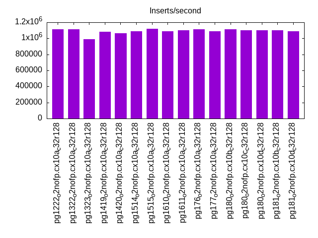
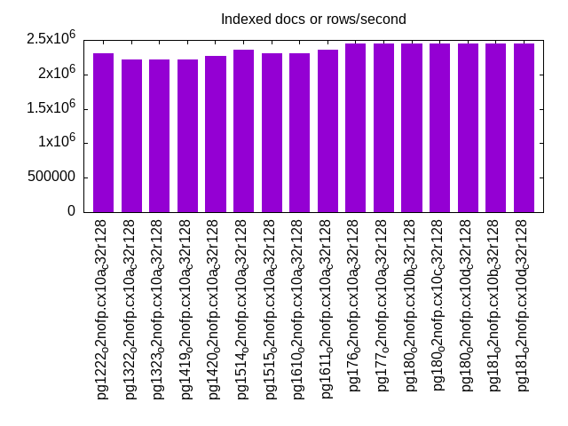
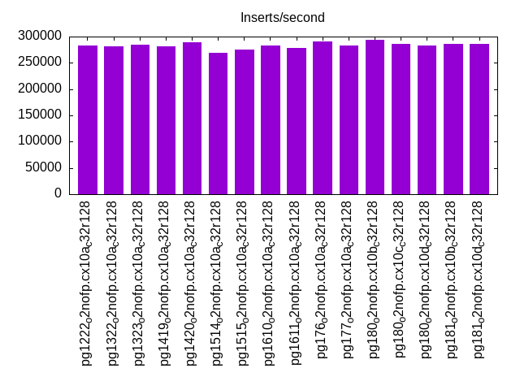
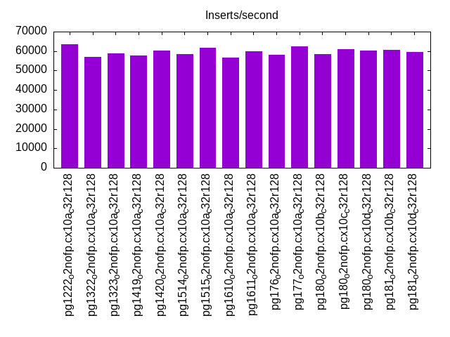
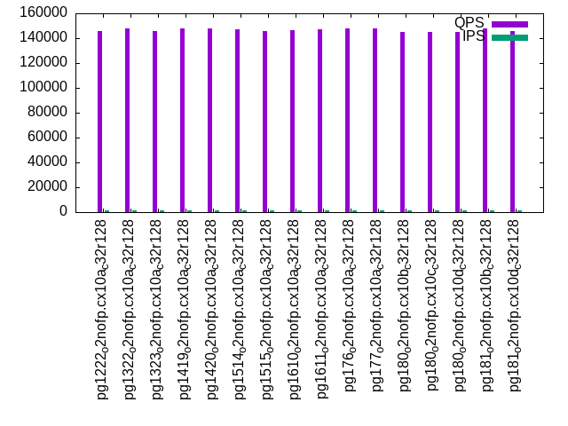
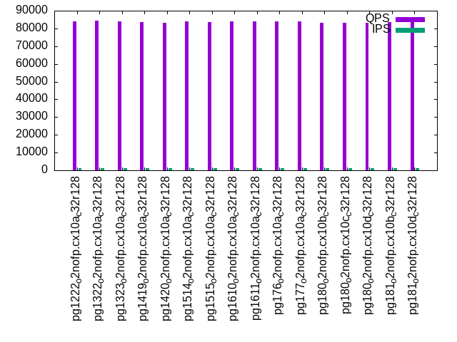
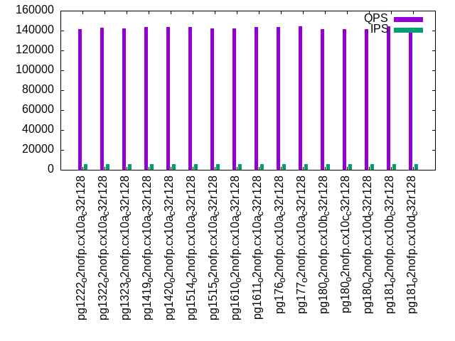
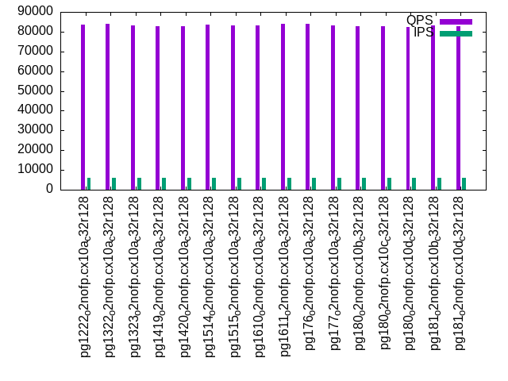
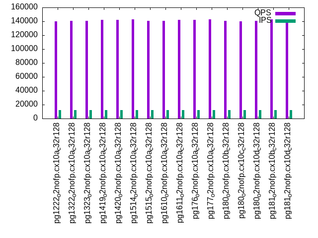
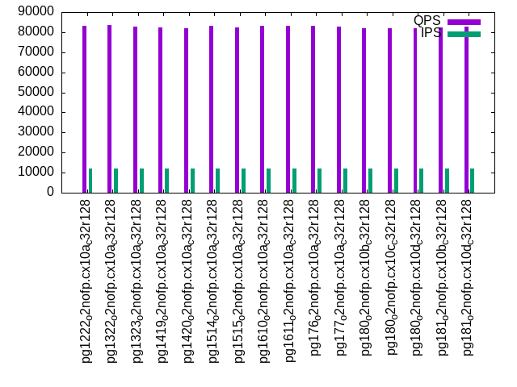

This is a report for the insert benchmark with 120M docs and 12 client(s). It is generated by scripts (bash, awk, sed) and Tufte might not be impressed. An overview of the insert benchmark is here and a short update is here. Below, by DBMS, I mean DBMS+version.config. An example is my8020.c10b40 where my means MySQL, 8020 is version 8.0.20 and c10b40 is the name for the configuration file.
The test server has 32 cores, 128G RAM and 1 NVMe devices. The benchmark was run with 8 clients and there were 1 or 3 connections per client (1 for queries or inserts without rate limits, 1+1 for rate limited inserts+deletes). It uses 8 tables with a table per client. It loads 10M rows per table without secondary indexes, creates 3 secondary indexes per table, then inserts 16m+4m rows per table with a delete per insert to avoid growing the table. It then does 6 read+write tests for 1800s each that do queries as fast as possible with 100,100,500,500,1000,1000 inserts/s and the same for deletes/s per client concurrent with the queries. The database is cached. Clients and the DBMS share one server.
The tested DBMS are:
The numbers are inserts/s for l.i0, l.i1 and l.i2, indexed docs (or rows) /s for l.x and queries/s for qr100, qp100 thru qr1000, qp1000" The values are the average rate over the entire test for inserts (IPS) and queries (QPS). The range of values for IPS and QPS is split into 3 parts: bottom 25%, middle 50%, top 25%. Values in the bottom 25% have a red background, values in the top 25% have a green background and values in the middle have no color. A gray background is used for values that can be ignored because the DBMS did not sustain the target insert rate. Red backgrounds are not used when the minimum value is within 80% of the max value.
| dbms | l.i0 | l.x | l.i1 | l.i2 | qr100 | qp100 | qr500 | qp500 | qr1000 | qp1000 |
|---|---|---|---|---|---|---|---|---|---|---|
| pg1222_o2nofp.cx10a_c32r128 | 1111111 | 2307694 | 283604 | 63660 | 145403 | 84167 | 141614 | 83672 | 140003 | 83116 |
| pg1322_o2nofp.cx10a_c32r128 | 1111111 | 2222224 | 280702 | 57075 | 147514 | 84362 | 143022 | 83909 | 140977 | 83483 |
| pg1323_o2nofp.cx10a_c32r128 | 991736 | 2222224 | 284024 | 58896 | 145900 | 83804 | 142306 | 83248 | 140701 | 82771 |
| pg1419_o2nofp.cx10a_c32r128 | 1081081 | 2222224 | 280702 | 57623 | 147762 | 83456 | 143472 | 82904 | 142032 | 82368 |
| pg1420_o2nofp.cx10a_c32r128 | 1061947 | 2264153 | 288722 | 60226 | 147709 | 83017 | 143579 | 82785 | 142100 | 82164 |
| pg1514_o2nofp.cx10a_c32r128 | 1090909 | 2352943 | 269663 | 58465 | 146855 | 83934 | 143310 | 83766 | 142691 | 82991 |
| pg1515_o2nofp.cx10a_c32r128 | 1121495 | 2307694 | 275862 | 61856 | 145769 | 83422 | 141957 | 83123 | 140543 | 82480 |
| pg1610_o2nofp.cx10a_c32r128 | 1090909 | 2307694 | 282353 | 56470 | 146336 | 83910 | 142324 | 83323 | 141056 | 82979 |
| pg1611_o2nofp.cx10a_c32r128 | 1100917 | 2352943 | 278665 | 59776 | 147343 | 83928 | 143416 | 83798 | 142041 | 83029 |
| pg176_o2nofp.cx10a_c32r128 | 1111111 | 2448982 | 290469 | 58182 | 147895 | 84004 | 143641 | 83858 | 142470 | 83130 |
| pg177_o2nofp.cx10a_c32r128 | 1090909 | 2448982 | 282353 | 62419 | 147861 | 83776 | 144168 | 83214 | 142705 | 82601 |
| pg180_o2nofp.cx10b_c32r128 | 1111111 | 2448982 | 294478 | 58323 | 145280 | 83033 | 141266 | 82581 | 140568 | 81989 |
| pg180_o2nofp.cx10c_c32r128 | 1100917 | 2448982 | 286567 | 60991 | 145197 | 83119 | 141197 | 82692 | 139959 | 81936 |
| pg180_o2nofp.cx10d_c32r128 | 1100917 | 2448982 | 282769 | 60150 | 145155 | 83027 | 141555 | 82453 | 140450 | 81955 |
| pg181_o2nofp.cx10b_c32r128 | 1100917 | 2448982 | 286140 | 60759 | 147902 | 83614 | 144498 | 83212 | 142783 | 82561 |
| pg181_o2nofp.cx10d_c32r128 | 1090909 | 2448982 | 285714 | 59480 | 145710 | 83576 | 142304 | 82966 | 140533 | 82582 |
This table has relative throughput, throughput for the DBMS relative to the DBMS in the first line, using the absolute throughput from the previous table. Values less than 0.95 have a yellow background. Values greater than 1.05 have a blue background.
| dbms | l.i0 | l.x | l.i1 | l.i2 | qr100 | qp100 | qr500 | qp500 | qr1000 | qp1000 |
|---|---|---|---|---|---|---|---|---|---|---|
| pg1222_o2nofp.cx10a_c32r128 | 1.00 | 1.00 | 1.00 | 1.00 | 1.00 | 1.00 | 1.00 | 1.00 | 1.00 | 1.00 |
| pg1322_o2nofp.cx10a_c32r128 | 1.00 | 0.96 | 0.99 | 0.90 | 1.01 | 1.00 | 1.01 | 1.00 | 1.01 | 1.00 |
| pg1323_o2nofp.cx10a_c32r128 | 0.89 | 0.96 | 1.00 | 0.93 | 1.00 | 1.00 | 1.00 | 0.99 | 1.00 | 1.00 |
| pg1419_o2nofp.cx10a_c32r128 | 0.97 | 0.96 | 0.99 | 0.91 | 1.02 | 0.99 | 1.01 | 0.99 | 1.01 | 0.99 |
| pg1420_o2nofp.cx10a_c32r128 | 0.96 | 0.98 | 1.02 | 0.95 | 1.02 | 0.99 | 1.01 | 0.99 | 1.01 | 0.99 |
| pg1514_o2nofp.cx10a_c32r128 | 0.98 | 1.02 | 0.95 | 0.92 | 1.01 | 1.00 | 1.01 | 1.00 | 1.02 | 1.00 |
| pg1515_o2nofp.cx10a_c32r128 | 1.01 | 1.00 | 0.97 | 0.97 | 1.00 | 0.99 | 1.00 | 0.99 | 1.00 | 0.99 |
| pg1610_o2nofp.cx10a_c32r128 | 0.98 | 1.00 | 1.00 | 0.89 | 1.01 | 1.00 | 1.01 | 1.00 | 1.01 | 1.00 |
| pg1611_o2nofp.cx10a_c32r128 | 0.99 | 1.02 | 0.98 | 0.94 | 1.01 | 1.00 | 1.01 | 1.00 | 1.01 | 1.00 |
| pg176_o2nofp.cx10a_c32r128 | 1.00 | 1.06 | 1.02 | 0.91 | 1.02 | 1.00 | 1.01 | 1.00 | 1.02 | 1.00 |
| pg177_o2nofp.cx10a_c32r128 | 0.98 | 1.06 | 1.00 | 0.98 | 1.02 | 1.00 | 1.02 | 0.99 | 1.02 | 0.99 |
| pg180_o2nofp.cx10b_c32r128 | 1.00 | 1.06 | 1.04 | 0.92 | 1.00 | 0.99 | 1.00 | 0.99 | 1.00 | 0.99 |
| pg180_o2nofp.cx10c_c32r128 | 0.99 | 1.06 | 1.01 | 0.96 | 1.00 | 0.99 | 1.00 | 0.99 | 1.00 | 0.99 |
| pg180_o2nofp.cx10d_c32r128 | 0.99 | 1.06 | 1.00 | 0.94 | 1.00 | 0.99 | 1.00 | 0.99 | 1.00 | 0.99 |
| pg181_o2nofp.cx10b_c32r128 | 0.99 | 1.06 | 1.01 | 0.95 | 1.02 | 0.99 | 1.02 | 0.99 | 1.02 | 0.99 |
| pg181_o2nofp.cx10d_c32r128 | 0.98 | 1.06 | 1.01 | 0.93 | 1.00 | 0.99 | 1.00 | 0.99 | 1.00 | 0.99 |
This lists the average rate of inserts/s for the tests that do inserts concurrent with queries. For such tests the query rate is listed in the table above. The read+write tests are setup so that the insert rate should match the target rate every second. Cells that are not at least 95% of the target have a red background to indicate a failure to satisfy the target.
| dbms | qr100.L1 | qp100.L2 | qr500.L3 | qp500.L4 | qr1000.L5 | qp1000.L6 |
|---|---|---|---|---|---|---|
| pg1222_o2nofp.cx10a_c32r128 | 1193 | 1193 | 5964 | 5960 | 11920 | 11920 |
| pg1322_o2nofp.cx10a_c32r128 | 1193 | 1193 | 5964 | 5964 | 11920 | 11920 |
| pg1323_o2nofp.cx10a_c32r128 | 1192 | 1192 | 5960 | 5960 | 11920 | 11927 |
| pg1419_o2nofp.cx10a_c32r128 | 1192 | 1192 | 5960 | 5960 | 11920 | 11920 |
| pg1420_o2nofp.cx10a_c32r128 | 1193 | 1193 | 5964 | 5964 | 11920 | 11920 |
| pg1514_o2nofp.cx10a_c32r128 | 1192 | 1193 | 5964 | 5964 | 11927 | 11927 |
| pg1515_o2nofp.cx10a_c32r128 | 1192 | 1192 | 5960 | 5960 | 11920 | 11927 |
| pg1610_o2nofp.cx10a_c32r128 | 1193 | 1193 | 5964 | 5960 | 11920 | 11920 |
| pg1611_o2nofp.cx10a_c32r128 | 1192 | 1192 | 5964 | 5964 | 11927 | 11927 |
| pg176_o2nofp.cx10a_c32r128 | 1193 | 1193 | 5964 | 5964 | 11927 | 11920 |
| pg177_o2nofp.cx10a_c32r128 | 1193 | 1193 | 5964 | 5964 | 11927 | 11920 |
| pg180_o2nofp.cx10b_c32r128 | 1193 | 1193 | 5964 | 5964 | 11927 | 11927 |
| pg180_o2nofp.cx10c_c32r128 | 1192 | 1192 | 5960 | 5960 | 11920 | 11920 |
| pg180_o2nofp.cx10d_c32r128 | 1193 | 1193 | 5960 | 5960 | 11920 | 11920 |
| pg181_o2nofp.cx10b_c32r128 | 1192 | 1192 | 5964 | 5964 | 11927 | 11927 |
| pg181_o2nofp.cx10d_c32r128 | 1193 | 1193 | 5964 | 5964 | 11927 | 11927 |
| target | 1200 | 1200 | 6000 | 6000 | 12000 | 12000 |
l.i0: load without secondary indexes. Graphs for performance per 1-second interval are here.
Average throughput:
Insert response time histogram: each cell has the percentage of responses that take <= the time in the header and max is the max response time in seconds. For the max column values in the top 25% of the range have a red background and in the bottom 25% of the range have a green background. The red background is not used when the min value is within 80% of the max value.
| dbms | 256us | 1ms | 4ms | 16ms | 64ms | 256ms | 1s | 4s | 16s | gt | max |
|---|---|---|---|---|---|---|---|---|---|---|---|
| pg1222_o2nofp.cx10a_c32r128 | 99.191 | 0.807 | 0.001 | 0.006 | |||||||
| pg1322_o2nofp.cx10a_c32r128 | 99.193 | 0.806 | 0.001 | 0.005 | |||||||
| pg1323_o2nofp.cx10a_c32r128 | 99.056 | 0.880 | 0.006 | 0.012 | 0.022 | 0.022 | 0.001 | 2.080 | |||
| pg1419_o2nofp.cx10a_c32r128 | 98.505 | 1.494 | 0.001 | 0.004 | |||||||
| pg1420_o2nofp.cx10a_c32r128 | 98.457 | 1.542 | 0.001 | 0.006 | |||||||
| pg1514_o2nofp.cx10a_c32r128 | 98.922 | 1.075 | 0.003 | 0.007 | |||||||
| pg1515_o2nofp.cx10a_c32r128 | 99.075 | 0.921 | 0.004 | 0.009 | |||||||
| pg1610_o2nofp.cx10a_c32r128 | 98.835 | 1.162 | 0.002 | 0.005 | |||||||
| pg1611_o2nofp.cx10a_c32r128 | 99.062 | 0.936 | 0.002 | 0.005 | |||||||
| pg176_o2nofp.cx10a_c32r128 | 98.948 | 1.051 | 0.002 | 0.005 | |||||||
| pg177_o2nofp.cx10a_c32r128 | 98.977 | 1.021 | 0.002 | 0.005 | |||||||
| pg180_o2nofp.cx10b_c32r128 | 98.999 | 1.001 | 0.001 | 0.005 | |||||||
| pg180_o2nofp.cx10c_c32r128 | 98.953 | 1.047 | 0.001 | 0.005 | |||||||
| pg180_o2nofp.cx10d_c32r128 | 98.981 | 1.018 | 0.001 | 0.006 | |||||||
| pg181_o2nofp.cx10b_c32r128 | 98.914 | 1.082 | 0.004 | 0.005 | |||||||
| pg181_o2nofp.cx10d_c32r128 | 98.931 | 1.067 | 0.001 | 0.001 | 0.024 |
Performance metrics for the DBMS listed above. Some are normalized by throughput, others are not. Legend for results is here.
ips qps rps rmbps wps wmbps rpq rkbpq wpi wkbpi csps cpups cspq cpupq dbgb1 dbgb2 rss maxop p50 p99 tag 1111111 0 0 0.0 4029.0 466.5 0.000 0.000 0.004 0.430 122298 48.1 0.110 14 11.5 31.0 5.4 0.006 114287 106988 pg1222_o2nofp.cx10a_c32r128 1111111 0 0 0.0 4050.4 468.7 0.000 0.000 0.004 0.432 122584 48.6 0.110 14 11.5 31.1 7.9 0.005 114685 108485 pg1322_o2nofp.cx10a_c32r128 991736 0 1 0.0 3643.5 422.8 0.000 0.000 0.004 0.437 109430 43.5 0.110 14 11.5 31.1 3.3 2.080 114188 7799 pg1323_o2nofp.cx10a_c32r128 1081081 0 0 0.0 3944.0 455.4 0.000 0.000 0.004 0.431 118851 47.4 0.110 14 11.5 31.1 7.7 0.004 109987 104787 pg1419_o2nofp.cx10a_c32r128 1061947 0 1 0.0 3855.6 444.9 0.000 0.000 0.004 0.429 119093 48.0 0.112 14 11.5 31.1 7.7 0.006 109786 105588 pg1420_o2nofp.cx10a_c32r128 1090909 0 0 0.0 3900.1 450.7 0.000 0.000 0.004 0.423 118938 46.8 0.109 14 11.5 31.1 1.5 0.007 112787 105488 pg1514_o2nofp.cx10a_c32r128 1121495 0 1 0.0 4048.4 468.1 0.000 0.000 0.004 0.427 123418 48.8 0.110 14 11.5 31.1 1.5 0.009 114586 107287 pg1515_o2nofp.cx10a_c32r128 1090909 0 0 0.0 3876.7 448.1 0.000 0.000 0.004 0.421 117992 47.2 0.108 14 11.5 31.1 1.5 0.005 111286 103484 pg1610_o2nofp.cx10a_c32r128 1100917 0 1 0.0 4040.8 467.3 0.000 0.000 0.004 0.435 122999 48.7 0.112 14 11.5 31.1 1.5 0.005 114186 107688 pg1611_o2nofp.cx10a_c32r128 1111111 0 0 0.0 4044.0 466.7 0.000 0.000 0.004 0.430 115482 48.0 0.104 14 11.5 31.1 0.2 0.005 113986 107087 pg176_o2nofp.cx10a_c32r128 1090909 0 1 0.0 3944.7 455.5 0.000 0.000 0.004 0.428 111362 47.1 0.102 14 11.5 31.1 0.2 0.005 113687 108587 pg177_o2nofp.cx10a_c32r128 1111111 0 0 0.0 4039.3 466.2 0.000 0.000 0.004 0.430 115416 48.0 0.104 14 11.5 31.1 0.2 0.005 113687 108187 pg180_o2nofp.cx10b_c32r128 1100917 0 0 0.0 3952.4 456.5 0.000 0.000 0.004 0.425 111210 46.7 0.101 14 11.5 31.1 0.2 0.005 113386 106788 pg180_o2nofp.cx10c_c32r128 1100917 0 0 0.0 3955.9 456.7 0.000 0.000 0.004 0.425 111134 46.5 0.101 14 11.5 31.1 0.2 0.006 113286 105688 pg180_o2nofp.cx10d_c32r128 1100917 0 2 0.0 3933.7 454.1 0.000 0.000 0.004 0.422 110935 47.3 0.101 14 11.5 31.1 0.2 0.005 112987 106487 pg181_o2nofp.cx10b_c32r128 1090909 0 0 0.0 3921.5 452.7 0.000 0.000 0.004 0.425 111346 47.2 0.102 14 11.5 31.1 0.2 0.024 113487 108491 pg181_o2nofp.cx10d_c32r128
Average values from iostat.
r/s rkB/s rrqm/s %rrqm r_await rareq-s w/s wkB/s wrqm/s %wrqm w_await wareq-s d/s dkB/s drqm/s %drqm d_await dareq-s f/s f_await aqu-sz %util 0.000 0.000 0.000 0.000 0.000 0.000 4029.0 477691 521.6 11.46 0.382 117.5 5.724 58.02 0.000 0.000 1.236 8.587 175.5 0.414 1.721 22.62 pg1222_o2nofp.cx10a_c32r128 0.000 0.000 0.000 0.000 0.000 0.000 4050.4 479961 536.8 11.40 0.381 117.4 5.695 59.50 0.000 0.000 1.309 9.136 176.7 0.417 1.718 22.82 pg1322_o2nofp.cx10a_c32r128 0.592 2.367 0.000 0.000 0.199 3.167 3643.5 432907 466.1 11.15 5.560 118.1 5.600 68.19 0.000 0.000 6.125 9.808 152.4 1.065 11.00 32.82 pg1323_o2nofp.cx10a_c32r128 0.036 0.145 0.000 0.000 0.205 0.545 3944.0 466370 522.6 11.57 0.369 117.2 5.855 80.80 0.000 0.000 1.330 11.55 175.7 0.417 1.611 22.64 pg1419_o2nofp.cx10a_c32r128 0.555 2.218 0.000 0.000 0.242 3.273 3855.6 455614 519.0 11.55 0.381 117.1 5.700 55.85 0.000 0.000 1.260 8.591 176.0 0.416 1.635 22.12 pg1420_o2nofp.cx10a_c32r128 0.009 0.036 0.000 0.000 0.000 0.182 3900.1 461540 495.1 11.05 0.366 117.3 1.009 12.69 0.000 0.000 0.722 10.54 175.2 0.413 1.591 21.79 pg1514_o2nofp.cx10a_c32r128 1.305 5.219 0.000 0.000 0.289 3.810 4048.4 479380 516.7 11.29 0.374 117.3 1.000 15.12 0.000 0.000 0.902 13.29 182.1 0.414 1.683 22.54 pg1515_o2nofp.cx10a_c32r128 0.091 0.364 0.000 0.000 0.083 1.091 3876.7 458875 496.7 11.31 0.365 117.3 0.855 73.35 0.000 0.000 0.666 25.17 175.7 0.413 1.535 21.96 pg1610_o2nofp.cx10a_c32r128 1.181 4.724 0.000 0.000 0.312 3.619 4040.8 478467 516.5 11.36 0.369 117.2 0.943 21.26 0.000 0.000 0.868 21.01 182.2 0.414 1.655 22.58 pg1611_o2nofp.cx10a_c32r128 0.010 0.038 0.000 0.000 0.000 0.190 4044.0 477888 491.8 10.73 0.365 117.1 0.952 14.51 0.000 0.000 0.848 13.64 177.6 0.410 1.629 22.57 pg176_o2nofp.cx10a_c32r128 1.300 5.199 0.000 0.000 0.316 3.636 3944.7 466427 470.1 10.29 0.360 117.3 0.690 9.633 0.000 0.000 0.830 11.72 171.4 0.409 1.568 21.79 pg177_o2nofp.cx10a_c32r128 0.010 0.038 0.000 0.000 0.048 0.190 4039.3 477353 520.1 11.34 0.371 117.1 1.162 14.48 0.000 0.000 0.870 20.85 177.7 0.411 1.687 22.38 pg180_o2nofp.cx10b_c32r128 0.018 0.073 0.000 0.000 0.045 0.364 3952.4 467483 501.7 10.92 0.372 117.4 0.827 15.31 0.000 0.000 0.810 15.67 171.3 0.410 1.624 21.91 pg180_o2nofp.cx10c_c32r128 0.027 0.109 0.000 0.000 0.045 0.545 3955.9 467690 500.2 10.88 0.358 117.3 0.891 18.76 0.000 0.000 0.836 19.15 171.9 0.410 1.581 22.05 pg180_o2nofp.cx10d_c32r128 1.663 6.654 0.000 0.000 0.248 3.636 3933.7 465046 500.8 10.99 0.357 117.3 0.590 18.38 0.000 0.000 0.806 17.49 172.6 0.410 1.543 21.75 pg181_o2nofp.cx10b_c32r128 0.045 0.182 0.000 0.000 0.091 0.727 3921.5 463575 501.3 11.01 0.365 117.2 0.864 14.07 0.000 0.000 0.898 18.66 172.3 0.410 1.597 21.74 pg181_o2nofp.cx10d_c32r128
l.x: create secondary indexes.
Average throughput:
Performance metrics for the DBMS listed above. Some are normalized by throughput, others are not. Legend for results is here.
ips qps rps rmbps wps wmbps rpq rkbpq wpi wkbpi csps cpups cspq cpupq dbgb1 dbgb2 rss maxop p50 p99 tag 2307694 0 0 0.0 5463.2 668.9 0.000 0.000 0.002 0.297 29036 23.8 0.013 3 23.1 53.1 6.8 0.049 NA NA pg1222_o2nofp.cx10a_c32r128 2222224 0 0 0.0 5162.9 632.2 0.000 0.000 0.002 0.291 25115 23.8 0.011 3 23.1 53.2 6.8 0.008 NA NA pg1322_o2nofp.cx10a_c32r128 2222224 0 1 0.0 5043.8 618.2 0.000 0.000 0.002 0.285 23090 23.5 0.010 3 23.1 53.2 6.9 0.007 NA NA pg1323_o2nofp.cx10a_c32r128 2222224 0 0 0.0 5251.5 642.6 0.000 0.000 0.002 0.296 24706 24.3 0.011 3 23.1 53.2 6.9 0.013 NA NA pg1419_o2nofp.cx10a_c32r128 2264153 0 1 0.0 5209.7 637.9 0.000 0.000 0.002 0.289 23042 25.3 0.010 4 23.1 53.2 6.8 0.036 NA NA pg1420_o2nofp.cx10a_c32r128 2352943 0 0 0.0 5509.9 675.4 0.000 0.000 0.002 0.294 28050 23.1 0.012 3 23.1 53.2 6.9 0.005 NA NA pg1514_o2nofp.cx10a_c32r128 2307694 0 2 0.0 5527.3 677.6 0.000 0.000 0.002 0.301 27925 24.2 0.012 3 23.1 53.2 6.9 0.041 NA NA pg1515_o2nofp.cx10a_c32r128 2307694 0 0 0.0 5538.1 678.9 0.000 0.000 0.002 0.301 27984 22.8 0.012 3 23.1 53.2 6.9 0.003 NA NA pg1610_o2nofp.cx10a_c32r128 2352943 0 1 0.0 5579.9 684.3 0.000 0.000 0.002 0.298 28507 23.7 0.012 3 23.1 53.2 6.9 0.003 NA NA pg1611_o2nofp.cx10a_c32r128 2448982 0 0 0.0 5685.7 696.7 0.000 0.000 0.002 0.291 16284 21.8 0.007 3 23.1 53.1 6.3 0.003 NA NA pg176_o2nofp.cx10a_c32r128 2448982 0 1 0.0 5542.8 679.4 0.000 0.000 0.002 0.284 16422 22.9 0.007 3 23.1 53.1 6.3 0.007 NA NA pg177_o2nofp.cx10a_c32r128 2448982 0 0 0.0 5690.6 697.7 0.000 0.000 0.002 0.292 16612 21.8 0.007 3 23.1 53.1 7.1 0.050 NA NA pg180_o2nofp.cx10b_c32r128 2448982 0 0 0.0 5548.1 679.6 0.000 0.000 0.002 0.284 16257 21.8 0.007 3 23.1 53.1 7.1 0.027 NA NA pg180_o2nofp.cx10c_c32r128 2448982 0 0 0.0 5602.2 686.6 0.000 0.000 0.002 0.287 16077 22.0 0.007 3 23.1 53.1 7.1 0.037 NA NA pg180_o2nofp.cx10d_c32r128 2448982 0 0 0.0 5406.2 662.4 0.000 0.000 0.002 0.277 16222 23.4 0.007 3 23.1 53.1 7.0 0.033 NA NA pg181_o2nofp.cx10b_c32r128 2448982 0 0 0.0 5413.6 663.0 0.000 0.000 0.002 0.277 15972 23.1 0.007 3 23.1 53.1 7.1 0.003 NA NA pg181_o2nofp.cx10d_c32r128
Average values from iostat.
r/s rkB/s rrqm/s %rrqm r_await rareq-s w/s wkB/s wrqm/s %wrqm w_await wareq-s d/s dkB/s drqm/s %drqm d_await dareq-s f/s f_await aqu-sz %util 0.000 0.000 0.000 0.000 0.000 0.000 5463.2 684974 271.5 4.379 0.764 125.0 6.360 121.9 0.000 0.000 1.431 18.64 64.44 0.462 4.545 23.24 pg1222_o2nofp.cx10a_c32r128 0.020 0.080 0.000 0.000 0.000 0.400 5162.9 647352 267.7 4.581 0.753 124.8 4.879 52.95 0.000 0.000 1.441 10.14 62.27 0.444 4.297 22.13 pg1322_o2nofp.cx10a_c32r128 0.800 3.200 0.000 0.000 0.254 4.000 5043.8 633074 243.6 5.427 0.830 124.1 4.400 363.0 0.000 0.000 1.456 74.66 60.55 0.447 4.238 21.19 pg1323_o2nofp.cx10a_c32r128 0.000 0.000 0.000 0.000 0.000 0.000 5251.5 657996 263.1 4.429 0.760 124.9 4.660 91.28 0.000 0.000 1.394 16.76 62.70 0.446 4.254 22.64 pg1419_o2nofp.cx10a_c32r128 0.880 3.519 0.000 0.000 0.253 3.200 5209.7 653230 270.7 4.795 0.849 125.0 4.699 88.07 0.000 0.000 1.550 16.34 62.70 0.454 4.442 22.02 pg1420_o2nofp.cx10a_c32r128 0.040 0.160 0.000 0.000 0.100 0.800 5509.9 691649 269.2 4.599 0.790 125.2 2.860 100.6 0.000 0.000 1.209 32.09 64.12 0.464 4.480 23.11 pg1514_o2nofp.cx10a_c32r128 1.560 6.240 0.000 0.000 0.314 3.600 5527.3 693886 267.4 10.45 0.883 115.2 4.140 67.28 0.000 0.000 1.301 14.72 64.16 0.463 4.563 23.23 pg1515_o2nofp.cx10a_c32r128 0.180 0.720 0.000 0.000 0.283 2.400 5538.1 695195 261.4 4.448 0.789 125.3 2.840 52.80 0.000 0.000 1.475 25.12 64.34 0.455 4.514 23.43 pg1610_o2nofp.cx10a_c32r128 0.620 2.480 0.000 0.000 0.530 4.000 5579.9 700730 266.0 4.440 0.813 125.3 3.440 44.48 0.000 0.000 1.378 13.06 63.96 0.465 4.677 23.11 pg1611_o2nofp.cx10a_c32r128 0.000 0.000 0.000 0.000 0.000 0.000 5685.7 713416 265.9 4.950 0.819 124.8 5.980 61929.8 0.000 0.000 1.282 6553.3 64.22 0.479 5.108 23.92 pg176_o2nofp.cx10a_c32r128 1.340 5.360 0.000 0.000 0.389 4.000 5542.8 695673 269.8 5.133 0.818 124.8 4.980 42314.2 0.000 0.000 1.298 4485.4 64.08 0.460 4.903 22.77 pg177_o2nofp.cx10a_c32r128 0.040 0.160 0.000 0.000 0.000 0.800 5690.6 714433 271.9 5.325 0.844 124.8 6.940 67541.3 0.000 0.000 1.131 6675.9 64.04 0.485 5.321 23.69 pg180_o2nofp.cx10b_c32r128 0.040 0.160 0.000 0.000 0.000 0.400 5548.1 695950 275.5 5.118 0.830 124.8 5.080 42317.8 0.000 0.000 1.128 4620.5 64.64 0.480 4.988 23.24 pg180_o2nofp.cx10c_c32r128 0.140 0.560 0.000 0.000 0.260 1.200 5602.2 703028 274.3 5.143 0.810 124.8 4.800 49354.3 0.000 0.000 1.073 5188.0 63.88 0.484 4.799 23.41 pg180_o2nofp.cx10d_c32r128 0.160 0.640 0.000 0.000 0.750 2.400 5406.2 678337 271.2 5.291 0.829 124.9 4.540 35272.4 0.000 0.000 0.963 4519.6 63.54 0.469 4.562 22.80 pg181_o2nofp.cx10b_c32r128 0.020 0.080 0.000 0.000 0.000 0.400 5413.6 678928 267.8 5.246 0.840 124.8 4.280 28222.7 0.000 0.000 1.110 4652.1 64.18 0.465 4.831 22.67 pg181_o2nofp.cx10d_c32r128
l.i1: continue load after secondary indexes created with 50 inserts per transaction. Graphs for performance per 1-second interval are here.
Average throughput:
Insert response time histogram: each cell has the percentage of responses that take <= the time in the header and max is the max response time in seconds. For the max column values in the top 25% of the range have a red background and in the bottom 25% of the range have a green background. The red background is not used when the min value is within 80% of the max value.
| dbms | 256us | 1ms | 4ms | 16ms | 64ms | 256ms | 1s | 4s | 16s | gt | max |
|---|---|---|---|---|---|---|---|---|---|---|---|
| pg1222_o2nofp.cx10a_c32r128 | 0.604 | 98.751 | 0.265 | 0.280 | 0.060 | 0.038 | nonzero | 1.077 | |||
| pg1322_o2nofp.cx10a_c32r128 | 0.641 | 98.751 | 0.251 | 0.261 | 0.063 | 0.033 | nonzero | 1.236 | |||
| pg1323_o2nofp.cx10a_c32r128 | 0.562 | 98.796 | 0.273 | 0.281 | 0.061 | 0.028 | 0.945 | ||||
| pg1419_o2nofp.cx10a_c32r128 | 0.534 | 98.935 | 0.207 | 0.227 | 0.066 | 0.031 | 0.914 | ||||
| pg1420_o2nofp.cx10a_c32r128 | 0.592 | 98.929 | 0.189 | 0.206 | 0.045 | 0.039 | nonzero | 1.039 | |||
| pg1514_o2nofp.cx10a_c32r128 | 0.695 | 98.719 | 0.195 | 0.264 | 0.092 | 0.034 | nonzero | 1.013 | |||
| pg1515_o2nofp.cx10a_c32r128 | 1.374 | 98.112 | 0.188 | 0.236 | 0.051 | 0.038 | 0.728 | ||||
| pg1610_o2nofp.cx10a_c32r128 | 0.651 | 98.778 | 0.242 | 0.238 | 0.063 | 0.028 | 0.739 | ||||
| pg1611_o2nofp.cx10a_c32r128 | 0.941 | 98.496 | 0.230 | 0.243 | 0.056 | 0.033 | 0.616 | ||||
| pg176_o2nofp.cx10a_c32r128 | 0.690 | 98.755 | 0.260 | 0.214 | 0.049 | 0.031 | 0.900 | ||||
| pg177_o2nofp.cx10a_c32r128 | 1.219 | 98.204 | 0.222 | 0.251 | 0.077 | 0.028 | 0.827 | ||||
| pg180_o2nofp.cx10b_c32r128 | 0.856 | 98.580 | 0.227 | 0.241 | 0.066 | 0.030 | 0.622 | ||||
| pg180_o2nofp.cx10c_c32r128 | 1.001 | 98.400 | 0.243 | 0.263 | 0.064 | 0.030 | 0.853 | ||||
| pg180_o2nofp.cx10d_c32r128 | 1.425 | 98.028 | 0.189 | 0.256 | 0.070 | 0.032 | 0.607 | ||||
| pg181_o2nofp.cx10b_c32r128 | 0.805 | 98.611 | 0.245 | 0.238 | 0.066 | 0.035 | 0.675 | ||||
| pg181_o2nofp.cx10d_c32r128 | 1.090 | 98.291 | 0.257 | 0.264 | 0.067 | 0.030 | 0.834 |
Delete response time histogram: each cell has the percentage of responses that take <= the time in the header and max is the max response time in seconds. For the max column values in the top 25% of the range have a red background and in the bottom 25% of the range have a green background. The red background is not used when the min value is within 80% of the max value.
| dbms | 256us | 1ms | 4ms | 16ms | 64ms | 256ms | 1s | 4s | 16s | gt | max |
|---|---|---|---|---|---|---|---|---|---|---|---|
| pg1222_o2nofp.cx10a_c32r128 | 29.717 | 68.922 | 0.992 | 0.268 | 0.060 | 0.040 | nonzero | 1.077 | |||
| pg1322_o2nofp.cx10a_c32r128 | 28.406 | 70.343 | 0.912 | 0.242 | 0.062 | 0.035 | nonzero | 1.236 | |||
| pg1323_o2nofp.cx10a_c32r128 | 27.481 | 71.290 | 0.870 | 0.265 | 0.064 | 0.030 | 0.946 | ||||
| pg1419_o2nofp.cx10a_c32r128 | 24.151 | 74.781 | 0.762 | 0.212 | 0.061 | 0.032 | 0.915 | ||||
| pg1420_o2nofp.cx10a_c32r128 | 26.032 | 73.140 | 0.552 | 0.193 | 0.043 | 0.040 | nonzero | 1.039 | |||
| pg1514_o2nofp.cx10a_c32r128 | 23.788 | 75.114 | 0.719 | 0.256 | 0.088 | 0.035 | nonzero | 1.012 | |||
| pg1515_o2nofp.cx10a_c32r128 | 25.449 | 73.579 | 0.683 | 0.201 | 0.050 | 0.038 | 0.728 | ||||
| pg1610_o2nofp.cx10a_c32r128 | 25.928 | 73.080 | 0.693 | 0.212 | 0.058 | 0.030 | 0.597 | ||||
| pg1611_o2nofp.cx10a_c32r128 | 26.136 | 72.748 | 0.801 | 0.224 | 0.058 | 0.034 | 0.616 | ||||
| pg176_o2nofp.cx10a_c32r128 | 23.146 | 75.884 | 0.682 | 0.206 | 0.049 | 0.033 | 0.900 | ||||
| pg177_o2nofp.cx10a_c32r128 | 22.871 | 76.226 | 0.562 | 0.239 | 0.073 | 0.030 | 0.829 | ||||
| pg180_o2nofp.cx10b_c32r128 | 24.655 | 74.594 | 0.429 | 0.228 | 0.065 | 0.029 | 0.622 | ||||
| pg180_o2nofp.cx10c_c32r128 | 23.281 | 75.905 | 0.479 | 0.242 | 0.064 | 0.030 | 0.790 | ||||
| pg180_o2nofp.cx10d_c32r128 | 22.585 | 76.657 | 0.433 | 0.228 | 0.065 | 0.032 | 0.607 | ||||
| pg181_o2nofp.cx10b_c32r128 | 23.501 | 75.672 | 0.502 | 0.226 | 0.062 | 0.035 | 0.674 | ||||
| pg181_o2nofp.cx10d_c32r128 | 23.885 | 75.258 | 0.514 | 0.245 | 0.067 | 0.031 | 0.833 |
Performance metrics for the DBMS listed above. Some are normalized by throughput, others are not. Legend for results is here.
ips qps rps rmbps wps wmbps rpq rkbpq wpi wkbpi csps cpups cspq cpupq dbgb1 dbgb2 rss maxop p50 p99 tag 283604 0 0 0.0 3843.5 420.4 0.000 0.000 0.014 1.518 125276 64.2 0.442 72 35.4 131.5 25.1 1.077 31196 2050 pg1222_o2nofp.cx10a_c32r128 280702 0 0 0.0 3751.5 409.2 0.000 0.000 0.013 1.493 122627 64.7 0.437 74 35.1 131.1 27.3 1.236 29046 1150 pg1322_o2nofp.cx10a_c32r128 284024 0 0 0.0 3812.0 416.2 0.000 0.000 0.013 1.500 123893 65.8 0.436 74 35.0 131.1 24.5 0.945 29795 2250 pg1323_o2nofp.cx10a_c32r128 280702 0 0 0.0 3696.6 398.9 0.000 0.000 0.013 1.455 125323 62.2 0.446 71 33.5 129.5 27.5 0.914 27246 700 pg1419_o2nofp.cx10a_c32r128 288722 0 0 0.0 3817.0 411.1 0.000 0.000 0.013 1.458 126885 62.3 0.439 69 33.5 129.5 24.6 1.039 29595 700 pg1420_o2nofp.cx10a_c32r128 269663 0 0 0.0 3552.0 382.7 0.000 0.000 0.013 1.453 121431 60.6 0.450 72 33.3 129.4 25.2 1.013 26846 850 pg1514_o2nofp.cx10a_c32r128 275862 0 0 0.0 3632.0 391.3 0.000 0.000 0.013 1.452 124852 60.2 0.453 70 33.5 129.5 27.1 0.728 31196 1800 pg1515_o2nofp.cx10a_c32r128 282353 0 0 0.0 3535.2 396.9 0.000 0.000 0.013 1.439 127255 62.8 0.451 71 33.2 129.2 22.7 0.739 27897 750 pg1610_o2nofp.cx10a_c32r128 278665 0 0 0.0 3484.6 390.9 0.000 0.000 0.013 1.436 127684 61.4 0.458 71 33.2 129.2 28.7 0.616 27396 2850 pg1611_o2nofp.cx10a_c32r128 290469 0 0 0.0 3690.7 413.2 0.000 0.000 0.013 1.457 121421 63.2 0.418 70 33.2 129.2 23.7 0.900 28146 550 pg176_o2nofp.cx10a_c32r128 282353 0 1 0.0 3592.0 402.8 0.000 0.000 0.013 1.461 117515 61.1 0.416 69 33.2 129.3 29.4 0.827 28946 850 pg177_o2nofp.cx10a_c32r128 294478 0 0 0.0 3753.6 419.8 0.000 0.000 0.013 1.460 122424 62.8 0.416 68 33.0 129.1 24.0 0.622 30046 1700 pg180_o2nofp.cx10b_c32r128 286567 0 0 0.0 3648.2 408.7 0.000 0.000 0.013 1.460 118758 61.8 0.414 69 33.2 129.2 18.6 0.853 29346 1300 pg180_o2nofp.cx10c_c32r128 282769 0 0 0.0 3600.1 402.5 0.000 0.000 0.013 1.458 118372 61.6 0.419 70 33.0 129.0 18.7 0.607 28396 1300 pg180_o2nofp.cx10d_c32r128 286140 0 0 0.0 3657.3 409.6 0.000 0.000 0.013 1.466 118065 61.9 0.413 69 33.0 129.1 30.1 0.675 28246 900 pg181_o2nofp.cx10b_c32r128 285714 0 0 0.0 3659.5 409.9 0.000 0.000 0.013 1.469 118179 61.9 0.414 69 33.1 129.1 18.6 0.834 27997 1300 pg181_o2nofp.cx10d_c32r128
Average values from iostat.
r/s rkB/s rrqm/s %rrqm r_await rareq-s w/s wkB/s wrqm/s %wrqm w_await wareq-s d/s dkB/s drqm/s %drqm d_await dareq-s f/s f_await aqu-sz %util 0.006 0.024 0.000 0.000 0.207 0.119 3843.5 430506 319.3 7.016 5.360 111.3 3.970 878.2 0.000 0.000 5.896 152.3 220.7 1.495 11.24 42.60 pg1222_o2nofp.cx10a_c32r128 0.003 0.012 0.000 0.000 0.007 0.058 3751.5 418970 319.4 7.110 5.244 110.9 3.939 423.9 0.000 0.000 6.423 62.05 219.9 1.513 10.28 41.41 pg1322_o2nofp.cx10a_c32r128 0.407 1.636 0.001 0.093 0.337 2.197 3812.0 426140 352.7 7.750 4.681 110.9 3.960 546.2 0.000 0.000 5.912 102.7 224.0 1.454 9.839 40.05 pg1323_o2nofp.cx10a_c32r128 0.015 0.058 0.000 0.000 0.022 0.292 3696.6 408504 302.9 6.289 4.734 110.4 3.730 360.8 0.000 0.000 6.059 61.81 238.8 1.604 9.543 41.58 pg1419_o2nofp.cx10a_c32r128 0.385 1.540 0.000 0.000 1.153 2.135 3817.0 420935 307.2 6.452 4.716 109.8 3.782 451.6 0.000 0.000 6.812 69.81 250.0 1.509 9.202 40.15 pg1420_o2nofp.cx10a_c32r128 0.018 0.073 0.000 0.000 0.025 0.310 3552.0 391935 288.7 6.085 5.552 110.5 0.224 353.9 0.000 0.000 0.375 258.5 230.9 1.840 11.44 43.55 pg1514_o2nofp.cx10a_c32r128 0.483 1.934 0.000 0.000 0.321 2.273 3632.0 400689 283.3 5.978 3.892 110.4 0.237 424.4 0.000 0.000 0.616 372.0 237.7 1.564 8.269 40.65 pg1515_o2nofp.cx10a_c32r128 0.004 0.018 0.000 0.000 0.007 0.088 3535.2 406403 287.0 6.304 4.413 114.5 0.213 229.9 0.000 0.000 0.151 102.7 195.6 1.510 8.408 37.78 pg1610_o2nofp.cx10a_c32r128 0.335 1.339 0.000 0.000 0.167 2.087 3484.6 400266 293.4 6.465 4.584 114.3 0.232 264.4 0.000 0.000 0.231 37.23 193.7 1.522 8.283 37.44 pg1611_o2nofp.cx10a_c32r128 0.008 0.030 0.000 0.000 0.015 0.152 3690.7 423077 289.9 6.229 4.213 113.9 0.258 396.0 0.000 0.000 1.043 63.66 200.5 1.431 7.589 36.81 pg176_o2nofp.cx10a_c32r128 0.659 2.635 0.000 0.000 0.419 2.324 3592.0 412484 298.8 6.224 4.650 114.5 0.232 392.9 0.000 0.000 0.361 404.3 193.7 1.790 9.096 39.89 pg177_o2nofp.cx10a_c32r128 0.003 0.012 0.000 0.000 0.008 0.062 3753.6 429903 298.1 6.498 4.359 113.9 0.298 719.2 0.000 0.000 0.396 547.3 202.5 1.569 7.992 38.14 pg180_o2nofp.cx10b_c32r128 0.007 0.030 0.000 0.000 0.015 0.149 3648.2 418469 294.2 6.607 4.539 114.2 0.237 526.0 0.000 0.000 0.861 216.8 194.0 1.714 8.430 40.47 pg180_o2nofp.cx10c_c32r128 0.013 0.053 0.000 0.000 0.019 0.237 3600.1 412194 294.2 6.285 4.631 114.3 0.210 341.1 0.000 0.000 0.330 301.2 194.7 1.758 8.726 39.83 pg180_o2nofp.cx10d_c32r128 0.024 0.096 0.000 0.000 0.049 0.418 3657.3 419452 296.3 6.306 5.198 114.5 0.245 535.6 0.000 0.000 1.203 258.9 194.7 1.777 9.704 40.42 pg181_o2nofp.cx10b_c32r128 0.022 0.090 0.000 0.000 0.101 0.418 3659.5 419739 292.3 6.423 4.829 114.3 0.245 469.6 0.000 0.000 0.394 153.6 193.7 1.826 8.583 40.44 pg181_o2nofp.cx10d_c32r128
l.i2: continue load after secondary indexes created with 5 inserts per transaction. Graphs for performance per 1-second interval are here.
Average throughput:
Insert response time histogram: each cell has the percentage of responses that take <= the time in the header and max is the max response time in seconds. For the max column values in the top 25% of the range have a red background and in the bottom 25% of the range have a green background. The red background is not used when the min value is within 80% of the max value.
| dbms | 256us | 1ms | 4ms | 16ms | 64ms | 256ms | 1s | 4s | 16s | gt | max |
|---|---|---|---|---|---|---|---|---|---|---|---|
| pg1222_o2nofp.cx10a_c32r128 | 35.791 | 64.184 | 0.025 | nonzero | nonzero | 0.047 | |||||
| pg1322_o2nofp.cx10a_c32r128 | 52.001 | 47.976 | 0.023 | nonzero | nonzero | nonzero | 0.097 | ||||
| pg1323_o2nofp.cx10a_c32r128 | 58.214 | 41.763 | 0.022 | nonzero | nonzero | nonzero | 0.093 | ||||
| pg1419_o2nofp.cx10a_c32r128 | 37.381 | 62.616 | 0.003 | nonzero | nonzero | 0.109 | |||||
| pg1420_o2nofp.cx10a_c32r128 | 52.774 | 47.223 | 0.003 | nonzero | nonzero | nonzero | 0.091 | ||||
| pg1514_o2nofp.cx10a_c32r128 | 31.572 | 68.426 | 0.002 | nonzero | nonzero | 0.108 | |||||
| pg1515_o2nofp.cx10a_c32r128 | 54.595 | 45.402 | 0.003 | nonzero | 0.106 | ||||||
| pg1610_o2nofp.cx10a_c32r128 | 30.313 | 69.684 | 0.003 | nonzero | 0.001 | nonzero | 0.093 | ||||
| pg1611_o2nofp.cx10a_c32r128 | 51.325 | 48.670 | 0.004 | 0.001 | 0.001 | nonzero | 0.093 | ||||
| pg176_o2nofp.cx10a_c32r128 | 50.841 | 49.156 | 0.003 | nonzero | nonzero | nonzero | 0.098 | ||||
| pg177_o2nofp.cx10a_c32r128 | 72.144 | 27.854 | 0.002 | nonzero | nonzero | 0.094 | |||||
| pg180_o2nofp.cx10b_c32r128 | 48.486 | 51.511 | 0.003 | nonzero | nonzero | nonzero | 0.104 | ||||
| pg180_o2nofp.cx10c_c32r128 | 65.088 | 34.910 | 0.002 | nonzero | nonzero | nonzero | 0.114 | ||||
| pg180_o2nofp.cx10d_c32r128 | 66.178 | 33.820 | 0.002 | nonzero | nonzero | nonzero | 0.093 | ||||
| pg181_o2nofp.cx10b_c32r128 | 66.195 | 33.801 | 0.003 | nonzero | nonzero | nonzero | 0.095 | ||||
| pg181_o2nofp.cx10d_c32r128 | 66.441 | 33.557 | 0.003 | nonzero | nonzero | 0.101 |
Delete response time histogram: each cell has the percentage of responses that take <= the time in the header and max is the max response time in seconds. For the max column values in the top 25% of the range have a red background and in the bottom 25% of the range have a green background. The red background is not used when the min value is within 80% of the max value.
| dbms | 256us | 1ms | 4ms | 16ms | 64ms | 256ms | 1s | 4s | 16s | gt | max |
|---|---|---|---|---|---|---|---|---|---|---|---|
| pg1222_o2nofp.cx10a_c32r128 | 0.141 | 63.744 | 36.102 | 0.012 | 0.001 | 0.048 | |||||
| pg1322_o2nofp.cx10a_c32r128 | 0.120 | 56.457 | 43.408 | 0.014 | 0.001 | nonzero | 0.097 | ||||
| pg1323_o2nofp.cx10a_c32r128 | 0.179 | 57.633 | 42.184 | 0.004 | 0.001 | nonzero | 0.094 | ||||
| pg1419_o2nofp.cx10a_c32r128 | 0.063 | 50.739 | 49.196 | 0.003 | nonzero | 0.109 | |||||
| pg1420_o2nofp.cx10a_c32r128 | 0.071 | 57.418 | 42.509 | 0.002 | nonzero | nonzero | 0.091 | ||||
| pg1514_o2nofp.cx10a_c32r128 | 0.040 | 52.114 | 47.844 | 0.002 | nonzero | 0.108 | |||||
| pg1515_o2nofp.cx10a_c32r128 | 0.088 | 59.905 | 40.004 | 0.002 | nonzero | 0.106 | |||||
| pg1610_o2nofp.cx10a_c32r128 | 0.044 | 49.901 | 50.051 | 0.003 | 0.001 | nonzero | 0.093 | ||||
| pg1611_o2nofp.cx10a_c32r128 | 0.064 | 56.345 | 43.587 | 0.003 | 0.001 | nonzero | 0.093 | ||||
| pg176_o2nofp.cx10a_c32r128 | 0.062 | 49.847 | 50.090 | 0.001 | nonzero | nonzero | 0.098 | ||||
| pg177_o2nofp.cx10a_c32r128 | 0.123 | 54.087 | 45.790 | nonzero | nonzero | 0.094 | |||||
| pg180_o2nofp.cx10b_c32r128 | 0.004 | 51.773 | 48.219 | 0.004 | 0.001 | nonzero | 0.104 | ||||
| pg180_o2nofp.cx10c_c32r128 | 0.008 | 54.791 | 45.199 | 0.002 | nonzero | nonzero | 0.115 | ||||
| pg180_o2nofp.cx10d_c32r128 | 0.010 | 55.057 | 44.930 | 0.003 | nonzero | nonzero | 0.093 | ||||
| pg181_o2nofp.cx10b_c32r128 | 0.013 | 53.814 | 46.172 | 0.001 | nonzero | nonzero | 0.095 | ||||
| pg181_o2nofp.cx10d_c32r128 | 0.014 | 53.625 | 46.359 | 0.001 | nonzero | nonzero | 0.101 |
Performance metrics for the DBMS listed above. Some are normalized by throughput, others are not. Legend for results is here.
ips qps rps rmbps wps wmbps rpq rkbpq wpi wkbpi csps cpups cspq cpupq dbgb1 dbgb2 rss maxop p50 p99 tag 63660 0 0 0.0 600.9 66.2 0.000 0.000 0.009 1.064 271715 57.0 4.268 287 35.5 131.6 8.0 0.047 4389 2955 pg1222_o2nofp.cx10a_c32r128 57075 0 0 0.0 535.8 59.1 0.000 0.000 0.009 1.060 248678 53.2 4.357 298 35.1 131.2 17.3 0.097 3964 2590 pg1322_o2nofp.cx10a_c32r128 58896 0 0 0.0 551.1 60.6 0.000 0.000 0.009 1.054 255811 53.3 4.343 290 35.1 131.2 10.2 0.093 4129 2755 pg1323_o2nofp.cx10a_c32r128 57623 0 0 0.0 550.8 61.0 0.000 0.000 0.010 1.083 257436 52.1 4.468 289 33.5 129.6 9.9 0.109 3945 2755 pg1419_o2nofp.cx10a_c32r128 60226 0 0 0.0 573.4 63.6 0.000 0.000 0.010 1.081 266223 52.4 4.420 278 33.6 129.7 27.2 0.091 3945 2250 pg1420_o2nofp.cx10a_c32r128 58465 0 0 0.0 554.8 61.7 0.000 0.000 0.009 1.081 260486 53.2 4.455 291 33.4 129.5 27.2 0.108 3750 2395 pg1514_o2nofp.cx10a_c32r128 61856 0 0 0.0 594.0 66.2 0.000 0.000 0.010 1.095 272955 52.8 4.413 273 33.5 129.6 2.7 0.106 4814 3655 pg1515_o2nofp.cx10a_c32r128 56470 0 0 0.0 532.7 59.3 0.000 0.000 0.009 1.076 250196 52.2 4.431 296 33.3 129.5 10.3 0.093 3660 2280 pg1610_o2nofp.cx10a_c32r128 59776 0 0 0.0 571.5 63.7 0.000 0.000 0.010 1.092 264249 52.5 4.421 281 33.4 129.5 24.1 0.093 3960 2735 pg1611_o2nofp.cx10a_c32r128 58182 0 0 0.0 557.1 62.0 0.000 0.000 0.010 1.091 234046 52.2 4.023 287 33.4 129.5 11.2 0.098 3780 2565 pg176_o2nofp.cx10a_c32r128 62419 0 0 0.0 591.4 65.6 0.000 0.000 0.009 1.076 250304 53.1 4.010 272 33.4 129.5 9.2 0.094 4729 3460 pg177_o2nofp.cx10a_c32r128 58323 0 0 0.0 560.7 62.3 0.000 0.000 0.010 1.094 234772 52.8 4.025 290 33.2 129.3 8.0 0.104 4384 3070 pg180_o2nofp.cx10b_c32r128 60991 0 0 0.0 576.3 64.0 0.000 0.000 0.009 1.074 244691 52.5 4.012 275 33.3 129.5 23.3 0.114 4424 3215 pg180_o2nofp.cx10c_c32r128 60150 0 0 0.0 580.6 64.3 0.000 0.000 0.010 1.095 242072 51.8 4.024 276 33.2 129.3 18.7 0.093 3880 2345 pg180_o2nofp.cx10d_c32r128 60759 0 0 0.0 570.1 63.3 0.000 0.000 0.009 1.067 241471 52.7 3.974 278 33.2 129.3 25.4 0.095 3929 2415 pg181_o2nofp.cx10b_c32r128 59480 0 0 0.0 553.8 61.3 0.000 0.000 0.009 1.056 237020 51.7 3.985 278 33.2 129.3 17.6 0.101 4164 3204 pg181_o2nofp.cx10d_c32r128
Average values from iostat.
r/s rkB/s rrqm/s %rrqm r_await rareq-s w/s wkB/s wrqm/s %wrqm w_await wareq-s d/s dkB/s drqm/s %drqm d_await dareq-s f/s f_await aqu-sz %util 0.000 0.000 0.000 0.000 0.000 0.000 600.9 67743.7 18.70 3.180 0.283 112.4 2.667 19.42 0.000 0.000 1.103 7.049 43.47 0.534 0.195 6.564 pg1222_o2nofp.cx10a_c32r128 0.000 0.000 0.000 0.000 0.000 0.000 535.8 60476.6 17.21 3.261 0.353 112.5 2.706 203.0 0.000 0.000 1.178 56.40 38.96 0.569 0.240 6.426 pg1322_o2nofp.cx10a_c32r128 0.001 0.005 0.000 0.000 0.000 0.025 551.1 62082.2 19.91 3.630 0.272 112.4 2.628 53.42 0.000 0.000 1.039 13.67 40.18 0.521 0.171 5.822 pg1323_o2nofp.cx10a_c32r128 0.000 0.000 0.000 0.000 0.000 0.000 550.8 62415.9 11.34 2.354 0.359 112.4 2.620 141.7 0.000 0.000 1.245 44.08 40.10 0.563 0.270 6.370 pg1419_o2nofp.cx10a_c32r128 0.000 0.000 0.000 0.000 0.000 0.000 573.4 65109.8 10.60 2.038 0.471 112.9 2.664 85.79 0.000 0.000 1.326 26.08 41.33 0.669 0.432 7.930 pg1420_o2nofp.cx10a_c32r128 0.000 0.000 0.000 0.000 0.000 0.000 554.8 63183.2 8.915 1.725 0.285 113.8 0.032 157.6 0.000 0.000 0.056 298.9 41.13 0.531 0.175 5.836 pg1514_o2nofp.cx10a_c32r128 0.000 0.000 0.000 0.000 0.000 0.000 594.0 67759.6 8.680 1.678 0.296 113.8 0.025 165.4 0.000 0.000 0.052 242.9 44.01 0.518 0.184 5.919 pg1515_o2nofp.cx10a_c32r128 0.000 0.000 0.000 0.000 0.000 0.000 532.7 60754.2 8.354 1.698 0.469 113.7 0.014 32.96 0.000 0.000 0.041 68.39 39.05 0.619 0.395 6.709 pg1610_o2nofp.cx10a_c32r128 0.001 0.005 0.000 0.000 0.000 0.025 571.5 65263.0 8.999 1.775 0.494 114.0 0.011 15.04 0.000 0.000 0.031 25.11 41.38 0.612 0.493 6.883 pg1611_o2nofp.cx10a_c32r128 0.000 0.000 0.000 0.000 0.000 0.000 557.1 63459.8 7.908 1.535 0.533 113.5 0.004 13.60 0.000 0.000 0.006 22.67 39.91 0.703 0.540 7.970 pg176_o2nofp.cx10a_c32r128 0.000 0.000 0.000 0.000 0.000 0.000 591.4 67138.9 8.476 1.545 0.295 113.5 0.014 49.28 0.000 0.000 0.048 133.3 43.94 0.526 0.199 5.936 pg177_o2nofp.cx10a_c32r128 0.000 0.000 0.000 0.000 0.000 0.000 560.7 63807.1 8.348 1.620 0.551 113.8 0.011 35.14 0.000 0.000 0.026 65.71 40.52 0.682 0.527 8.003 pg180_o2nofp.cx10b_c32r128 0.000 0.000 0.000 0.000 0.000 0.000 576.3 65527.5 8.636 1.606 0.353 113.6 0.015 1.345 0.000 0.000 0.057 4.930 42.37 0.560 0.316 6.175 pg180_o2nofp.cx10c_c32r128 0.000 0.000 0.000 0.000 0.000 0.000 580.6 65866.1 8.449 1.604 0.357 112.9 0.015 34.85 0.000 0.000 0.040 89.36 43.15 0.567 0.248 6.202 pg180_o2nofp.cx10d_c32r128 0.000 0.000 0.000 0.000 0.000 0.000 570.1 64807.8 9.167 1.806 0.378 113.5 0.016 20.58 0.000 0.000 0.043 28.90 41.85 0.557 0.367 6.041 pg181_o2nofp.cx10b_c32r128 0.000 0.000 0.000 0.000 0.000 0.000 553.8 62789.0 8.512 1.737 0.277 113.0 0.019 60.96 0.000 0.000 0.064 126.3 41.19 0.528 0.161 5.442 pg181_o2nofp.cx10d_c32r128
qr100.L1: range queries with 100 insert/s per client. Graphs for performance per 1-second interval are here.
Average throughput:
Query response time histogram: each cell has the percentage of responses that take <= the time in the header and max is the max response time in seconds. For max values in the top 25% of the range have a red background and in the bottom 25% of the range have a green background. The red background is not used when the min value is within 80% of the max value.
| dbms | 256us | 1ms | 4ms | 16ms | 64ms | 256ms | 1s | 4s | 16s | gt | max |
|---|---|---|---|---|---|---|---|---|---|---|---|
| pg1222_o2nofp.cx10a_c32r128 | 99.999 | 0.001 | nonzero | 0.002 | |||||||
| pg1322_o2nofp.cx10a_c32r128 | 99.999 | 0.001 | nonzero | 0.002 | |||||||
| pg1323_o2nofp.cx10a_c32r128 | 99.999 | 0.001 | nonzero | nonzero | 0.004 | ||||||
| pg1419_o2nofp.cx10a_c32r128 | 99.999 | 0.001 | nonzero | nonzero | 0.004 | ||||||
| pg1420_o2nofp.cx10a_c32r128 | 99.999 | 0.001 | nonzero | nonzero | nonzero | 0.017 | |||||
| pg1514_o2nofp.cx10a_c32r128 | 99.999 | 0.001 | nonzero | 0.002 | |||||||
| pg1515_o2nofp.cx10a_c32r128 | 99.999 | 0.001 | nonzero | 0.003 | |||||||
| pg1610_o2nofp.cx10a_c32r128 | 99.999 | 0.001 | nonzero | nonzero | 0.007 | ||||||
| pg1611_o2nofp.cx10a_c32r128 | 99.999 | 0.001 | nonzero | 0.003 | |||||||
| pg176_o2nofp.cx10a_c32r128 | 99.999 | 0.001 | nonzero | 0.002 | |||||||
| pg177_o2nofp.cx10a_c32r128 | 99.999 | 0.001 | nonzero | 0.003 | |||||||
| pg180_o2nofp.cx10b_c32r128 | 99.999 | 0.001 | nonzero | 0.004 | |||||||
| pg180_o2nofp.cx10c_c32r128 | 99.999 | 0.001 | nonzero | nonzero | 0.006 | ||||||
| pg180_o2nofp.cx10d_c32r128 | 99.999 | 0.001 | nonzero | 0.002 | |||||||
| pg181_o2nofp.cx10b_c32r128 | 99.999 | 0.001 | nonzero | 0.002 | |||||||
| pg181_o2nofp.cx10d_c32r128 | 99.999 | 0.001 | nonzero | 0.003 |
Insert response time histogram: each cell has the percentage of responses that take <= the time in the header and max is the max response time in seconds. For max values in the top 25% of the range have a red background and in the bottom 25% of the range have a green background. The red background is not used when the min value is within 80% of the max value.
| dbms | 256us | 1ms | 4ms | 16ms | 64ms | 256ms | 1s | 4s | 16s | gt | max |
|---|---|---|---|---|---|---|---|---|---|---|---|
| pg1222_o2nofp.cx10a_c32r128 | 99.845 | 0.155 | 0.008 | ||||||||
| pg1322_o2nofp.cx10a_c32r128 | 99.859 | 0.141 | 0.008 | ||||||||
| pg1323_o2nofp.cx10a_c32r128 | 99.852 | 0.148 | 0.008 | ||||||||
| pg1419_o2nofp.cx10a_c32r128 | 99.845 | 0.155 | 0.008 | ||||||||
| pg1420_o2nofp.cx10a_c32r128 | 99.845 | 0.150 | 0.005 | 0.020 | |||||||
| pg1514_o2nofp.cx10a_c32r128 | 99.824 | 0.176 | 0.009 | ||||||||
| pg1515_o2nofp.cx10a_c32r128 | 99.836 | 0.164 | 0.008 | ||||||||
| pg1610_o2nofp.cx10a_c32r128 | 99.840 | 0.160 | 0.010 | ||||||||
| pg1611_o2nofp.cx10a_c32r128 | 99.852 | 0.148 | 0.008 | ||||||||
| pg176_o2nofp.cx10a_c32r128 | 99.866 | 0.134 | 0.008 | ||||||||
| pg177_o2nofp.cx10a_c32r128 | 99.840 | 0.160 | 0.008 | ||||||||
| pg180_o2nofp.cx10b_c32r128 | 99.845 | 0.155 | 0.008 | ||||||||
| pg180_o2nofp.cx10c_c32r128 | 99.843 | 0.157 | 0.010 | ||||||||
| pg180_o2nofp.cx10d_c32r128 | 99.861 | 0.139 | 0.008 | ||||||||
| pg181_o2nofp.cx10b_c32r128 | 99.850 | 0.150 | 0.008 | ||||||||
| pg181_o2nofp.cx10d_c32r128 | 99.856 | 0.144 | 0.008 |
Delete response time histogram: each cell has the percentage of responses that take <= the time in the header and max is the max response time in seconds. For max values in the top 25% of the range have a red background and in the bottom 25% of the range have a green background. The red background is not used when the min value is within 80% of the max value.
| dbms | 256us | 1ms | 4ms | 16ms | 64ms | 256ms | 1s | 4s | 16s | gt | max |
|---|---|---|---|---|---|---|---|---|---|---|---|
| pg1222_o2nofp.cx10a_c32r128 | 68.125 | 31.875 | 0.002 | ||||||||
| pg1322_o2nofp.cx10a_c32r128 | 63.567 | 36.433 | 0.002 | ||||||||
| pg1323_o2nofp.cx10a_c32r128 | 64.801 | 35.199 | 0.002 | ||||||||
| pg1419_o2nofp.cx10a_c32r128 | 61.039 | 38.961 | 0.002 | ||||||||
| pg1420_o2nofp.cx10a_c32r128 | 66.836 | 33.164 | 0.002 | ||||||||
| pg1514_o2nofp.cx10a_c32r128 | 65.745 | 34.255 | 0.003 | ||||||||
| pg1515_o2nofp.cx10a_c32r128 | 66.789 | 33.211 | 0.003 | ||||||||
| pg1610_o2nofp.cx10a_c32r128 | 61.752 | 38.245 | 0.002 | 0.009 | |||||||
| pg1611_o2nofp.cx10a_c32r128 | 68.470 | 31.530 | 0.002 | ||||||||
| pg176_o2nofp.cx10a_c32r128 | 60.771 | 39.229 | 0.002 | ||||||||
| pg177_o2nofp.cx10a_c32r128 | 65.771 | 34.225 | 0.005 | 0.004 | |||||||
| pg180_o2nofp.cx10b_c32r128 | 62.028 | 37.970 | 0.002 | 0.005 | |||||||
| pg180_o2nofp.cx10c_c32r128 | 64.917 | 35.079 | 0.005 | 0.009 | |||||||
| pg180_o2nofp.cx10d_c32r128 | 66.324 | 33.676 | 0.003 | ||||||||
| pg181_o2nofp.cx10b_c32r128 | 65.512 | 34.488 | 0.004 | ||||||||
| pg181_o2nofp.cx10d_c32r128 | 66.755 | 33.245 | 0.003 |
Performance metrics for the DBMS listed above. Some are normalized by throughput, others are not. Legend for results is here.
ips qps rps rmbps wps wmbps rpq rkbpq wpi wkbpi csps cpups cspq cpupq dbgb1 dbgb2 rss maxop p50 p99 tag 1193 145403 0 0.0 64.9 5.6 0.000 0.000 0.054 4.848 555557 37.5 3.821 83 35.5 131.6 0.6 0.002 12126 11631 pg1222_o2nofp.cx10a_c32r128 1193 147514 0 0.0 64.8 5.7 0.000 0.000 0.054 4.855 563629 37.2 3.821 81 35.1 131.1 0.5 0.002 12366 12110 pg1322_o2nofp.cx10a_c32r128 1192 145900 0 0.0 65.0 5.7 0.000 0.000 0.055 4.870 557825 37.6 3.823 82 35.1 131.1 0.5 0.004 12254 12015 pg1323_o2nofp.cx10a_c32r128 1192 147762 0 0.0 66.0 5.8 0.000 0.000 0.055 4.966 564748 37.2 3.822 81 33.5 129.6 0.5 0.004 12367 12126 pg1419_o2nofp.cx10a_c32r128 1193 147709 0 0.0 65.8 5.8 0.000 0.000 0.055 4.959 564308 37.4 3.820 81 33.6 129.6 0.5 0.017 12286 12078 pg1420_o2nofp.cx10a_c32r128 1192 146855 0 0.0 64.0 5.8 0.000 0.000 0.054 4.951 561274 37.1 3.822 81 33.4 129.4 0.4 0.002 12254 12030 pg1514_o2nofp.cx10a_c32r128 1192 145769 0 0.0 63.4 5.8 0.000 0.000 0.053 4.943 557144 37.4 3.822 82 33.5 129.6 0.5 0.003 12318 12062 pg1515_o2nofp.cx10a_c32r128 1193 146336 0 0.0 63.5 5.8 0.000 0.000 0.053 4.952 558944 37.2 3.820 81 33.3 129.4 1.7 0.007 12318 12079 pg1610_o2nofp.cx10a_c32r128 1192 147343 0 0.0 63.3 5.8 0.000 0.000 0.053 4.958 563157 37.3 3.822 81 33.4 129.4 4.9 0.003 12366 12158 pg1611_o2nofp.cx10a_c32r128 1193 147895 0 0.0 64.1 5.8 0.000 0.000 0.054 4.961 564822 37.1 3.819 80 33.3 129.4 0.4 0.002 12478 12254 pg176_o2nofp.cx10a_c32r128 1193 147861 0 0.0 63.7 5.8 0.000 0.000 0.053 4.949 564745 37.4 3.819 81 33.4 129.4 0.4 0.003 12462 12238 pg177_o2nofp.cx10a_c32r128 1193 145280 0 0.0 64.0 5.8 0.000 0.000 0.054 4.959 554866 37.3 3.819 82 33.2 129.2 0.5 0.004 12222 11982 pg180_o2nofp.cx10b_c32r128 1192 145197 0 0.0 64.0 5.8 0.000 0.000 0.054 4.963 554832 37.4 3.821 82 33.3 129.4 0.4 0.006 12286 12078 pg180_o2nofp.cx10c_c32r128 1193 145155 0 0.0 64.2 5.8 0.000 0.000 0.054 4.957 554467 37.2 3.820 82 33.2 129.2 0.4 0.002 12190 11982 pg180_o2nofp.cx10d_c32r128 1192 147902 0 0.0 63.8 5.8 0.000 0.000 0.054 4.960 565245 37.3 3.822 81 33.2 129.3 0.5 0.002 12510 12270 pg181_o2nofp.cx10b_c32r128 1193 145710 0 0.0 63.6 5.8 0.000 0.000 0.053 4.956 556570 37.5 3.820 82 33.2 129.2 0.5 0.003 12142 11934 pg181_o2nofp.cx10d_c32r128
Average values from iostat.
r/s rkB/s rrqm/s %rrqm r_await rareq-s w/s wkB/s wrqm/s %wrqm w_await wareq-s d/s dkB/s drqm/s %drqm d_await dareq-s f/s f_await aqu-sz %util 0.000 0.000 0.000 0.000 0.000 0.000 64.95 5782.6 4.350 8.601 0.929 86.87 2.000 11.20 0.000 0.000 1.387 5.600 7.260 0.513 0.057 1.905 pg1222_o2nofp.cx10a_c32r128 0.000 0.000 0.000 0.000 0.000 0.000 64.78 5790.8 4.404 8.782 0.990 86.78 1.998 11.19 0.000 0.000 1.705 5.600 7.300 0.692 0.053 2.073 pg1322_o2nofp.cx10a_c32r128 0.000 0.000 0.000 0.000 0.000 0.000 65.01 5804.5 4.750 9.354 0.818 86.78 2.000 11.20 0.000 0.000 1.272 5.600 7.214 0.463 0.043 1.800 pg1323_o2nofp.cx10a_c32r128 0.001 0.004 0.000 0.000 0.008 0.022 66.01 5919.6 4.318 8.533 0.943 86.81 2.001 11.60 0.000 0.000 1.469 5.799 7.197 0.563 0.060 1.951 pg1419_o2nofp.cx10a_c32r128 0.001 0.004 0.000 0.000 0.008 0.022 65.85 5914.3 3.475 7.006 0.865 86.93 1.999 11.60 0.000 0.000 1.563 5.799 7.274 0.654 0.045 1.950 pg1420_o2nofp.cx10a_c32r128 0.000 0.000 0.000 0.000 0.000 0.000 63.98 5901.2 0.788 1.588 0.959 90.54 0.001 0.002 0.000 0.000 0.003 0.011 7.556 0.514 0.052 1.656 pg1514_o2nofp.cx10a_c32r128 0.000 0.000 0.000 0.000 0.000 0.000 63.39 5891.9 0.750 1.500 0.958 91.18 0.001 0.002 0.000 0.000 0.003 0.011 7.133 0.624 0.044 1.677 pg1515_o2nofp.cx10a_c32r128 0.000 0.000 0.000 0.000 0.000 0.000 63.53 5906.6 0.802 1.691 1.179 90.82 0.001 0.002 0.000 0.000 0.003 0.011 7.249 0.669 0.072 1.852 pg1610_o2nofp.cx10a_c32r128 0.000 0.000 0.000 0.000 0.000 0.000 63.31 5910.4 0.764 1.562 1.292 91.17 0.001 0.002 0.000 0.000 0.003 0.011 7.074 0.734 0.085 1.919 pg1611_o2nofp.cx10a_c32r128 0.000 0.000 0.000 0.000 0.000 0.000 64.12 5917.4 0.734 1.437 1.490 90.08 0.001 0.002 0.000 0.000 0.003 0.011 7.429 0.734 0.079 2.041 pg176_o2nofp.cx10a_c32r128 0.000 0.000 0.000 0.000 0.000 0.000 63.73 5902.4 0.692 1.307 1.448 90.34 0.001 0.002 0.000 0.000 0.003 0.011 7.241 0.586 0.080 1.962 pg177_o2nofp.cx10a_c32r128 0.000 0.000 0.000 0.000 0.000 0.000 64.01 5915.2 0.791 1.505 1.480 90.10 0.001 0.002 0.000 0.000 0.003 0.011 7.292 0.640 0.081 2.028 pg180_o2nofp.cx10b_c32r128 0.000 0.000 0.000 0.000 0.000 0.000 63.95 5915.9 0.728 1.411 1.666 90.22 0.001 0.002 0.000 0.000 0.003 0.011 7.334 0.796 0.095 2.166 pg180_o2nofp.cx10c_c32r128 0.000 0.000 0.000 0.000 0.000 0.000 64.24 5911.7 0.780 1.567 1.432 89.82 0.001 0.002 0.000 0.000 0.000 0.011 7.570 0.580 0.075 1.974 pg180_o2nofp.cx10d_c32r128 0.000 0.000 0.000 0.000 0.000 0.000 63.80 5912.4 0.739 1.430 1.399 90.28 0.001 0.002 0.000 0.000 0.003 0.011 7.246 0.633 0.071 1.992 pg181_o2nofp.cx10b_c32r128 0.001 0.004 0.000 0.000 0.000 0.011 63.57 5911.0 0.743 1.497 1.428 90.44 0.001 0.002 0.000 0.000 0.003 0.011 7.147 0.582 0.075 1.923 pg181_o2nofp.cx10d_c32r128
qp100.L2: point queries with 100 insert/s per client. Graphs for performance per 1-second interval are here.
Average throughput:
Query response time histogram: each cell has the percentage of responses that take <= the time in the header and max is the max response time in seconds. For max values in the top 25% of the range have a red background and in the bottom 25% of the range have a green background. The red background is not used when the min value is within 80% of the max value.
| dbms | 256us | 1ms | 4ms | 16ms | 64ms | 256ms | 1s | 4s | 16s | gt | max |
|---|---|---|---|---|---|---|---|---|---|---|---|
| pg1222_o2nofp.cx10a_c32r128 | 99.992 | 0.008 | nonzero | 0.002 | |||||||
| pg1322_o2nofp.cx10a_c32r128 | 99.991 | 0.009 | nonzero | 0.003 | |||||||
| pg1323_o2nofp.cx10a_c32r128 | 99.992 | 0.008 | nonzero | nonzero | 0.015 | ||||||
| pg1419_o2nofp.cx10a_c32r128 | 99.993 | 0.007 | nonzero | 0.001 | |||||||
| pg1420_o2nofp.cx10a_c32r128 | 99.990 | 0.010 | nonzero | 0.003 | |||||||
| pg1514_o2nofp.cx10a_c32r128 | 99.993 | 0.007 | nonzero | 0.003 | |||||||
| pg1515_o2nofp.cx10a_c32r128 | 99.993 | 0.007 | nonzero | 0.002 | |||||||
| pg1610_o2nofp.cx10a_c32r128 | 99.990 | 0.010 | nonzero | 0.002 | |||||||
| pg1611_o2nofp.cx10a_c32r128 | 99.991 | 0.009 | nonzero | 0.002 | |||||||
| pg176_o2nofp.cx10a_c32r128 | 99.993 | 0.007 | nonzero | 0.002 | |||||||
| pg177_o2nofp.cx10a_c32r128 | 99.992 | 0.007 | nonzero | 0.002 | |||||||
| pg180_o2nofp.cx10b_c32r128 | 99.990 | 0.010 | nonzero | 0.001 | |||||||
| pg180_o2nofp.cx10c_c32r128 | 99.992 | 0.008 | nonzero | 0.001 | |||||||
| pg180_o2nofp.cx10d_c32r128 | 99.992 | 0.008 | nonzero | 0.001 | |||||||
| pg181_o2nofp.cx10b_c32r128 | 99.992 | 0.008 | nonzero | 0.002 | |||||||
| pg181_o2nofp.cx10d_c32r128 | 99.992 | 0.008 | nonzero | 0.002 |
Insert response time histogram: each cell has the percentage of responses that take <= the time in the header and max is the max response time in seconds. For max values in the top 25% of the range have a red background and in the bottom 25% of the range have a green background. The red background is not used when the min value is within 80% of the max value.
| dbms | 256us | 1ms | 4ms | 16ms | 64ms | 256ms | 1s | 4s | 16s | gt | max |
|---|---|---|---|---|---|---|---|---|---|---|---|
| pg1222_o2nofp.cx10a_c32r128 | 99.889 | 0.111 | 0.007 | ||||||||
| pg1322_o2nofp.cx10a_c32r128 | 99.877 | 0.123 | 0.008 | ||||||||
| pg1323_o2nofp.cx10a_c32r128 | 99.891 | 0.109 | 0.007 | ||||||||
| pg1419_o2nofp.cx10a_c32r128 | 99.880 | 0.120 | 0.008 | ||||||||
| pg1420_o2nofp.cx10a_c32r128 | 99.889 | 0.111 | 0.008 | ||||||||
| pg1514_o2nofp.cx10a_c32r128 | 99.877 | 0.123 | 0.008 | ||||||||
| pg1515_o2nofp.cx10a_c32r128 | 99.889 | 0.111 | 0.008 | ||||||||
| pg1610_o2nofp.cx10a_c32r128 | 99.870 | 0.130 | 0.008 | ||||||||
| pg1611_o2nofp.cx10a_c32r128 | 99.884 | 0.116 | 0.008 | ||||||||
| pg176_o2nofp.cx10a_c32r128 | 99.889 | 0.111 | 0.008 | ||||||||
| pg177_o2nofp.cx10a_c32r128 | 99.891 | 0.109 | 0.007 | ||||||||
| pg180_o2nofp.cx10b_c32r128 | 99.882 | 0.118 | 0.008 | ||||||||
| pg180_o2nofp.cx10c_c32r128 | 99.870 | 0.130 | 0.008 | ||||||||
| pg180_o2nofp.cx10d_c32r128 | 99.889 | 0.111 | 0.008 | ||||||||
| pg181_o2nofp.cx10b_c32r128 | 99.875 | 0.125 | 0.008 | ||||||||
| pg181_o2nofp.cx10d_c32r128 | 99.894 | 0.106 | 0.008 |
Delete response time histogram: each cell has the percentage of responses that take <= the time in the header and max is the max response time in seconds. For max values in the top 25% of the range have a red background and in the bottom 25% of the range have a green background. The red background is not used when the min value is within 80% of the max value.
| dbms | 256us | 1ms | 4ms | 16ms | 64ms | 256ms | 1s | 4s | 16s | gt | max |
|---|---|---|---|---|---|---|---|---|---|---|---|
| pg1222_o2nofp.cx10a_c32r128 | 22.287 | 77.685 | 0.028 | 0.008 | |||||||
| pg1322_o2nofp.cx10a_c32r128 | 9.889 | 90.083 | 0.028 | 0.008 | |||||||
| pg1323_o2nofp.cx10a_c32r128 | 24.935 | 75.037 | 0.028 | 0.008 | |||||||
| pg1419_o2nofp.cx10a_c32r128 | 13.363 | 86.609 | 0.028 | 0.008 | |||||||
| pg1420_o2nofp.cx10a_c32r128 | 22.201 | 77.771 | 0.028 | 0.008 | |||||||
| pg1514_o2nofp.cx10a_c32r128 | 7.093 | 92.880 | 0.028 | 0.008 | |||||||
| pg1515_o2nofp.cx10a_c32r128 | 18.731 | 81.241 | 0.028 | 0.008 | |||||||
| pg1610_o2nofp.cx10a_c32r128 | 10.236 | 89.736 | 0.028 | 0.008 | |||||||
| pg1611_o2nofp.cx10a_c32r128 | 19.183 | 80.787 | 0.030 | 0.008 | |||||||
| pg176_o2nofp.cx10a_c32r128 | 8.058 | 91.914 | 0.028 | 0.008 | |||||||
| pg177_o2nofp.cx10a_c32r128 | 16.294 | 83.678 | 0.028 | 0.007 | |||||||
| pg180_o2nofp.cx10b_c32r128 | 9.833 | 90.139 | 0.028 | 0.008 | |||||||
| pg180_o2nofp.cx10c_c32r128 | 12.845 | 87.118 | 0.037 | 0.008 | |||||||
| pg180_o2nofp.cx10d_c32r128 | 15.359 | 84.613 | 0.028 | 0.008 | |||||||
| pg181_o2nofp.cx10b_c32r128 | 13.699 | 86.273 | 0.028 | 0.008 | |||||||
| pg181_o2nofp.cx10d_c32r128 | 16.498 | 83.475 | 0.028 | 0.008 |
Performance metrics for the DBMS listed above. Some are normalized by throughput, others are not. Legend for results is here.
ips qps rps rmbps wps wmbps rpq rkbpq wpi wkbpi csps cpups cspq cpupq dbgb1 dbgb2 rss maxop p50 p99 tag 1193 84167 0 0.0 181.8 11.1 0.000 0.000 0.152 9.549 325462 36.9 3.867 140 35.5 131.1 0.6 0.002 7119 6975 pg1222_o2nofp.cx10a_c32r128 1193 84362 0 0.0 176.8 11.0 0.000 0.000 0.148 9.451 326177 36.7 3.866 139 35.1 130.5 0.5 0.003 7087 6991 pg1322_o2nofp.cx10a_c32r128 1192 83804 0 0.0 177.8 11.0 0.000 0.000 0.149 9.468 324386 36.8 3.871 141 35.1 130.5 0.5 0.015 6991 6911 pg1323_o2nofp.cx10a_c32r128 1192 83456 0 0.0 172.0 10.8 0.000 0.000 0.144 9.312 322771 36.8 3.868 141 33.5 128.9 0.5 0.001 6959 6895 pg1419_o2nofp.cx10a_c32r128 1193 83017 0 0.0 170.9 10.8 0.000 0.000 0.143 9.295 320955 36.9 3.866 142 33.6 128.9 0.5 0.003 6959 6879 pg1420_o2nofp.cx10a_c32r128 1193 83934 0 0.0 167.5 10.8 0.000 0.000 0.140 9.246 324328 36.8 3.864 140 33.4 128.6 0.5 0.003 7071 6975 pg1514_o2nofp.cx10a_c32r128 1192 83422 0 0.0 169.2 10.8 0.000 0.000 0.142 9.288 322635 36.9 3.868 142 33.5 128.8 0.5 0.002 7023 6911 pg1515_o2nofp.cx10a_c32r128 1193 83910 0 0.0 165.9 10.7 0.000 0.000 0.139 9.212 324171 36.9 3.863 141 33.3 128.5 5.0 0.002 7039 6927 pg1610_o2nofp.cx10a_c32r128 1192 83928 0 0.0 165.7 10.7 0.000 0.000 0.139 9.220 324536 37.0 3.867 141 33.4 128.7 4.5 0.002 7071 6959 pg1611_o2nofp.cx10a_c32r128 1193 84004 0 0.0 165.8 10.7 0.000 0.000 0.139 9.209 324492 36.8 3.863 140 33.3 128.6 0.5 0.002 7103 6991 pg176_o2nofp.cx10a_c32r128 1193 83776 0 0.0 166.3 10.8 0.000 0.000 0.139 9.230 323712 36.9 3.864 141 33.4 128.6 0.4 0.002 7055 6911 pg177_o2nofp.cx10a_c32r128 1193 83033 0 0.0 164.4 10.7 0.000 0.000 0.138 9.194 320743 36.9 3.863 142 33.2 128.4 0.5 0.001 6943 6879 pg180_o2nofp.cx10b_c32r128 1192 83119 0 0.0 165.0 10.7 0.000 0.000 0.138 9.207 321250 36.8 3.865 142 33.4 128.5 0.5 0.001 6959 6863 pg180_o2nofp.cx10c_c32r128 1193 83027 0 0.0 164.6 10.7 0.000 0.000 0.138 9.190 320740 36.9 3.863 142 33.2 128.3 0.5 0.001 6927 6831 pg180_o2nofp.cx10d_c32r128 1192 83614 0 0.0 165.1 10.7 0.000 0.000 0.138 9.216 323278 36.9 3.866 141 33.2 128.5 0.5 0.002 7071 6927 pg181_o2nofp.cx10b_c32r128 1193 83576 0 0.0 165.3 10.7 0.000 0.000 0.139 9.207 322943 37.0 3.864 142 33.2 128.4 0.5 0.002 7023 6911 pg181_o2nofp.cx10d_c32r128
Average values from iostat.
r/s rkB/s rrqm/s %rrqm r_await rareq-s w/s wkB/s wrqm/s %wrqm w_await wareq-s d/s dkB/s drqm/s %drqm d_await dareq-s f/s f_await aqu-sz %util 0.000 0.000 0.000 0.000 0.000 0.000 181.8 11389.3 6.469 4.368 0.324 63.89 2.028 301.4 0.000 0.000 1.357 30.71 7.629 0.668 0.041 1.639 pg1222_o2nofp.cx10a_c32r128 0.000 0.000 0.000 0.000 0.000 0.000 176.8 11272.3 6.997 4.846 0.240 64.93 2.034 382.6 0.000 0.000 1.070 32.90 7.397 0.449 0.031 1.389 pg1322_o2nofp.cx10a_c32r128 0.000 0.000 0.000 0.000 0.000 0.000 177.8 11285.3 7.386 5.105 0.362 64.57 2.031 355.5 0.000 0.000 1.342 32.07 7.658 0.628 0.056 1.665 pg1323_o2nofp.cx10a_c32r128 0.001 0.004 0.000 0.000 0.003 0.022 172.0 11099.6 7.088 5.012 0.325 65.63 2.036 428.3 0.000 0.000 1.187 33.94 7.679 0.529 0.047 1.543 pg1419_o2nofp.cx10a_c32r128 0.001 0.004 0.000 0.000 0.003 0.022 170.9 11085.7 5.662 4.001 0.260 65.89 2.038 437.4 0.000 0.000 1.056 33.82 7.373 0.446 0.032 1.359 pg1420_o2nofp.cx10a_c32r128 0.000 0.000 0.000 0.000 0.000 0.000 167.5 11027.9 3.479 2.444 0.265 67.30 0.037 461.9 0.000 0.000 0.005 35.59 7.614 0.448 0.028 1.178 pg1514_o2nofp.cx10a_c32r128 0.000 0.000 0.000 0.000 0.000 0.000 169.2 11071.4 3.264 2.049 0.257 66.89 0.040 471.0 0.000 0.000 0.008 33.70 7.571 0.445 0.028 1.168 pg1515_o2nofp.cx10a_c32r128 0.000 0.000 0.000 0.000 0.000 0.000 165.9 10987.7 3.244 2.109 0.250 67.86 0.043 480.1 0.000 0.000 0.008 32.16 7.217 0.448 0.027 1.161 pg1610_o2nofp.cx10a_c32r128 0.000 0.000 0.000 0.000 0.000 0.000 165.7 10990.1 3.568 2.475 0.275 67.70 0.039 443.9 0.000 0.000 0.008 32.86 7.321 0.446 0.029 1.160 pg1611_o2nofp.cx10a_c32r128 0.000 0.000 0.000 0.000 0.000 0.000 165.8 10983.0 3.310 2.211 0.336 67.81 0.042 461.9 0.000 0.000 0.052 40.73 7.336 0.448 0.030 1.175 pg176_o2nofp.cx10a_c32r128 0.000 0.000 0.000 0.000 0.000 0.000 166.3 11008.4 3.261 2.319 0.439 67.59 0.032 470.9 0.000 0.000 0.022 41.32 7.217 0.793 0.041 1.768 pg177_o2nofp.cx10a_c32r128 0.000 0.000 0.000 0.000 0.000 0.000 164.4 10965.5 3.435 2.309 0.337 68.37 0.034 470.9 0.000 0.000 0.005 39.26 6.949 0.449 0.030 1.154 pg180_o2nofp.cx10b_c32r128 0.000 0.000 0.000 0.000 0.000 0.000 165.0 10974.2 3.415 2.349 0.342 68.19 0.034 498.1 0.000 0.000 0.006 40.84 7.192 0.449 0.031 1.176 pg180_o2nofp.cx10c_c32r128 0.000 0.000 0.000 0.000 0.000 0.000 164.6 10960.5 3.308 2.191 0.357 68.27 0.036 525.3 0.000 0.000 0.006 41.05 7.152 0.527 0.033 1.248 pg180_o2nofp.cx10d_c32r128 0.000 0.000 0.000 0.000 0.000 0.000 165.1 10985.8 3.692 2.575 0.343 68.13 0.033 470.9 0.000 0.000 0.006 39.92 6.992 0.537 0.032 1.207 pg181_o2nofp.cx10b_c32r128 0.000 0.000 0.000 0.000 0.000 0.000 165.3 10980.8 3.496 2.442 0.359 67.97 0.033 470.9 0.000 0.000 0.006 40.61 7.125 0.533 0.034 1.236 pg181_o2nofp.cx10d_c32r128
qr500.L3: range queries with 500 insert/s per client. Graphs for performance per 1-second interval are here.
Average throughput:
Query response time histogram: each cell has the percentage of responses that take <= the time in the header and max is the max response time in seconds. For max values in the top 25% of the range have a red background and in the bottom 25% of the range have a green background. The red background is not used when the min value is within 80% of the max value.
| dbms | 256us | 1ms | 4ms | 16ms | 64ms | 256ms | 1s | 4s | 16s | gt | max |
|---|---|---|---|---|---|---|---|---|---|---|---|
| pg1222_o2nofp.cx10a_c32r128 | 99.995 | 0.004 | nonzero | nonzero | nonzero | 0.021 | |||||
| pg1322_o2nofp.cx10a_c32r128 | 99.995 | 0.004 | 0.001 | nonzero | nonzero | nonzero | 0.189 | ||||
| pg1323_o2nofp.cx10a_c32r128 | 99.995 | 0.004 | nonzero | nonzero | nonzero | nonzero | 0.086 | ||||
| pg1419_o2nofp.cx10a_c32r128 | 99.995 | 0.004 | nonzero | nonzero | nonzero | 0.020 | |||||
| pg1420_o2nofp.cx10a_c32r128 | 99.995 | 0.005 | nonzero | nonzero | nonzero | nonzero | 0.173 | ||||
| pg1514_o2nofp.cx10a_c32r128 | 99.995 | 0.004 | nonzero | nonzero | nonzero | 0.019 | |||||
| pg1515_o2nofp.cx10a_c32r128 | 99.995 | 0.004 | nonzero | nonzero | nonzero | 0.021 | |||||
| pg1610_o2nofp.cx10a_c32r128 | 99.995 | 0.005 | nonzero | nonzero | nonzero | nonzero | 0.084 | ||||
| pg1611_o2nofp.cx10a_c32r128 | 99.995 | 0.004 | nonzero | nonzero | nonzero | 0.022 | |||||
| pg176_o2nofp.cx10a_c32r128 | 99.995 | 0.004 | nonzero | nonzero | nonzero | nonzero | 0.103 | ||||
| pg177_o2nofp.cx10a_c32r128 | 99.995 | 0.004 | nonzero | nonzero | nonzero | 0.020 | |||||
| pg180_o2nofp.cx10b_c32r128 | 99.994 | 0.004 | nonzero | 0.001 | nonzero | nonzero | 0.169 | ||||
| pg180_o2nofp.cx10c_c32r128 | 99.995 | 0.004 | nonzero | 0.001 | nonzero | nonzero | 0.096 | ||||
| pg180_o2nofp.cx10d_c32r128 | 99.995 | 0.004 | nonzero | nonzero | nonzero | nonzero | 0.064 | ||||
| pg181_o2nofp.cx10b_c32r128 | 99.995 | 0.004 | nonzero | nonzero | nonzero | 0.019 | |||||
| pg181_o2nofp.cx10d_c32r128 | 99.995 | 0.004 | nonzero | nonzero | nonzero | nonzero | 0.084 |
Insert response time histogram: each cell has the percentage of responses that take <= the time in the header and max is the max response time in seconds. For max values in the top 25% of the range have a red background and in the bottom 25% of the range have a green background. The red background is not used when the min value is within 80% of the max value.
| dbms | 256us | 1ms | 4ms | 16ms | 64ms | 256ms | 1s | 4s | 16s | gt | max |
|---|---|---|---|---|---|---|---|---|---|---|---|
| pg1222_o2nofp.cx10a_c32r128 | 0.013 | 99.347 | 0.552 | 0.088 | 0.026 | ||||||
| pg1322_o2nofp.cx10a_c32r128 | 0.012 | 99.051 | 0.760 | 0.162 | 0.016 | 0.191 | |||||
| pg1323_o2nofp.cx10a_c32r128 | 0.093 | 99.296 | 0.537 | 0.074 | 0.026 | ||||||
| pg1419_o2nofp.cx10a_c32r128 | 0.001 | 99.013 | 0.843 | 0.144 | 0.025 | ||||||
| pg1420_o2nofp.cx10a_c32r128 | 0.073 | 98.850 | 0.754 | 0.266 | 0.057 | 0.178 | |||||
| pg1514_o2nofp.cx10a_c32r128 | 0.004 | 99.361 | 0.591 | 0.044 | 0.024 | ||||||
| pg1515_o2nofp.cx10a_c32r128 | 0.118 | 99.243 | 0.513 | 0.126 | 0.025 | ||||||
| pg1610_o2nofp.cx10a_c32r128 | 0.006 | 98.964 | 0.843 | 0.187 | 0.025 | ||||||
| pg1611_o2nofp.cx10a_c32r128 | 0.108 | 98.969 | 0.773 | 0.150 | 0.027 | ||||||
| pg176_o2nofp.cx10a_c32r128 | 0.090 | 98.973 | 0.786 | 0.150 | 0.028 | ||||||
| pg177_o2nofp.cx10a_c32r128 | 0.435 | 98.854 | 0.610 | 0.101 | 0.033 | ||||||
| pg180_o2nofp.cx10b_c32r128 | 0.095 | 98.599 | 0.968 | 0.278 | 0.060 | 0.171 | |||||
| pg180_o2nofp.cx10c_c32r128 | 0.205 | 98.654 | 0.937 | 0.204 | nonzero | 0.090 | |||||
| pg180_o2nofp.cx10d_c32r128 | 0.141 | 98.897 | 0.711 | 0.250 | 0.054 | ||||||
| pg181_o2nofp.cx10b_c32r128 | 0.269 | 98.617 | 0.956 | 0.159 | 0.041 | ||||||
| pg181_o2nofp.cx10d_c32r128 | 0.421 | 98.719 | 0.747 | 0.113 | 0.025 |
Delete response time histogram: each cell has the percentage of responses that take <= the time in the header and max is the max response time in seconds. For max values in the top 25% of the range have a red background and in the bottom 25% of the range have a green background. The red background is not used when the min value is within 80% of the max value.
| dbms | 256us | 1ms | 4ms | 16ms | 64ms | 256ms | 1s | 4s | 16s | gt | max |
|---|---|---|---|---|---|---|---|---|---|---|---|
| pg1222_o2nofp.cx10a_c32r128 | 53.506 | 46.212 | 0.254 | 0.028 | 0.022 | ||||||
| pg1322_o2nofp.cx10a_c32r128 | 47.151 | 52.387 | 0.381 | 0.068 | 0.013 | 0.190 | |||||
| pg1323_o2nofp.cx10a_c32r128 | 51.739 | 47.987 | 0.252 | 0.023 | 0.022 | ||||||
| pg1419_o2nofp.cx10a_c32r128 | 47.056 | 52.485 | 0.399 | 0.059 | 0.022 | ||||||
| pg1420_o2nofp.cx10a_c32r128 | 51.257 | 48.244 | 0.353 | 0.115 | 0.030 | 0.178 | |||||
| pg1514_o2nofp.cx10a_c32r128 | 46.762 | 52.913 | 0.308 | 0.018 | 0.023 | ||||||
| pg1515_o2nofp.cx10a_c32r128 | 51.907 | 47.797 | 0.260 | 0.037 | 0.021 | ||||||
| pg1610_o2nofp.cx10a_c32r128 | 46.115 | 53.384 | 0.434 | 0.067 | 0.023 | ||||||
| pg1611_o2nofp.cx10a_c32r128 | 50.877 | 48.731 | 0.338 | 0.054 | 0.024 | ||||||
| pg176_o2nofp.cx10a_c32r128 | 45.832 | 53.688 | 0.420 | 0.060 | 0.027 | ||||||
| pg177_o2nofp.cx10a_c32r128 | 51.474 | 48.175 | 0.309 | 0.043 | 0.022 | ||||||
| pg180_o2nofp.cx10b_c32r128 | 43.964 | 55.136 | 0.671 | 0.187 | 0.043 | 0.170 | |||||
| pg180_o2nofp.cx10c_c32r128 | 46.075 | 53.164 | 0.660 | 0.100 | 0.001 | 0.089 | |||||
| pg180_o2nofp.cx10d_c32r128 | 47.663 | 51.729 | 0.468 | 0.140 | nonzero | 0.065 | |||||
| pg181_o2nofp.cx10b_c32r128 | 47.769 | 51.531 | 0.617 | 0.082 | 0.023 | ||||||
| pg181_o2nofp.cx10d_c32r128 | 50.296 | 49.193 | 0.451 | 0.059 | 0.024 |
Performance metrics for the DBMS listed above. Some are normalized by throughput, others are not. Legend for results is here.
ips qps rps rmbps wps wmbps rpq rkbpq wpi wkbpi csps cpups cspq cpupq dbgb1 dbgb2 rss maxop p50 p99 tag 5964 141614 0 0.0 288.8 16.0 0.000 0.000 0.048 2.744 542412 38.6 3.830 87 35.5 123.7 14.7 0.021 11807 11359 pg1222_o2nofp.cx10a_c32r128 5964 143022 0 0.0 282.1 15.9 0.000 0.000 0.047 2.727 547286 38.6 3.827 86 35.1 123.1 22.7 0.189 11918 11455 pg1322_o2nofp.cx10a_c32r128 5960 142306 0 0.0 283.2 15.9 0.000 0.000 0.048 2.729 545442 38.7 3.833 87 35.1 123.1 22.9 0.086 11935 11518 pg1323_o2nofp.cx10a_c32r128 5960 143472 0 0.0 273.7 15.8 0.000 0.000 0.046 2.711 549021 38.5 3.827 86 33.7 121.5 30.3 0.020 11982 11567 pg1419_o2nofp.cx10a_c32r128 5964 143579 0 0.0 272.9 15.8 0.000 0.000 0.046 2.707 549305 38.5 3.826 86 33.7 121.6 22.4 0.173 12031 11295 pg1420_o2nofp.cx10a_c32r128 5964 143310 0 0.0 269.8 15.7 0.000 0.000 0.045 2.696 548597 38.5 3.828 86 33.5 121.3 28.7 0.019 12031 11599 pg1514_o2nofp.cx10a_c32r128 5960 141957 0 0.0 271.6 15.7 0.000 0.000 0.046 2.698 543855 38.5 3.831 87 33.6 121.4 20.4 0.021 11886 11454 pg1515_o2nofp.cx10a_c32r128 5964 142324 0 0.0 267.3 15.7 0.000 0.000 0.045 2.695 544174 38.4 3.823 86 33.4 121.2 20.6 0.084 11950 11230 pg1610_o2nofp.cx10a_c32r128 5964 143416 0 0.0 267.2 15.7 0.000 0.000 0.045 2.691 548658 38.5 3.826 86 33.5 121.3 26.4 0.022 12110 11662 pg1611_o2nofp.cx10a_c32r128 5964 143641 0 0.0 267.6 15.7 0.000 0.000 0.045 2.691 549316 38.4 3.824 86 33.4 121.1 28.5 0.103 12126 11614 pg176_o2nofp.cx10a_c32r128 5964 144168 0 0.0 269.2 15.7 0.000 0.000 0.045 2.695 551687 38.5 3.827 85 33.5 121.3 8.7 0.020 12126 11583 pg177_o2nofp.cx10a_c32r128 5964 141266 0 0.0 265.5 15.6 0.000 0.000 0.045 2.685 539878 38.4 3.822 87 33.3 121.0 0.4 0.169 11902 11342 pg180_o2nofp.cx10b_c32r128 5960 141197 0 0.0 266.4 15.7 0.000 0.000 0.045 2.689 540038 38.5 3.825 87 33.4 121.2 0.4 0.096 11934 11486 pg180_o2nofp.cx10c_c32r128 5960 141555 0 0.0 265.9 15.6 0.000 0.000 0.045 2.688 541619 38.4 3.826 87 33.3 120.9 6.9 0.064 11918 11518 pg180_o2nofp.cx10d_c32r128 5964 144498 0 0.0 266.9 15.7 0.000 0.000 0.045 2.691 552566 38.5 3.824 85 33.3 121.1 0.4 0.019 12079 11662 pg181_o2nofp.cx10b_c32r128 5964 142304 0 0.0 267.0 15.7 0.000 0.000 0.045 2.690 544502 38.6 3.826 87 33.3 121.1 15.1 0.084 12030 11631 pg181_o2nofp.cx10d_c32r128
Average values from iostat.
r/s rkB/s rrqm/s %rrqm r_await rareq-s w/s wkB/s wrqm/s %wrqm w_await wareq-s d/s dkB/s drqm/s %drqm d_await dareq-s f/s f_await aqu-sz %util 0.000 0.000 0.000 0.000 0.000 0.000 288.8 16365.7 8.997 3.429 0.226 59.07 2.344 4294.5 0.000 0.000 1.115 108.0 9.926 0.439 0.058 1.820 pg1222_o2nofp.cx10a_c32r128 0.000 0.000 0.000 0.000 0.000 0.000 282.1 16262.4 9.417 3.463 0.428 59.74 2.344 4312.7 0.000 0.000 1.375 81.84 9.516 0.586 0.114 2.076 pg1322_o2nofp.cx10a_c32r128 0.000 0.000 0.000 0.000 0.000 0.000 283.2 16263.9 9.962 3.827 0.253 59.37 2.351 4325.1 0.000 0.000 1.224 113.7 9.982 0.509 0.069 1.938 pg1323_o2nofp.cx10a_c32r128 0.000 0.000 0.000 0.000 0.000 0.000 273.7 16156.6 9.733 3.720 0.260 60.59 2.343 4321.7 0.000 0.000 1.162 80.86 9.565 0.512 0.067 1.902 pg1419_o2nofp.cx10a_c32r128 0.000 0.000 0.000 0.000 0.000 0.000 272.9 16143.5 8.129 2.819 0.493 60.82 2.355 4330.9 0.000 0.000 1.283 68.44 9.389 0.578 0.160 2.109 pg1420_o2nofp.cx10a_c32r128 0.000 0.000 0.000 0.000 0.000 0.000 269.8 16074.8 5.938 1.817 0.243 61.27 0.304 4311.5 0.000 0.000 0.010 83.94 10.20 0.441 0.055 1.615 pg1514_o2nofp.cx10a_c32r128 0.001 0.002 0.000 0.000 0.000 0.011 271.6 16083.4 5.714 1.745 0.235 61.07 0.299 4313.2 0.000 0.000 0.014 95.56 10.02 0.441 0.056 1.583 pg1515_o2nofp.cx10a_c32r128 0.000 0.000 0.000 0.000 0.000 0.000 267.3 16072.8 5.741 1.452 0.259 62.06 0.308 4325.7 0.000 0.000 0.014 61.36 9.494 0.515 0.063 1.651 pg1610_o2nofp.cx10a_c32r128 0.000 0.000 0.000 0.000 0.000 0.000 267.2 16049.5 6.126 1.845 0.260 61.76 0.304 4328.7 0.000 0.000 0.019 124.1 9.618 0.527 0.062 1.666 pg1611_o2nofp.cx10a_c32r128 0.000 0.000 0.000 0.000 0.000 0.000 267.6 16048.5 5.570 1.689 0.316 61.66 0.302 4374.5 0.000 0.000 0.017 121.1 9.749 0.501 0.062 1.696 pg176_o2nofp.cx10a_c32r128 0.000 0.000 0.000 0.000 0.000 0.000 269.2 16073.2 5.799 1.761 0.285 61.32 0.290 4317.9 0.000 0.000 0.030 83.65 9.848 0.442 0.059 1.642 pg177_o2nofp.cx10a_c32r128 0.000 0.000 0.000 0.000 0.000 0.000 265.5 16009.4 5.638 1.849 0.557 61.64 0.288 4317.9 0.000 0.000 0.008 82.34 9.066 0.790 0.131 2.101 pg180_o2nofp.cx10b_c32r128 0.000 0.000 0.000 0.000 0.000 0.000 266.4 16028.0 5.834 1.892 0.358 61.51 0.301 4328.8 0.000 0.000 0.041 95.32 9.184 0.491 0.076 1.662 pg180_o2nofp.cx10c_c32r128 0.000 0.000 0.000 0.000 0.000 0.000 265.9 16023.3 5.770 1.855 0.540 61.28 0.290 4317.9 0.000 0.000 0.005 41.29 9.256 0.623 0.111 1.835 pg180_o2nofp.cx10d_c32r128 0.000 0.000 0.000 0.000 0.000 0.000 266.9 16048.4 5.944 2.084 0.311 61.29 0.291 4317.9 0.000 0.000 0.005 81.70 9.268 0.528 0.069 1.688 pg181_o2nofp.cx10b_c32r128 0.000 0.000 0.000 0.000 0.000 0.000 267.0 16044.4 5.816 1.990 0.350 61.33 0.286 4321.7 0.000 0.000 0.014 93.48 9.647 0.600 0.068 1.776 pg181_o2nofp.cx10d_c32r128
qp500.L4: point queries with 500 insert/s per client. Graphs for performance per 1-second interval are here.
Average throughput:
Query response time histogram: each cell has the percentage of responses that take <= the time in the header and max is the max response time in seconds. For max values in the top 25% of the range have a red background and in the bottom 25% of the range have a green background. The red background is not used when the min value is within 80% of the max value.
| dbms | 256us | 1ms | 4ms | 16ms | 64ms | 256ms | 1s | 4s | 16s | gt | max |
|---|---|---|---|---|---|---|---|---|---|---|---|
| pg1222_o2nofp.cx10a_c32r128 | 99.973 | 0.027 | nonzero | nonzero | nonzero | nonzero | 0.143 | ||||
| pg1322_o2nofp.cx10a_c32r128 | 99.974 | 0.026 | nonzero | nonzero | nonzero | nonzero | 0.183 | ||||
| pg1323_o2nofp.cx10a_c32r128 | 99.979 | 0.021 | nonzero | nonzero | nonzero | nonzero | 0.205 | ||||
| pg1419_o2nofp.cx10a_c32r128 | 99.979 | 0.020 | nonzero | nonzero | nonzero | nonzero | 0.201 | ||||
| pg1420_o2nofp.cx10a_c32r128 | 99.972 | 0.028 | nonzero | nonzero | 0.016 | ||||||
| pg1514_o2nofp.cx10a_c32r128 | 99.978 | 0.022 | nonzero | nonzero | nonzero | nonzero | 0.144 | ||||
| pg1515_o2nofp.cx10a_c32r128 | 99.980 | 0.020 | nonzero | nonzero | 0.014 | ||||||
| pg1610_o2nofp.cx10a_c32r128 | 99.973 | 0.026 | nonzero | nonzero | nonzero | nonzero | 0.174 | ||||
| pg1611_o2nofp.cx10a_c32r128 | 99.976 | 0.024 | nonzero | nonzero | nonzero | nonzero | 0.089 | ||||
| pg176_o2nofp.cx10a_c32r128 | 99.978 | 0.022 | nonzero | nonzero | nonzero | nonzero | 0.205 | ||||
| pg177_o2nofp.cx10a_c32r128 | 99.978 | 0.022 | nonzero | nonzero | nonzero | nonzero | 0.102 | ||||
| pg180_o2nofp.cx10b_c32r128 | 99.973 | 0.027 | nonzero | nonzero | nonzero | nonzero | 0.111 | ||||
| pg180_o2nofp.cx10c_c32r128 | 99.980 | 0.020 | nonzero | nonzero | nonzero | 0.019 | |||||
| pg180_o2nofp.cx10d_c32r128 | 99.975 | 0.024 | nonzero | nonzero | nonzero | nonzero | 0.171 | ||||
| pg181_o2nofp.cx10b_c32r128 | 99.979 | 0.021 | nonzero | nonzero | nonzero | nonzero | 0.243 | ||||
| pg181_o2nofp.cx10d_c32r128 | 99.977 | 0.022 | nonzero | nonzero | nonzero | nonzero | 0.211 |
Insert response time histogram: each cell has the percentage of responses that take <= the time in the header and max is the max response time in seconds. For max values in the top 25% of the range have a red background and in the bottom 25% of the range have a green background. The red background is not used when the min value is within 80% of the max value.
| dbms | 256us | 1ms | 4ms | 16ms | 64ms | 256ms | 1s | 4s | 16s | gt | max |
|---|---|---|---|---|---|---|---|---|---|---|---|
| pg1222_o2nofp.cx10a_c32r128 | 0.077 | 99.185 | 0.550 | 0.139 | 0.048 | 0.225 | |||||
| pg1322_o2nofp.cx10a_c32r128 | 0.082 | 99.159 | 0.621 | 0.102 | 0.036 | 0.225 | |||||
| pg1323_o2nofp.cx10a_c32r128 | 0.099 | 99.374 | 0.377 | 0.030 | 0.121 | 0.218 | |||||
| pg1419_o2nofp.cx10a_c32r128 | 0.022 | 99.322 | 0.454 | 0.076 | 0.126 | 0.248 | |||||
| pg1420_o2nofp.cx10a_c32r128 | 0.005 | 99.256 | 0.635 | 0.105 | 0.022 | ||||||
| pg1514_o2nofp.cx10a_c32r128 | 0.002 | 99.349 | 0.570 | 0.079 | 0.025 | ||||||
| pg1515_o2nofp.cx10a_c32r128 | 0.154 | 99.236 | 0.543 | 0.067 | 0.022 | ||||||
| pg1610_o2nofp.cx10a_c32r128 | 0.035 | 99.214 | 0.524 | 0.182 | 0.045 | 0.211 | |||||
| pg1611_o2nofp.cx10a_c32r128 | 0.180 | 99.076 | 0.596 | 0.148 | 0.025 | ||||||
| pg176_o2nofp.cx10a_c32r128 | 0.044 | 99.031 | 0.703 | 0.186 | 0.036 | 0.231 | |||||
| pg177_o2nofp.cx10a_c32r128 | 0.108 | 99.075 | 0.700 | 0.117 | 0.022 | ||||||
| pg180_o2nofp.cx10b_c32r128 | 0.028 | 98.900 | 0.887 | 0.186 | 0.040 | ||||||
| pg180_o2nofp.cx10c_c32r128 | 0.081 | 99.188 | 0.589 | 0.142 | 0.024 | ||||||
| pg180_o2nofp.cx10d_c32r128 | 0.134 | 98.832 | 0.776 | 0.202 | 0.055 | 0.191 | |||||
| pg181_o2nofp.cx10b_c32r128 | 0.114 | 99.072 | 0.601 | 0.132 | 0.081 | 0.239 | |||||
| pg181_o2nofp.cx10d_c32r128 | 0.216 | 98.806 | 0.573 | 0.205 | 0.200 | 0.227 |
Delete response time histogram: each cell has the percentage of responses that take <= the time in the header and max is the max response time in seconds. For max values in the top 25% of the range have a red background and in the bottom 25% of the range have a green background. The red background is not used when the min value is within 80% of the max value.
| dbms | 256us | 1ms | 4ms | 16ms | 64ms | 256ms | 1s | 4s | 16s | gt | max |
|---|---|---|---|---|---|---|---|---|---|---|---|
| pg1222_o2nofp.cx10a_c32r128 | 52.650 | 47.095 | 0.179 | 0.045 | 0.031 | 0.232 | |||||
| pg1322_o2nofp.cx10a_c32r128 | 40.648 | 59.075 | 0.222 | 0.030 | 0.026 | 0.188 | |||||
| pg1323_o2nofp.cx10a_c32r128 | 44.821 | 54.965 | 0.155 | 0.012 | 0.047 | 0.200 | |||||
| pg1419_o2nofp.cx10a_c32r128 | 42.459 | 57.291 | 0.169 | 0.030 | 0.052 | 0.248 | |||||
| pg1420_o2nofp.cx10a_c32r128 | 43.035 | 56.699 | 0.233 | 0.033 | 0.020 | ||||||
| pg1514_o2nofp.cx10a_c32r128 | 40.719 | 59.051 | 0.213 | 0.017 | 0.022 | ||||||
| pg1515_o2nofp.cx10a_c32r128 | 44.273 | 55.522 | 0.190 | 0.016 | 0.021 | ||||||
| pg1610_o2nofp.cx10a_c32r128 | 40.210 | 59.501 | 0.186 | 0.070 | 0.033 | 0.211 | |||||
| pg1611_o2nofp.cx10a_c32r128 | 42.888 | 56.859 | 0.210 | 0.044 | 0.024 | ||||||
| pg176_o2nofp.cx10a_c32r128 | 38.045 | 61.624 | 0.254 | 0.051 | 0.025 | 0.223 | |||||
| pg177_o2nofp.cx10a_c32r128 | 40.851 | 58.863 | 0.262 | 0.024 | 0.020 | ||||||
| pg180_o2nofp.cx10b_c32r128 | 38.808 | 60.567 | 0.542 | 0.083 | 0.023 | ||||||
| pg180_o2nofp.cx10c_c32r128 | 40.730 | 58.809 | 0.381 | 0.080 | 0.022 | ||||||
| pg180_o2nofp.cx10d_c32r128 | 40.080 | 59.307 | 0.473 | 0.097 | 0.044 | 0.190 | |||||
| pg181_o2nofp.cx10b_c32r128 | 42.500 | 57.010 | 0.368 | 0.063 | 0.059 | 0.214 | |||||
| pg181_o2nofp.cx10d_c32r128 | 42.831 | 56.562 | 0.359 | 0.123 | 0.125 | 0.208 |
Performance metrics for the DBMS listed above. Some are normalized by throughput, others are not. Legend for results is here.
ips qps rps rmbps wps wmbps rpq rkbpq wpi wkbpi csps cpups cspq cpupq dbgb1 dbgb2 rss maxop p50 p99 tag 5960 83672 0 0.0 171.8 17.3 0.000 0.000 0.029 2.971 324609 38.0 3.880 145 35.6 117.1 23.5 0.143 7023 6879 pg1222_o2nofp.cx10a_c32r128 5964 83909 0 0.0 170.1 17.1 0.000 0.000 0.029 2.931 325381 37.6 3.878 143 35.1 116.6 7.5 0.183 7087 6959 pg1322_o2nofp.cx10a_c32r128 5960 83248 0 0.0 170.4 17.1 0.000 0.000 0.029 2.939 323485 37.7 3.886 145 35.1 116.6 15.9 0.205 7007 6847 pg1323_o2nofp.cx10a_c32r128 5960 82904 0 0.0 167.4 16.7 0.000 0.000 0.028 2.861 321933 37.8 3.883 146 33.7 115.0 17.2 0.201 6975 6863 pg1419_o2nofp.cx10a_c32r128 5964 82785 0 0.0 166.6 16.7 0.000 0.000 0.028 2.859 320999 37.9 3.878 147 33.7 115.1 24.7 0.016 6959 6847 pg1420_o2nofp.cx10a_c32r128 5964 83766 0 0.0 163.4 16.5 0.000 0.000 0.027 2.838 324805 37.9 3.878 145 33.5 114.8 15.6 0.144 7071 6943 pg1514_o2nofp.cx10a_c32r128 5960 83123 0 0.0 164.3 16.6 0.000 0.000 0.028 2.851 322682 37.9 3.882 146 33.7 115.0 22.0 0.014 6975 6847 pg1515_o2nofp.cx10a_c32r128 5960 83323 0 0.0 163.1 16.5 0.000 0.000 0.027 2.837 323007 37.9 3.877 146 33.5 114.8 21.2 0.174 6975 6863 pg1610_o2nofp.cx10a_c32r128 5964 83798 0 0.0 163.1 16.5 0.000 0.000 0.027 2.831 324860 37.8 3.877 144 33.5 114.9 13.3 0.089 7055 6911 pg1611_o2nofp.cx10a_c32r128 5964 83858 0 0.0 162.4 16.4 0.000 0.000 0.027 2.824 324681 37.6 3.872 143 33.4 114.7 22.2 0.205 6975 6847 pg176_o2nofp.cx10a_c32r128 5964 83214 0 0.0 163.9 16.6 0.000 0.000 0.027 2.845 322459 37.6 3.875 145 33.5 114.8 14.4 0.102 6975 6847 pg177_o2nofp.cx10a_c32r128 5964 82581 0 0.0 167.3 16.5 0.000 0.000 0.028 2.835 319629 37.8 3.870 146 33.3 114.6 8.2 0.111 6927 6799 pg180_o2nofp.cx10b_c32r128 5960 82692 0 0.0 168.1 16.5 0.000 0.000 0.028 2.838 320656 37.8 3.878 146 33.5 114.8 5.0 0.019 6943 6815 pg180_o2nofp.cx10c_c32r128 5960 82453 0 0.0 167.1 16.5 0.000 0.000 0.028 2.836 319537 37.7 3.875 146 33.3 114.6 20.5 0.171 6927 6783 pg180_o2nofp.cx10d_c32r128 5964 83212 0 0.0 167.8 16.5 0.000 0.000 0.028 2.839 322605 37.6 3.877 145 33.4 114.7 0.4 0.243 6895 6735 pg181_o2nofp.cx10b_c32r128 5964 82966 0 0.0 167.1 16.5 0.000 0.000 0.028 2.838 321526 37.7 3.875 145 33.3 114.7 7.9 0.211 6991 6687 pg181_o2nofp.cx10d_c32r128
Average values from iostat.
r/s rkB/s rrqm/s %rrqm r_await rareq-s w/s wkB/s wrqm/s %wrqm w_await wareq-s d/s dkB/s drqm/s %drqm d_await dareq-s f/s f_await aqu-sz %util 0.000 0.000 0.000 0.000 0.000 0.000 171.8 17707.1 9.534 4.833 0.660 103.2 2.307 3816.0 0.000 0.000 1.631 82.42 9.231 0.762 0.158 2.415 pg1222_o2nofp.cx10a_c32r128 0.000 0.000 0.000 0.000 0.000 0.000 170.1 17480.0 10.14 5.215 0.599 102.9 2.324 3778.8 0.000 0.000 1.471 72.44 9.289 0.692 0.130 2.283 pg1322_o2nofp.cx10a_c32r128 0.000 0.000 0.000 0.000 0.000 0.000 170.4 17518.5 10.58 5.602 0.571 102.9 2.326 3818.6 0.000 0.000 1.611 88.48 9.409 0.671 0.204 2.405 pg1323_o2nofp.cx10a_c32r128 0.000 0.000 0.000 0.000 0.000 0.000 167.4 17051.4 9.780 5.125 0.665 102.3 2.317 3803.0 0.000 0.000 1.458 88.28 9.498 0.659 0.207 2.400 pg1419_o2nofp.cx10a_c32r128 0.001 0.004 0.000 0.000 0.000 0.011 166.6 17052.6 8.233 3.960 0.624 102.8 2.317 3760.7 0.000 0.000 1.422 43.13 9.218 0.678 0.109 2.173 pg1420_o2nofp.cx10a_c32r128 0.000 0.000 0.000 0.000 0.000 0.000 163.4 16922.9 6.633 3.120 0.334 104.4 0.272 3807.3 0.000 0.000 0.075 213.5 9.366 0.536 0.048 1.679 pg1514_o2nofp.cx10a_c32r128 0.000 0.000 0.000 0.000 0.000 0.000 164.3 16994.5 6.337 2.866 0.269 104.0 0.268 3750.4 0.000 0.000 0.019 87.87 9.410 0.443 0.045 1.564 pg1515_o2nofp.cx10a_c32r128 0.000 0.000 0.000 0.000 0.000 0.000 163.1 16906.4 6.206 2.502 0.563 104.3 0.268 3758.3 0.000 0.000 0.018 98.95 9.268 0.641 0.131 1.921 pg1610_o2nofp.cx10a_c32r128 0.002 0.013 0.000 0.000 0.003 0.066 163.1 16883.3 6.549 2.979 0.331 104.2 0.272 3752.5 0.000 0.000 0.019 94.62 9.267 0.564 0.053 1.722 pg1611_o2nofp.cx10a_c32r128 0.000 0.000 0.000 0.000 0.000 0.000 162.4 16843.4 6.056 2.668 0.636 104.3 0.251 3751.5 0.000 0.000 0.016 115.6 8.987 0.669 0.139 1.988 pg176_o2nofp.cx10a_c32r128 0.000 0.000 0.000 0.000 0.000 0.000 163.9 16968.1 6.279 2.684 0.301 104.0 0.257 3784.3 0.000 0.000 0.014 104.0 9.038 0.442 0.047 1.594 pg177_o2nofp.cx10a_c32r128 0.000 0.000 0.000 0.000 0.000 0.000 167.3 16903.9 6.252 2.570 0.283 100.7 0.251 3774.3 0.000 0.000 0.016 72.40 8.951 0.442 0.046 1.584 pg180_o2nofp.cx10b_c32r128 0.000 0.000 0.000 0.000 0.000 0.000 168.1 16917.1 6.199 2.551 0.329 100.3 0.261 3729.7 0.000 0.000 0.069 81.57 9.073 0.543 0.054 1.773 pg180_o2nofp.cx10c_c32r128 0.000 0.000 0.000 0.000 0.000 0.000 167.1 16905.0 6.217 2.403 0.620 101.1 0.247 3736.1 0.000 0.000 0.008 58.51 8.933 0.597 0.150 1.883 pg180_o2nofp.cx10d_c32r128 0.000 0.000 0.000 0.000 0.000 0.000 167.8 16929.5 6.286 2.609 0.701 101.0 0.256 3738.8 0.000 0.000 0.014 41.44 9.094 0.648 0.177 2.028 pg181_o2nofp.cx10b_c32r128 0.000 0.000 0.000 0.000 0.000 0.000 167.1 16923.5 6.175 2.484 0.646 101.0 0.249 3743.7 0.000 0.000 0.008 54.48 8.954 0.606 0.236 2.031 pg181_o2nofp.cx10d_c32r128
qr1000.L5: range queries with 1000 insert/s per client. Graphs for performance per 1-second interval are here.
Average throughput:
Query response time histogram: each cell has the percentage of responses that take <= the time in the header and max is the max response time in seconds. For max values in the top 25% of the range have a red background and in the bottom 25% of the range have a green background. The red background is not used when the min value is within 80% of the max value.
| dbms | 256us | 1ms | 4ms | 16ms | 64ms | 256ms | 1s | 4s | 16s | gt | max |
|---|---|---|---|---|---|---|---|---|---|---|---|
| pg1222_o2nofp.cx10a_c32r128 | 99.992 | 0.007 | nonzero | nonzero | nonzero | nonzero | 0.159 | ||||
| pg1322_o2nofp.cx10a_c32r128 | 99.992 | 0.007 | nonzero | nonzero | nonzero | nonzero | 0.119 | ||||
| pg1323_o2nofp.cx10a_c32r128 | 99.992 | 0.007 | nonzero | nonzero | nonzero | nonzero | 0.111 | ||||
| pg1419_o2nofp.cx10a_c32r128 | 99.994 | 0.006 | nonzero | nonzero | nonzero | nonzero | 0.115 | ||||
| pg1420_o2nofp.cx10a_c32r128 | 99.993 | 0.006 | nonzero | nonzero | nonzero | nonzero | 0.104 | ||||
| pg1514_o2nofp.cx10a_c32r128 | 99.993 | 0.006 | nonzero | nonzero | nonzero | nonzero | 0.086 | ||||
| pg1515_o2nofp.cx10a_c32r128 | 99.993 | 0.007 | nonzero | nonzero | nonzero | nonzero | 0.102 | ||||
| pg1610_o2nofp.cx10a_c32r128 | 99.993 | 0.006 | nonzero | nonzero | nonzero | nonzero | 0.109 | ||||
| pg1611_o2nofp.cx10a_c32r128 | 99.993 | 0.006 | nonzero | nonzero | nonzero | nonzero | 0.193 | ||||
| pg176_o2nofp.cx10a_c32r128 | 99.994 | 0.005 | nonzero | nonzero | nonzero | nonzero | 0.096 | ||||
| pg177_o2nofp.cx10a_c32r128 | 99.993 | 0.006 | nonzero | nonzero | nonzero | nonzero | 0.134 | ||||
| pg180_o2nofp.cx10b_c32r128 | 99.991 | 0.008 | nonzero | nonzero | nonzero | nonzero | 0.107 | ||||
| pg180_o2nofp.cx10c_c32r128 | 99.992 | 0.007 | nonzero | nonzero | nonzero | nonzero | 0.146 | ||||
| pg180_o2nofp.cx10d_c32r128 | 99.992 | 0.007 | nonzero | nonzero | nonzero | nonzero | 0.119 | ||||
| pg181_o2nofp.cx10b_c32r128 | 99.992 | 0.007 | nonzero | nonzero | nonzero | nonzero | 0.177 | ||||
| pg181_o2nofp.cx10d_c32r128 | 99.992 | 0.007 | nonzero | nonzero | nonzero | nonzero | 0.131 |
Insert response time histogram: each cell has the percentage of responses that take <= the time in the header and max is the max response time in seconds. For max values in the top 25% of the range have a red background and in the bottom 25% of the range have a green background. The red background is not used when the min value is within 80% of the max value.
| dbms | 256us | 1ms | 4ms | 16ms | 64ms | 256ms | 1s | 4s | 16s | gt | max |
|---|---|---|---|---|---|---|---|---|---|---|---|
| pg1222_o2nofp.cx10a_c32r128 | 0.137 | 99.247 | 0.565 | 0.051 | 0.055 | ||||||
| pg1322_o2nofp.cx10a_c32r128 | 0.250 | 99.141 | 0.543 | 0.065 | 0.025 | ||||||
| pg1323_o2nofp.cx10a_c32r128 | 0.237 | 99.170 | 0.507 | 0.087 | 0.036 | ||||||
| pg1419_o2nofp.cx10a_c32r128 | 0.014 | 99.478 | 0.428 | 0.080 | 0.026 | ||||||
| pg1420_o2nofp.cx10a_c32r128 | 0.342 | 99.056 | 0.522 | 0.080 | 0.036 | ||||||
| pg1514_o2nofp.cx10a_c32r128 | 0.033 | 99.382 | 0.478 | 0.108 | 0.026 | ||||||
| pg1515_o2nofp.cx10a_c32r128 | 0.487 | 98.857 | 0.558 | 0.098 | 0.025 | ||||||
| pg1610_o2nofp.cx10a_c32r128 | 0.078 | 99.299 | 0.529 | 0.094 | 0.025 | ||||||
| pg1611_o2nofp.cx10a_c32r128 | 0.507 | 98.828 | 0.550 | 0.092 | 0.024 | 0.196 | |||||
| pg176_o2nofp.cx10a_c32r128 | 0.297 | 99.094 | 0.509 | 0.099 | nonzero | 0.072 | |||||
| pg177_o2nofp.cx10a_c32r128 | 0.863 | 98.484 | 0.556 | 0.084 | 0.013 | 0.136 | |||||
| pg180_o2nofp.cx10b_c32r128 | 0.143 | 99.265 | 0.486 | 0.106 | 0.032 | ||||||
| pg180_o2nofp.cx10c_c32r128 | 0.345 | 99.078 | 0.464 | 0.104 | 0.009 | 0.148 | |||||
| pg180_o2nofp.cx10d_c32r128 | 0.528 | 98.997 | 0.390 | 0.084 | 0.036 | ||||||
| pg181_o2nofp.cx10b_c32r128 | 0.945 | 98.506 | 0.442 | 0.107 | nonzero | 0.134 | |||||
| pg181_o2nofp.cx10d_c32r128 | 0.866 | 98.625 | 0.407 | 0.099 | 0.003 | 0.134 |
Delete response time histogram: each cell has the percentage of responses that take <= the time in the header and max is the max response time in seconds. For max values in the top 25% of the range have a red background and in the bottom 25% of the range have a green background. The red background is not used when the min value is within 80% of the max value.
| dbms | 256us | 1ms | 4ms | 16ms | 64ms | 256ms | 1s | 4s | 16s | gt | max |
|---|---|---|---|---|---|---|---|---|---|---|---|
| pg1222_o2nofp.cx10a_c32r128 | 54.025 | 45.672 | 0.283 | 0.020 | 0.054 | ||||||
| pg1322_o2nofp.cx10a_c32r128 | 44.365 | 55.315 | 0.292 | 0.027 | 0.023 | ||||||
| pg1323_o2nofp.cx10a_c32r128 | 47.336 | 52.377 | 0.253 | 0.035 | 0.022 | ||||||
| pg1419_o2nofp.cx10a_c32r128 | 42.487 | 57.237 | 0.241 | 0.035 | 0.023 | ||||||
| pg1420_o2nofp.cx10a_c32r128 | 47.170 | 52.511 | 0.288 | 0.031 | 0.023 | ||||||
| pg1514_o2nofp.cx10a_c32r128 | 42.715 | 56.988 | 0.254 | 0.043 | 0.024 | ||||||
| pg1515_o2nofp.cx10a_c32r128 | 46.173 | 53.482 | 0.312 | 0.032 | 0.022 | ||||||
| pg1610_o2nofp.cx10a_c32r128 | 42.341 | 57.341 | 0.280 | 0.038 | 0.023 | ||||||
| pg1611_o2nofp.cx10a_c32r128 | 45.862 | 53.809 | 0.287 | 0.035 | 0.006 | 0.194 | |||||
| pg176_o2nofp.cx10a_c32r128 | 41.159 | 58.500 | 0.303 | 0.038 | nonzero | 0.071 | |||||
| pg177_o2nofp.cx10a_c32r128 | 44.479 | 55.178 | 0.311 | 0.030 | 0.002 | 0.135 | |||||
| pg180_o2nofp.cx10b_c32r128 | 35.861 | 63.750 | 0.325 | 0.065 | 0.030 | ||||||
| pg180_o2nofp.cx10c_c32r128 | 38.416 | 61.160 | 0.350 | 0.068 | 0.006 | 0.148 | |||||
| pg180_o2nofp.cx10d_c32r128 | 37.276 | 62.392 | 0.282 | 0.051 | 0.036 | ||||||
| pg181_o2nofp.cx10b_c32r128 | 38.004 | 61.616 | 0.316 | 0.064 | nonzero | 0.133 | |||||
| pg181_o2nofp.cx10d_c32r128 | 38.951 | 60.670 | 0.316 | 0.062 | 0.001 | 0.134 |
Performance metrics for the DBMS listed above. Some are normalized by throughput, others are not. Legend for results is here.
ips qps rps rmbps wps wmbps rpq rkbpq wpi wkbpi csps cpups cspq cpupq dbgb1 dbgb2 rss maxop p50 p99 tag 11920 140003 0 0.0 210.9 21.7 0.000 0.000 0.018 1.866 536133 39.8 3.829 91 35.5 111.7 16.5 0.159 11694 11279 pg1222_o2nofp.cx10a_c32r128 11920 140977 0 0.0 208.9 21.5 0.000 0.000 0.018 1.846 539572 39.8 3.827 90 35.0 111.2 17.4 0.119 11775 11374 pg1322_o2nofp.cx10a_c32r128 11920 140701 0 0.0 208.9 21.5 0.000 0.000 0.018 1.846 538957 39.8 3.831 91 35.1 111.3 19.3 0.111 11758 11374 pg1323_o2nofp.cx10a_c32r128 11920 142032 0 0.0 203.2 20.9 0.000 0.000 0.017 1.793 544087 39.6 3.831 89 33.6 109.7 26.3 0.115 12014 11567 pg1419_o2nofp.cx10a_c32r128 11920 142100 0 0.0 203.3 20.9 0.000 0.000 0.017 1.797 543927 39.7 3.828 89 33.7 109.7 29.4 0.104 11918 11503 pg1420_o2nofp.cx10a_c32r128 11927 142691 0 0.0 200.6 20.8 0.000 0.000 0.017 1.786 545950 39.7 3.826 89 33.6 109.6 26.2 0.086 11886 11471 pg1514_o2nofp.cx10a_c32r128 11920 140543 0 0.0 201.1 20.9 0.000 0.000 0.017 1.796 537680 39.7 3.826 90 33.7 109.7 26.5 0.102 11727 11279 pg1515_o2nofp.cx10a_c32r128 11920 141056 0 0.0 200.1 20.8 0.000 0.000 0.017 1.784 539600 39.6 3.825 90 33.3 109.3 26.9 0.109 11855 11438 pg1610_o2nofp.cx10a_c32r128 11927 142041 0 0.0 200.0 20.8 0.000 0.000 0.017 1.784 543185 39.6 3.824 89 33.5 109.5 24.4 0.193 11887 11406 pg1611_o2nofp.cx10a_c32r128 11927 142470 0 0.0 200.7 20.7 0.000 0.000 0.017 1.778 544229 39.5 3.820 89 33.4 109.4 0.7 0.096 11886 11406 pg176_o2nofp.cx10a_c32r128 11927 142705 0 0.0 201.0 20.7 0.000 0.000 0.017 1.780 545292 39.6 3.821 89 33.6 109.6 0.6 0.134 12030 11534 pg177_o2nofp.cx10a_c32r128 11927 140568 0 0.0 207.6 21.3 0.000 0.000 0.017 1.830 536782 39.8 3.819 91 33.4 109.4 9.1 0.107 11823 11295 pg180_o2nofp.cx10b_c32r128 11920 139959 0 0.0 208.2 21.3 0.000 0.000 0.017 1.834 535482 39.8 3.826 91 33.5 109.4 4.1 0.146 11790 10959 pg180_o2nofp.cx10c_c32r128 11920 140450 0 0.0 208.4 21.3 0.000 0.000 0.017 1.832 537227 39.8 3.825 91 33.3 109.3 2.3 0.119 11742 11327 pg180_o2nofp.cx10d_c32r128 11927 142783 0 0.0 208.9 21.3 0.000 0.000 0.018 1.831 546000 39.8 3.824 89 33.4 109.5 0.5 0.177 11951 11295 pg181_o2nofp.cx10b_c32r128 11927 140533 0 0.0 208.5 21.4 0.000 0.000 0.017 1.838 537598 39.8 3.825 91 33.4 109.4 7.0 0.131 11758 11071 pg181_o2nofp.cx10d_c32r128
Average values from iostat.
r/s rkB/s rrqm/s %rrqm r_await rareq-s w/s wkB/s wrqm/s %wrqm w_await wareq-s d/s dkB/s drqm/s %drqm d_await dareq-s f/s f_await aqu-sz %util 0.000 0.000 0.000 0.000 0.000 0.000 210.9 22244.1 9.612 3.794 0.278 105.4 2.302 3232.0 0.000 0.000 1.333 122.5 13.43 0.531 0.063 2.352 pg1222_o2nofp.cx10a_c32r128 0.000 0.000 0.000 0.000 0.000 0.000 208.9 22006.0 10.57 4.225 0.272 105.4 2.302 3201.7 0.000 0.000 1.289 69.17 13.41 0.551 0.063 2.344 pg1322_o2nofp.cx10a_c32r128 0.001 0.002 0.000 0.000 0.003 0.011 208.9 22000.0 11.30 4.800 0.345 105.2 2.298 3148.9 0.000 0.000 1.311 87.89 13.35 0.523 0.085 2.389 pg1323_o2nofp.cx10a_c32r128 0.000 0.000 0.000 0.000 0.000 0.000 203.2 21373.2 10.29 4.403 0.332 105.4 2.291 3211.1 0.000 0.000 1.294 109.3 13.47 0.534 0.075 2.376 pg1419_o2nofp.cx10a_c32r128 0.000 0.000 0.000 0.000 0.000 0.000 203.3 21419.7 8.947 3.460 0.288 105.5 2.301 3214.0 0.000 0.000 1.258 67.12 13.41 0.551 0.065 2.328 pg1420_o2nofp.cx10a_c32r128 0.000 0.000 0.000 0.000 0.000 0.000 200.6 21302.4 7.050 2.552 0.286 106.6 0.227 3092.6 0.000 0.000 0.011 101.7 13.39 0.544 0.063 2.094 pg1514_o2nofp.cx10a_c32r128 0.000 0.000 0.000 0.000 0.000 0.000 201.1 21409.5 6.892 2.417 0.213 106.8 0.225 3156.7 0.000 0.000 0.010 147.3 13.35 0.436 0.051 1.865 pg1515_o2nofp.cx10a_c32r128 0.000 0.000 0.000 0.000 0.000 0.000 200.1 21262.0 7.033 2.379 0.291 106.8 0.235 3258.4 0.000 0.000 0.029 312.1 13.37 0.546 0.064 2.082 pg1610_o2nofp.cx10a_c32r128 0.000 0.000 0.000 0.000 0.000 0.000 200.0 21283.6 7.229 2.610 0.481 106.7 0.233 3190.4 0.000 0.000 0.030 219.4 13.16 0.646 0.115 2.360 pg1611_o2nofp.cx10a_c32r128 0.000 0.000 0.000 0.000 0.000 0.000 200.7 21206.9 6.476 2.265 0.318 105.7 0.214 3152.2 0.000 0.000 0.023 242.3 13.55 0.552 0.067 2.110 pg176_o2nofp.cx10a_c32r128 0.000 0.000 0.000 0.000 0.000 0.000 201.0 21235.3 6.766 2.183 0.490 105.8 0.206 3086.9 0.000 0.000 0.008 41.84 13.47 0.656 0.113 2.397 pg177_o2nofp.cx10a_c32r128 0.000 0.000 0.000 0.000 0.000 0.000 207.6 21826.3 6.887 2.639 0.316 104.4 0.202 3096.6 0.000 0.000 0.011 74.17 13.47 0.553 0.071 2.134 pg180_o2nofp.cx10b_c32r128 0.000 0.000 0.000 0.000 0.000 0.000 208.2 21857.2 7.031 2.784 0.496 104.3 0.223 3154.1 0.000 0.000 0.022 103.8 13.32 0.649 0.117 2.434 pg180_o2nofp.cx10c_c32r128 0.000 0.000 0.000 0.000 0.000 0.000 208.4 21834.8 7.033 2.556 0.314 104.1 0.210 3137.6 0.000 0.000 0.020 145.4 13.45 0.555 0.072 2.155 pg180_o2nofp.cx10d_c32r128 0.001 0.004 0.000 0.000 0.000 0.011 208.9 21835.0 6.996 2.710 0.338 104.2 0.217 3086.2 0.000 0.000 0.088 54.11 13.37 0.549 0.078 2.161 pg181_o2nofp.cx10b_c32r128 0.000 0.000 0.000 0.000 0.000 0.000 208.5 21922.0 6.824 2.609 0.475 104.3 0.214 3127.4 0.000 0.000 0.022 123.4 13.26 0.645 0.109 2.361 pg181_o2nofp.cx10d_c32r128
qp1000.L6: point queries with 1000 insert/s per client. Graphs for performance per 1-second interval are here.
Average throughput:
Query response time histogram: each cell has the percentage of responses that take <= the time in the header and max is the max response time in seconds. For max values in the top 25% of the range have a red background and in the bottom 25% of the range have a green background. The red background is not used when the min value is within 80% of the max value.
| dbms | 256us | 1ms | 4ms | 16ms | 64ms | 256ms | 1s | 4s | 16s | gt | max |
|---|---|---|---|---|---|---|---|---|---|---|---|
| pg1222_o2nofp.cx10a_c32r128 | 99.947 | 0.053 | nonzero | nonzero | nonzero | nonzero | 0.168 | ||||
| pg1322_o2nofp.cx10a_c32r128 | 99.949 | 0.050 | 0.001 | nonzero | nonzero | nonzero | 0.126 | ||||
| pg1323_o2nofp.cx10a_c32r128 | 99.947 | 0.053 | nonzero | nonzero | nonzero | nonzero | 0.123 | ||||
| pg1419_o2nofp.cx10a_c32r128 | 99.949 | 0.050 | nonzero | nonzero | nonzero | nonzero | 0.102 | ||||
| pg1420_o2nofp.cx10a_c32r128 | 99.950 | 0.049 | nonzero | nonzero | nonzero | nonzero | 0.108 | ||||
| pg1514_o2nofp.cx10a_c32r128 | 99.951 | 0.049 | nonzero | nonzero | nonzero | nonzero | 0.114 | ||||
| pg1515_o2nofp.cx10a_c32r128 | 99.954 | 0.046 | nonzero | nonzero | nonzero | nonzero | 0.112 | ||||
| pg1610_o2nofp.cx10a_c32r128 | 99.951 | 0.049 | nonzero | nonzero | nonzero | nonzero | 0.097 | ||||
| pg1611_o2nofp.cx10a_c32r128 | 99.951 | 0.048 | nonzero | nonzero | nonzero | nonzero | 0.111 | ||||
| pg176_o2nofp.cx10a_c32r128 | 99.957 | 0.043 | nonzero | nonzero | nonzero | nonzero | 0.105 | ||||
| pg177_o2nofp.cx10a_c32r128 | 99.956 | 0.043 | nonzero | nonzero | nonzero | nonzero | 0.119 | ||||
| pg180_o2nofp.cx10b_c32r128 | 99.952 | 0.048 | nonzero | nonzero | nonzero | nonzero | 0.111 | ||||
| pg180_o2nofp.cx10c_c32r128 | 99.952 | 0.047 | nonzero | nonzero | nonzero | nonzero | 0.112 | ||||
| pg180_o2nofp.cx10d_c32r128 | 99.952 | 0.048 | nonzero | nonzero | nonzero | nonzero | 0.113 | ||||
| pg181_o2nofp.cx10b_c32r128 | 99.954 | 0.045 | nonzero | nonzero | nonzero | nonzero | 0.119 | ||||
| pg181_o2nofp.cx10d_c32r128 | 99.954 | 0.045 | nonzero | nonzero | nonzero | nonzero | 0.181 |
Insert response time histogram: each cell has the percentage of responses that take <= the time in the header and max is the max response time in seconds. For max values in the top 25% of the range have a red background and in the bottom 25% of the range have a green background. The red background is not used when the min value is within 80% of the max value.
| dbms | 256us | 1ms | 4ms | 16ms | 64ms | 256ms | 1s | 4s | 16s | gt | max |
|---|---|---|---|---|---|---|---|---|---|---|---|
| pg1222_o2nofp.cx10a_c32r128 | 0.263 | 99.107 | 0.554 | 0.071 | 0.006 | 0.147 | |||||
| pg1322_o2nofp.cx10a_c32r128 | 0.252 | 99.098 | 0.561 | 0.087 | 0.001 | 0.124 | |||||
| pg1323_o2nofp.cx10a_c32r128 | 0.414 | 99.020 | 0.452 | 0.102 | 0.012 | 0.131 | |||||
| pg1419_o2nofp.cx10a_c32r128 | 0.077 | 99.237 | 0.555 | 0.131 | 0.001 | 0.073 | |||||
| pg1420_o2nofp.cx10a_c32r128 | 0.503 | 98.880 | 0.508 | 0.108 | nonzero | 0.109 | |||||
| pg1514_o2nofp.cx10a_c32r128 | 0.032 | 99.233 | 0.593 | 0.142 | nonzero | 0.065 | |||||
| pg1515_o2nofp.cx10a_c32r128 | 0.431 | 98.931 | 0.533 | 0.105 | 0.034 | ||||||
| pg1610_o2nofp.cx10a_c32r128 | 0.166 | 99.234 | 0.492 | 0.108 | 0.037 | ||||||
| pg1611_o2nofp.cx10a_c32r128 | 0.571 | 98.825 | 0.492 | 0.111 | 0.028 | ||||||
| pg176_o2nofp.cx10a_c32r128 | 0.262 | 99.104 | 0.487 | 0.147 | 0.039 | ||||||
| pg177_o2nofp.cx10a_c32r128 | 0.665 | 98.707 | 0.464 | 0.160 | 0.005 | 0.094 | |||||
| pg180_o2nofp.cx10b_c32r128 | 0.197 | 99.262 | 0.422 | 0.119 | 0.037 | ||||||
| pg180_o2nofp.cx10c_c32r128 | 0.234 | 99.231 | 0.425 | 0.109 | 0.038 | ||||||
| pg180_o2nofp.cx10d_c32r128 | 0.339 | 98.956 | 0.570 | 0.134 | 0.001 | 0.085 | |||||
| pg181_o2nofp.cx10b_c32r128 | 0.578 | 98.895 | 0.415 | 0.112 | 0.040 | ||||||
| pg181_o2nofp.cx10d_c32r128 | 0.747 | 98.661 | 0.454 | 0.135 | 0.002 | 0.073 |
Delete response time histogram: each cell has the percentage of responses that take <= the time in the header and max is the max response time in seconds. For max values in the top 25% of the range have a red background and in the bottom 25% of the range have a green background. The red background is not used when the min value is within 80% of the max value.
| dbms | 256us | 1ms | 4ms | 16ms | 64ms | 256ms | 1s | 4s | 16s | gt | max |
|---|---|---|---|---|---|---|---|---|---|---|---|
| pg1222_o2nofp.cx10a_c32r128 | 57.066 | 42.456 | 0.424 | 0.051 | 0.003 | 0.147 | |||||
| pg1322_o2nofp.cx10a_c32r128 | 48.459 | 50.939 | 0.539 | 0.060 | 0.001 | 0.124 | |||||
| pg1323_o2nofp.cx10a_c32r128 | 50.209 | 49.313 | 0.395 | 0.073 | 0.011 | 0.132 | |||||
| pg1419_o2nofp.cx10a_c32r128 | 48.361 | 51.045 | 0.493 | 0.100 | nonzero | 0.072 | |||||
| pg1420_o2nofp.cx10a_c32r128 | 50.683 | 48.740 | 0.499 | 0.078 | nonzero | 0.108 | |||||
| pg1514_o2nofp.cx10a_c32r128 | 47.479 | 51.848 | 0.558 | 0.116 | 0.064 | ||||||
| pg1515_o2nofp.cx10a_c32r128 | 49.848 | 49.593 | 0.477 | 0.083 | 0.027 | ||||||
| pg1610_o2nofp.cx10a_c32r128 | 47.374 | 52.062 | 0.484 | 0.081 | 0.027 | ||||||
| pg1611_o2nofp.cx10a_c32r128 | 49.423 | 50.041 | 0.452 | 0.084 | 0.025 | ||||||
| pg176_o2nofp.cx10a_c32r128 | 46.262 | 53.093 | 0.519 | 0.126 | 0.028 | ||||||
| pg177_o2nofp.cx10a_c32r128 | 48.900 | 50.432 | 0.518 | 0.145 | 0.004 | 0.093 | |||||
| pg180_o2nofp.cx10b_c32r128 | 37.580 | 61.876 | 0.465 | 0.079 | 0.033 | ||||||
| pg180_o2nofp.cx10c_c32r128 | 37.621 | 61.896 | 0.400 | 0.083 | 0.027 | ||||||
| pg180_o2nofp.cx10d_c32r128 | 37.277 | 62.093 | 0.531 | 0.098 | 0.001 | 0.085 | |||||
| pg181_o2nofp.cx10b_c32r128 | 39.789 | 59.755 | 0.385 | 0.071 | 0.039 | ||||||
| pg181_o2nofp.cx10d_c32r128 | 36.846 | 62.642 | 0.407 | 0.103 | 0.002 | 0.073 |
Performance metrics for the DBMS listed above. Some are normalized by throughput, others are not. Legend for results is here.
ips qps rps rmbps wps wmbps rpq rkbpq wpi wkbpi csps cpups cspq cpupq dbgb1 dbgb2 rss maxop p50 p99 tag 11920 83116 0 0.0 212.6 22.2 0.000 0.000 0.018 1.904 323254 39.1 3.889 151 35.2 107.8 1.1 0.168 6991 6751 pg1222_o2nofp.cx10a_c32r128 11920 83483 0 0.0 211.6 22.0 0.000 0.000 0.018 1.891 324918 39.0 3.892 149 34.8 107.3 19.1 0.126 7007 6719 pg1322_o2nofp.cx10a_c32r128 11927 82771 0 0.0 211.5 22.0 0.000 0.000 0.018 1.889 322120 39.2 3.892 152 34.8 107.3 6.6 0.123 6927 6703 pg1323_o2nofp.cx10a_c32r128 11920 82368 0 0.0 207.6 21.5 0.000 0.000 0.017 1.847 320367 39.0 3.889 152 33.6 106.0 15.0 0.102 6959 6767 pg1419_o2nofp.cx10a_c32r128 11920 82164 0 0.0 207.5 21.5 0.000 0.000 0.017 1.848 320170 38.9 3.897 152 33.6 106.0 23.2 0.108 6927 6719 pg1420_o2nofp.cx10a_c32r128 11927 82991 0 0.0 204.7 21.4 0.000 0.000 0.017 1.841 322314 39.1 3.884 151 33.4 105.8 2.0 0.114 7023 6687 pg1514_o2nofp.cx10a_c32r128 11927 82480 0 0.0 205.1 21.5 0.000 0.000 0.017 1.846 320422 39.0 3.885 151 33.6 105.9 17.8 0.112 6911 6703 pg1515_o2nofp.cx10a_c32r128 11920 82979 0 0.0 203.5 21.4 0.000 0.000 0.017 1.836 322809 38.9 3.890 150 33.4 105.7 24.9 0.097 6991 6782 pg1610_o2nofp.cx10a_c32r128 11927 83029 0 0.0 204.9 21.4 0.000 0.000 0.017 1.833 322640 39.1 3.886 151 33.4 105.8 5.8 0.111 6991 6719 pg1611_o2nofp.cx10a_c32r128 11920 83130 0 0.0 204.2 21.3 0.000 0.000 0.017 1.833 322627 38.7 3.881 149 33.3 105.7 1.8 0.105 6959 6719 pg176_o2nofp.cx10a_c32r128 11920 82601 0 0.0 205.1 21.4 0.000 0.000 0.017 1.841 321099 38.8 3.887 150 33.4 105.8 3.8 0.119 6991 6815 pg177_o2nofp.cx10a_c32r128 11927 81989 0 0.0 202.2 21.0 0.000 0.000 0.017 1.800 318406 39.0 3.884 152 33.3 105.7 2.4 0.111 6943 6751 pg180_o2nofp.cx10b_c32r128 11920 81936 0 0.0 203.2 21.1 0.000 0.000 0.017 1.809 318141 39.0 3.883 152 33.3 105.7 1.9 0.112 6895 6751 pg180_o2nofp.cx10c_c32r128 11920 81955 0 0.0 202.3 21.0 0.000 0.000 0.017 1.802 318093 39.0 3.881 152 33.2 105.6 20.0 0.113 6895 6703 pg180_o2nofp.cx10d_c32r128 11927 82561 0 0.0 202.2 21.0 0.000 0.000 0.017 1.804 320836 38.9 3.886 151 33.2 105.7 13.6 0.119 6943 6717 pg181_o2nofp.cx10b_c32r128 11927 82582 0 0.0 202.1 21.0 0.000 0.000 0.017 1.799 320956 38.9 3.886 151 33.3 105.7 5.6 0.181 6975 6799 pg181_o2nofp.cx10d_c32r128
Average values from iostat.
r/s rkB/s rrqm/s %rrqm r_await rareq-s w/s wkB/s wrqm/s %wrqm w_await wareq-s d/s dkB/s drqm/s %drqm d_await dareq-s f/s f_await aqu-sz %util 0.000 0.000 0.000 0.000 0.000 0.000 212.6 22700.2 9.781 4.074 0.417 105.5 2.270 2334.9 0.000 0.000 1.433 102.2 13.29 0.574 0.150 2.772 pg1222_o2nofp.cx10a_c32r128 0.000 0.000 0.000 0.000 0.000 0.000 211.6 22542.7 11.06 4.801 0.358 105.3 2.278 2360.3 0.000 0.000 1.338 144.0 13.30 0.554 0.130 2.780 pg1322_o2nofp.cx10a_c32r128 0.002 0.009 0.000 0.000 0.001 0.011 211.5 22535.0 11.66 5.142 0.356 105.0 2.269 2353.7 0.000 0.000 1.267 114.6 13.29 0.548 0.120 2.593 pg1323_o2nofp.cx10a_c32r128 0.000 0.000 0.000 0.000 0.000 0.000 207.6 22019.9 10.70 4.652 0.343 104.3 2.236 2176.2 0.000 0.000 1.285 56.44 13.01 0.529 0.115 2.478 pg1419_o2nofp.cx10a_c32r128 0.000 0.000 0.000 0.000 0.000 0.000 207.5 22031.4 9.368 3.749 0.328 104.7 2.255 2217.0 0.000 0.000 1.240 69.65 13.15 0.523 0.087 2.398 pg1420_o2nofp.cx10a_c32r128 0.000 0.000 0.000 0.000 0.000 0.000 204.7 21953.0 7.449 2.680 0.318 105.8 0.171 2262.9 0.000 0.000 0.032 340.4 13.20 0.535 0.066 2.098 pg1514_o2nofp.cx10a_c32r128 0.000 0.000 0.000 0.000 0.000 0.000 205.1 22014.0 7.407 2.535 0.369 106.1 0.172 2238.5 0.000 0.000 0.064 416.0 13.09 0.552 0.112 2.342 pg1515_o2nofp.cx10a_c32r128 0.002 0.018 0.000 0.000 0.001 0.022 203.5 21886.9 7.144 2.365 0.372 106.3 0.165 2145.1 0.000 0.000 0.019 167.0 13.15 0.565 0.095 2.230 pg1610_o2nofp.cx10a_c32r128 0.002 0.013 0.000 0.000 0.000 0.044 204.9 21864.2 7.621 2.763 0.301 105.7 0.170 2219.1 0.000 0.000 0.023 268.2 13.35 0.533 0.064 2.082 pg1611_o2nofp.cx10a_c32r128 0.000 0.000 0.000 0.000 0.000 0.000 204.2 21847.3 6.871 2.240 0.422 105.7 0.150 2204.9 0.000 0.000 0.025 235.0 13.06 0.602 0.103 2.269 pg176_o2nofp.cx10a_c32r128 0.000 0.000 0.000 0.000 0.000 0.000 205.1 21943.3 7.276 2.472 0.402 105.6 0.152 2284.5 0.000 0.000 0.028 269.1 13.02 0.549 0.102 2.169 pg177_o2nofp.cx10a_c32r128 0.000 0.000 0.000 0.000 0.000 0.000 202.2 21464.3 7.376 2.622 0.357 105.4 0.154 2153.2 0.000 0.000 0.026 201.6 12.94 0.514 0.078 2.124 pg180_o2nofp.cx10b_c32r128 0.000 0.000 0.000 0.000 0.000 0.000 203.2 21567.1 7.659 2.804 0.400 105.2 0.159 2212.7 0.000 0.000 0.036 280.4 12.99 0.534 0.080 2.148 pg180_o2nofp.cx10c_c32r128 0.000 0.000 0.000 0.000 0.000 0.000 202.3 21477.2 7.549 2.604 0.454 105.5 0.153 2195.7 0.000 0.000 0.025 219.7 12.74 0.577 0.099 2.152 pg180_o2nofp.cx10d_c32r128 0.000 0.000 0.000 0.000 0.000 0.000 202.2 21516.1 7.578 2.636 0.394 105.5 0.157 2249.5 0.000 0.000 0.051 310.2 12.89 0.570 0.080 2.203 pg181_o2nofp.cx10b_c32r128 0.000 0.000 0.000 0.000 0.000 0.000 202.1 21460.4 7.455 2.619 0.382 105.3 0.155 2191.8 0.000 0.000 0.035 310.8 12.81 0.512 0.093 2.083 pg181_o2nofp.cx10d_c32r128
l.i0: load without secondary indexes
Performance metrics for all DBMS, not just the ones listed above. Some are normalized by throughput, others are not. Legend for results is here.
ips qps rps rmbps wps wmbps rpq rkbpq wpi wkbpi csps cpups cspq cpupq dbgb1 dbgb2 rss maxop p50 p99 tag 1111111 0 0 0.0 4029.0 466.5 0.000 0.000 0.004 0.430 122298 48.1 0.110 14 11.5 31.0 5.4 0.006 114287 106988 pg1222_o2nofp.cx10a_c32r128 1111111 0 0 0.0 4050.4 468.7 0.000 0.000 0.004 0.432 122584 48.6 0.110 14 11.5 31.1 7.9 0.005 114685 108485 pg1322_o2nofp.cx10a_c32r128 991736 0 1 0.0 3643.5 422.8 0.000 0.000 0.004 0.437 109430 43.5 0.110 14 11.5 31.1 3.3 2.080 114188 7799 pg1323_o2nofp.cx10a_c32r128 1081081 0 0 0.0 3944.0 455.4 0.000 0.000 0.004 0.431 118851 47.4 0.110 14 11.5 31.1 7.7 0.004 109987 104787 pg1419_o2nofp.cx10a_c32r128 1061947 0 1 0.0 3855.6 444.9 0.000 0.000 0.004 0.429 119093 48.0 0.112 14 11.5 31.1 7.7 0.006 109786 105588 pg1420_o2nofp.cx10a_c32r128 1090909 0 0 0.0 3900.1 450.7 0.000 0.000 0.004 0.423 118938 46.8 0.109 14 11.5 31.1 1.5 0.007 112787 105488 pg1514_o2nofp.cx10a_c32r128 1121495 0 1 0.0 4048.4 468.1 0.000 0.000 0.004 0.427 123418 48.8 0.110 14 11.5 31.1 1.5 0.009 114586 107287 pg1515_o2nofp.cx10a_c32r128 1090909 0 0 0.0 3876.7 448.1 0.000 0.000 0.004 0.421 117992 47.2 0.108 14 11.5 31.1 1.5 0.005 111286 103484 pg1610_o2nofp.cx10a_c32r128 1100917 0 1 0.0 4040.8 467.3 0.000 0.000 0.004 0.435 122999 48.7 0.112 14 11.5 31.1 1.5 0.005 114186 107688 pg1611_o2nofp.cx10a_c32r128 1111111 0 0 0.0 4044.0 466.7 0.000 0.000 0.004 0.430 115482 48.0 0.104 14 11.5 31.1 0.2 0.005 113986 107087 pg176_o2nofp.cx10a_c32r128 1090909 0 1 0.0 3944.7 455.5 0.000 0.000 0.004 0.428 111362 47.1 0.102 14 11.5 31.1 0.2 0.005 113687 108587 pg177_o2nofp.cx10a_c32r128 1111111 0 0 0.0 4039.3 466.2 0.000 0.000 0.004 0.430 115416 48.0 0.104 14 11.5 31.1 0.2 0.005 113687 108187 pg180_o2nofp.cx10b_c32r128 1100917 0 0 0.0 3952.4 456.5 0.000 0.000 0.004 0.425 111210 46.7 0.101 14 11.5 31.1 0.2 0.005 113386 106788 pg180_o2nofp.cx10c_c32r128 1100917 0 0 0.0 3955.9 456.7 0.000 0.000 0.004 0.425 111134 46.5 0.101 14 11.5 31.1 0.2 0.006 113286 105688 pg180_o2nofp.cx10d_c32r128 1100917 0 2 0.0 3933.7 454.1 0.000 0.000 0.004 0.422 110935 47.3 0.101 14 11.5 31.1 0.2 0.005 112987 106487 pg181_o2nofp.cx10b_c32r128 1090909 0 0 0.0 3921.5 452.7 0.000 0.000 0.004 0.425 111346 47.2 0.102 14 11.5 31.1 0.2 0.024 113487 108491 pg181_o2nofp.cx10d_c32r128
l.x: create secondary indexes
Performance metrics for all DBMS, not just the ones listed above. Some are normalized by throughput, others are not. Legend for results is here.
ips qps rps rmbps wps wmbps rpq rkbpq wpi wkbpi csps cpups cspq cpupq dbgb1 dbgb2 rss maxop p50 p99 tag 2307694 0 0 0.0 5463.2 668.9 0.000 0.000 0.002 0.297 29036 23.8 0.013 3 23.1 53.1 6.8 0.049 NA NA pg1222_o2nofp.cx10a_c32r128 2222224 0 0 0.0 5162.9 632.2 0.000 0.000 0.002 0.291 25115 23.8 0.011 3 23.1 53.2 6.8 0.008 NA NA pg1322_o2nofp.cx10a_c32r128 2222224 0 1 0.0 5043.8 618.2 0.000 0.000 0.002 0.285 23090 23.5 0.010 3 23.1 53.2 6.9 0.007 NA NA pg1323_o2nofp.cx10a_c32r128 2222224 0 0 0.0 5251.5 642.6 0.000 0.000 0.002 0.296 24706 24.3 0.011 3 23.1 53.2 6.9 0.013 NA NA pg1419_o2nofp.cx10a_c32r128 2264153 0 1 0.0 5209.7 637.9 0.000 0.000 0.002 0.289 23042 25.3 0.010 4 23.1 53.2 6.8 0.036 NA NA pg1420_o2nofp.cx10a_c32r128 2352943 0 0 0.0 5509.9 675.4 0.000 0.000 0.002 0.294 28050 23.1 0.012 3 23.1 53.2 6.9 0.005 NA NA pg1514_o2nofp.cx10a_c32r128 2307694 0 2 0.0 5527.3 677.6 0.000 0.000 0.002 0.301 27925 24.2 0.012 3 23.1 53.2 6.9 0.041 NA NA pg1515_o2nofp.cx10a_c32r128 2307694 0 0 0.0 5538.1 678.9 0.000 0.000 0.002 0.301 27984 22.8 0.012 3 23.1 53.2 6.9 0.003 NA NA pg1610_o2nofp.cx10a_c32r128 2352943 0 1 0.0 5579.9 684.3 0.000 0.000 0.002 0.298 28507 23.7 0.012 3 23.1 53.2 6.9 0.003 NA NA pg1611_o2nofp.cx10a_c32r128 2448982 0 0 0.0 5685.7 696.7 0.000 0.000 0.002 0.291 16284 21.8 0.007 3 23.1 53.1 6.3 0.003 NA NA pg176_o2nofp.cx10a_c32r128 2448982 0 1 0.0 5542.8 679.4 0.000 0.000 0.002 0.284 16422 22.9 0.007 3 23.1 53.1 6.3 0.007 NA NA pg177_o2nofp.cx10a_c32r128 2448982 0 0 0.0 5690.6 697.7 0.000 0.000 0.002 0.292 16612 21.8 0.007 3 23.1 53.1 7.1 0.050 NA NA pg180_o2nofp.cx10b_c32r128 2448982 0 0 0.0 5548.1 679.6 0.000 0.000 0.002 0.284 16257 21.8 0.007 3 23.1 53.1 7.1 0.027 NA NA pg180_o2nofp.cx10c_c32r128 2448982 0 0 0.0 5602.2 686.6 0.000 0.000 0.002 0.287 16077 22.0 0.007 3 23.1 53.1 7.1 0.037 NA NA pg180_o2nofp.cx10d_c32r128 2448982 0 0 0.0 5406.2 662.4 0.000 0.000 0.002 0.277 16222 23.4 0.007 3 23.1 53.1 7.0 0.033 NA NA pg181_o2nofp.cx10b_c32r128 2448982 0 0 0.0 5413.6 663.0 0.000 0.000 0.002 0.277 15972 23.1 0.007 3 23.1 53.1 7.1 0.003 NA NA pg181_o2nofp.cx10d_c32r128
l.i1: continue load after secondary indexes created with 50 inserts per transaction
Performance metrics for all DBMS, not just the ones listed above. Some are normalized by throughput, others are not. Legend for results is here.
ips qps rps rmbps wps wmbps rpq rkbpq wpi wkbpi csps cpups cspq cpupq dbgb1 dbgb2 rss maxop p50 p99 tag 283604 0 0 0.0 3843.5 420.4 0.000 0.000 0.014 1.518 125276 64.2 0.442 72 35.4 131.5 25.1 1.077 31196 2050 pg1222_o2nofp.cx10a_c32r128 280702 0 0 0.0 3751.5 409.2 0.000 0.000 0.013 1.493 122627 64.7 0.437 74 35.1 131.1 27.3 1.236 29046 1150 pg1322_o2nofp.cx10a_c32r128 284024 0 0 0.0 3812.0 416.2 0.000 0.000 0.013 1.500 123893 65.8 0.436 74 35.0 131.1 24.5 0.945 29795 2250 pg1323_o2nofp.cx10a_c32r128 280702 0 0 0.0 3696.6 398.9 0.000 0.000 0.013 1.455 125323 62.2 0.446 71 33.5 129.5 27.5 0.914 27246 700 pg1419_o2nofp.cx10a_c32r128 288722 0 0 0.0 3817.0 411.1 0.000 0.000 0.013 1.458 126885 62.3 0.439 69 33.5 129.5 24.6 1.039 29595 700 pg1420_o2nofp.cx10a_c32r128 269663 0 0 0.0 3552.0 382.7 0.000 0.000 0.013 1.453 121431 60.6 0.450 72 33.3 129.4 25.2 1.013 26846 850 pg1514_o2nofp.cx10a_c32r128 275862 0 0 0.0 3632.0 391.3 0.000 0.000 0.013 1.452 124852 60.2 0.453 70 33.5 129.5 27.1 0.728 31196 1800 pg1515_o2nofp.cx10a_c32r128 282353 0 0 0.0 3535.2 396.9 0.000 0.000 0.013 1.439 127255 62.8 0.451 71 33.2 129.2 22.7 0.739 27897 750 pg1610_o2nofp.cx10a_c32r128 278665 0 0 0.0 3484.6 390.9 0.000 0.000 0.013 1.436 127684 61.4 0.458 71 33.2 129.2 28.7 0.616 27396 2850 pg1611_o2nofp.cx10a_c32r128 290469 0 0 0.0 3690.7 413.2 0.000 0.000 0.013 1.457 121421 63.2 0.418 70 33.2 129.2 23.7 0.900 28146 550 pg176_o2nofp.cx10a_c32r128 282353 0 1 0.0 3592.0 402.8 0.000 0.000 0.013 1.461 117515 61.1 0.416 69 33.2 129.3 29.4 0.827 28946 850 pg177_o2nofp.cx10a_c32r128 294478 0 0 0.0 3753.6 419.8 0.000 0.000 0.013 1.460 122424 62.8 0.416 68 33.0 129.1 24.0 0.622 30046 1700 pg180_o2nofp.cx10b_c32r128 286567 0 0 0.0 3648.2 408.7 0.000 0.000 0.013 1.460 118758 61.8 0.414 69 33.2 129.2 18.6 0.853 29346 1300 pg180_o2nofp.cx10c_c32r128 282769 0 0 0.0 3600.1 402.5 0.000 0.000 0.013 1.458 118372 61.6 0.419 70 33.0 129.0 18.7 0.607 28396 1300 pg180_o2nofp.cx10d_c32r128 286140 0 0 0.0 3657.3 409.6 0.000 0.000 0.013 1.466 118065 61.9 0.413 69 33.0 129.1 30.1 0.675 28246 900 pg181_o2nofp.cx10b_c32r128 285714 0 0 0.0 3659.5 409.9 0.000 0.000 0.013 1.469 118179 61.9 0.414 69 33.1 129.1 18.6 0.834 27997 1300 pg181_o2nofp.cx10d_c32r128
l.i2: continue load after secondary indexes created with 5 inserts per transaction
Performance metrics for all DBMS, not just the ones listed above. Some are normalized by throughput, others are not. Legend for results is here.
ips qps rps rmbps wps wmbps rpq rkbpq wpi wkbpi csps cpups cspq cpupq dbgb1 dbgb2 rss maxop p50 p99 tag 63660 0 0 0.0 600.9 66.2 0.000 0.000 0.009 1.064 271715 57.0 4.268 287 35.5 131.6 8.0 0.047 4389 2955 pg1222_o2nofp.cx10a_c32r128 57075 0 0 0.0 535.8 59.1 0.000 0.000 0.009 1.060 248678 53.2 4.357 298 35.1 131.2 17.3 0.097 3964 2590 pg1322_o2nofp.cx10a_c32r128 58896 0 0 0.0 551.1 60.6 0.000 0.000 0.009 1.054 255811 53.3 4.343 290 35.1 131.2 10.2 0.093 4129 2755 pg1323_o2nofp.cx10a_c32r128 57623 0 0 0.0 550.8 61.0 0.000 0.000 0.010 1.083 257436 52.1 4.468 289 33.5 129.6 9.9 0.109 3945 2755 pg1419_o2nofp.cx10a_c32r128 60226 0 0 0.0 573.4 63.6 0.000 0.000 0.010 1.081 266223 52.4 4.420 278 33.6 129.7 27.2 0.091 3945 2250 pg1420_o2nofp.cx10a_c32r128 58465 0 0 0.0 554.8 61.7 0.000 0.000 0.009 1.081 260486 53.2 4.455 291 33.4 129.5 27.2 0.108 3750 2395 pg1514_o2nofp.cx10a_c32r128 61856 0 0 0.0 594.0 66.2 0.000 0.000 0.010 1.095 272955 52.8 4.413 273 33.5 129.6 2.7 0.106 4814 3655 pg1515_o2nofp.cx10a_c32r128 56470 0 0 0.0 532.7 59.3 0.000 0.000 0.009 1.076 250196 52.2 4.431 296 33.3 129.5 10.3 0.093 3660 2280 pg1610_o2nofp.cx10a_c32r128 59776 0 0 0.0 571.5 63.7 0.000 0.000 0.010 1.092 264249 52.5 4.421 281 33.4 129.5 24.1 0.093 3960 2735 pg1611_o2nofp.cx10a_c32r128 58182 0 0 0.0 557.1 62.0 0.000 0.000 0.010 1.091 234046 52.2 4.023 287 33.4 129.5 11.2 0.098 3780 2565 pg176_o2nofp.cx10a_c32r128 62419 0 0 0.0 591.4 65.6 0.000 0.000 0.009 1.076 250304 53.1 4.010 272 33.4 129.5 9.2 0.094 4729 3460 pg177_o2nofp.cx10a_c32r128 58323 0 0 0.0 560.7 62.3 0.000 0.000 0.010 1.094 234772 52.8 4.025 290 33.2 129.3 8.0 0.104 4384 3070 pg180_o2nofp.cx10b_c32r128 60991 0 0 0.0 576.3 64.0 0.000 0.000 0.009 1.074 244691 52.5 4.012 275 33.3 129.5 23.3 0.114 4424 3215 pg180_o2nofp.cx10c_c32r128 60150 0 0 0.0 580.6 64.3 0.000 0.000 0.010 1.095 242072 51.8 4.024 276 33.2 129.3 18.7 0.093 3880 2345 pg180_o2nofp.cx10d_c32r128 60759 0 0 0.0 570.1 63.3 0.000 0.000 0.009 1.067 241471 52.7 3.974 278 33.2 129.3 25.4 0.095 3929 2415 pg181_o2nofp.cx10b_c32r128 59480 0 0 0.0 553.8 61.3 0.000 0.000 0.009 1.056 237020 51.7 3.985 278 33.2 129.3 17.6 0.101 4164 3204 pg181_o2nofp.cx10d_c32r128
qr100.L1: range queries with 100 insert/s per client
Performance metrics for all DBMS, not just the ones listed above. Some are normalized by throughput, others are not. Legend for results is here.
ips qps rps rmbps wps wmbps rpq rkbpq wpi wkbpi csps cpups cspq cpupq dbgb1 dbgb2 rss maxop p50 p99 tag 1193 145403 0 0.0 64.9 5.6 0.000 0.000 0.054 4.848 555557 37.5 3.821 83 35.5 131.6 0.6 0.002 12126 11631 pg1222_o2nofp.cx10a_c32r128 1193 147514 0 0.0 64.8 5.7 0.000 0.000 0.054 4.855 563629 37.2 3.821 81 35.1 131.1 0.5 0.002 12366 12110 pg1322_o2nofp.cx10a_c32r128 1192 145900 0 0.0 65.0 5.7 0.000 0.000 0.055 4.870 557825 37.6 3.823 82 35.1 131.1 0.5 0.004 12254 12015 pg1323_o2nofp.cx10a_c32r128 1192 147762 0 0.0 66.0 5.8 0.000 0.000 0.055 4.966 564748 37.2 3.822 81 33.5 129.6 0.5 0.004 12367 12126 pg1419_o2nofp.cx10a_c32r128 1193 147709 0 0.0 65.8 5.8 0.000 0.000 0.055 4.959 564308 37.4 3.820 81 33.6 129.6 0.5 0.017 12286 12078 pg1420_o2nofp.cx10a_c32r128 1192 146855 0 0.0 64.0 5.8 0.000 0.000 0.054 4.951 561274 37.1 3.822 81 33.4 129.4 0.4 0.002 12254 12030 pg1514_o2nofp.cx10a_c32r128 1192 145769 0 0.0 63.4 5.8 0.000 0.000 0.053 4.943 557144 37.4 3.822 82 33.5 129.6 0.5 0.003 12318 12062 pg1515_o2nofp.cx10a_c32r128 1193 146336 0 0.0 63.5 5.8 0.000 0.000 0.053 4.952 558944 37.2 3.820 81 33.3 129.4 1.7 0.007 12318 12079 pg1610_o2nofp.cx10a_c32r128 1192 147343 0 0.0 63.3 5.8 0.000 0.000 0.053 4.958 563157 37.3 3.822 81 33.4 129.4 4.9 0.003 12366 12158 pg1611_o2nofp.cx10a_c32r128 1193 147895 0 0.0 64.1 5.8 0.000 0.000 0.054 4.961 564822 37.1 3.819 80 33.3 129.4 0.4 0.002 12478 12254 pg176_o2nofp.cx10a_c32r128 1193 147861 0 0.0 63.7 5.8 0.000 0.000 0.053 4.949 564745 37.4 3.819 81 33.4 129.4 0.4 0.003 12462 12238 pg177_o2nofp.cx10a_c32r128 1193 145280 0 0.0 64.0 5.8 0.000 0.000 0.054 4.959 554866 37.3 3.819 82 33.2 129.2 0.5 0.004 12222 11982 pg180_o2nofp.cx10b_c32r128 1192 145197 0 0.0 64.0 5.8 0.000 0.000 0.054 4.963 554832 37.4 3.821 82 33.3 129.4 0.4 0.006 12286 12078 pg180_o2nofp.cx10c_c32r128 1193 145155 0 0.0 64.2 5.8 0.000 0.000 0.054 4.957 554467 37.2 3.820 82 33.2 129.2 0.4 0.002 12190 11982 pg180_o2nofp.cx10d_c32r128 1192 147902 0 0.0 63.8 5.8 0.000 0.000 0.054 4.960 565245 37.3 3.822 81 33.2 129.3 0.5 0.002 12510 12270 pg181_o2nofp.cx10b_c32r128 1193 145710 0 0.0 63.6 5.8 0.000 0.000 0.053 4.956 556570 37.5 3.820 82 33.2 129.2 0.5 0.003 12142 11934 pg181_o2nofp.cx10d_c32r128
qp100.L2: point queries with 100 insert/s per client
Performance metrics for all DBMS, not just the ones listed above. Some are normalized by throughput, others are not. Legend for results is here.
ips qps rps rmbps wps wmbps rpq rkbpq wpi wkbpi csps cpups cspq cpupq dbgb1 dbgb2 rss maxop p50 p99 tag 1193 84167 0 0.0 181.8 11.1 0.000 0.000 0.152 9.549 325462 36.9 3.867 140 35.5 131.1 0.6 0.002 7119 6975 pg1222_o2nofp.cx10a_c32r128 1193 84362 0 0.0 176.8 11.0 0.000 0.000 0.148 9.451 326177 36.7 3.866 139 35.1 130.5 0.5 0.003 7087 6991 pg1322_o2nofp.cx10a_c32r128 1192 83804 0 0.0 177.8 11.0 0.000 0.000 0.149 9.468 324386 36.8 3.871 141 35.1 130.5 0.5 0.015 6991 6911 pg1323_o2nofp.cx10a_c32r128 1192 83456 0 0.0 172.0 10.8 0.000 0.000 0.144 9.312 322771 36.8 3.868 141 33.5 128.9 0.5 0.001 6959 6895 pg1419_o2nofp.cx10a_c32r128 1193 83017 0 0.0 170.9 10.8 0.000 0.000 0.143 9.295 320955 36.9 3.866 142 33.6 128.9 0.5 0.003 6959 6879 pg1420_o2nofp.cx10a_c32r128 1193 83934 0 0.0 167.5 10.8 0.000 0.000 0.140 9.246 324328 36.8 3.864 140 33.4 128.6 0.5 0.003 7071 6975 pg1514_o2nofp.cx10a_c32r128 1192 83422 0 0.0 169.2 10.8 0.000 0.000 0.142 9.288 322635 36.9 3.868 142 33.5 128.8 0.5 0.002 7023 6911 pg1515_o2nofp.cx10a_c32r128 1193 83910 0 0.0 165.9 10.7 0.000 0.000 0.139 9.212 324171 36.9 3.863 141 33.3 128.5 5.0 0.002 7039 6927 pg1610_o2nofp.cx10a_c32r128 1192 83928 0 0.0 165.7 10.7 0.000 0.000 0.139 9.220 324536 37.0 3.867 141 33.4 128.7 4.5 0.002 7071 6959 pg1611_o2nofp.cx10a_c32r128 1193 84004 0 0.0 165.8 10.7 0.000 0.000 0.139 9.209 324492 36.8 3.863 140 33.3 128.6 0.5 0.002 7103 6991 pg176_o2nofp.cx10a_c32r128 1193 83776 0 0.0 166.3 10.8 0.000 0.000 0.139 9.230 323712 36.9 3.864 141 33.4 128.6 0.4 0.002 7055 6911 pg177_o2nofp.cx10a_c32r128 1193 83033 0 0.0 164.4 10.7 0.000 0.000 0.138 9.194 320743 36.9 3.863 142 33.2 128.4 0.5 0.001 6943 6879 pg180_o2nofp.cx10b_c32r128 1192 83119 0 0.0 165.0 10.7 0.000 0.000 0.138 9.207 321250 36.8 3.865 142 33.4 128.5 0.5 0.001 6959 6863 pg180_o2nofp.cx10c_c32r128 1193 83027 0 0.0 164.6 10.7 0.000 0.000 0.138 9.190 320740 36.9 3.863 142 33.2 128.3 0.5 0.001 6927 6831 pg180_o2nofp.cx10d_c32r128 1192 83614 0 0.0 165.1 10.7 0.000 0.000 0.138 9.216 323278 36.9 3.866 141 33.2 128.5 0.5 0.002 7071 6927 pg181_o2nofp.cx10b_c32r128 1193 83576 0 0.0 165.3 10.7 0.000 0.000 0.139 9.207 322943 37.0 3.864 142 33.2 128.4 0.5 0.002 7023 6911 pg181_o2nofp.cx10d_c32r128
qr500.L3: range queries with 500 insert/s per client
Performance metrics for all DBMS, not just the ones listed above. Some are normalized by throughput, others are not. Legend for results is here.
ips qps rps rmbps wps wmbps rpq rkbpq wpi wkbpi csps cpups cspq cpupq dbgb1 dbgb2 rss maxop p50 p99 tag 5964 141614 0 0.0 288.8 16.0 0.000 0.000 0.048 2.744 542412 38.6 3.830 87 35.5 123.7 14.7 0.021 11807 11359 pg1222_o2nofp.cx10a_c32r128 5964 143022 0 0.0 282.1 15.9 0.000 0.000 0.047 2.727 547286 38.6 3.827 86 35.1 123.1 22.7 0.189 11918 11455 pg1322_o2nofp.cx10a_c32r128 5960 142306 0 0.0 283.2 15.9 0.000 0.000 0.048 2.729 545442 38.7 3.833 87 35.1 123.1 22.9 0.086 11935 11518 pg1323_o2nofp.cx10a_c32r128 5960 143472 0 0.0 273.7 15.8 0.000 0.000 0.046 2.711 549021 38.5 3.827 86 33.7 121.5 30.3 0.020 11982 11567 pg1419_o2nofp.cx10a_c32r128 5964 143579 0 0.0 272.9 15.8 0.000 0.000 0.046 2.707 549305 38.5 3.826 86 33.7 121.6 22.4 0.173 12031 11295 pg1420_o2nofp.cx10a_c32r128 5964 143310 0 0.0 269.8 15.7 0.000 0.000 0.045 2.696 548597 38.5 3.828 86 33.5 121.3 28.7 0.019 12031 11599 pg1514_o2nofp.cx10a_c32r128 5960 141957 0 0.0 271.6 15.7 0.000 0.000 0.046 2.698 543855 38.5 3.831 87 33.6 121.4 20.4 0.021 11886 11454 pg1515_o2nofp.cx10a_c32r128 5964 142324 0 0.0 267.3 15.7 0.000 0.000 0.045 2.695 544174 38.4 3.823 86 33.4 121.2 20.6 0.084 11950 11230 pg1610_o2nofp.cx10a_c32r128 5964 143416 0 0.0 267.2 15.7 0.000 0.000 0.045 2.691 548658 38.5 3.826 86 33.5 121.3 26.4 0.022 12110 11662 pg1611_o2nofp.cx10a_c32r128 5964 143641 0 0.0 267.6 15.7 0.000 0.000 0.045 2.691 549316 38.4 3.824 86 33.4 121.1 28.5 0.103 12126 11614 pg176_o2nofp.cx10a_c32r128 5964 144168 0 0.0 269.2 15.7 0.000 0.000 0.045 2.695 551687 38.5 3.827 85 33.5 121.3 8.7 0.020 12126 11583 pg177_o2nofp.cx10a_c32r128 5964 141266 0 0.0 265.5 15.6 0.000 0.000 0.045 2.685 539878 38.4 3.822 87 33.3 121.0 0.4 0.169 11902 11342 pg180_o2nofp.cx10b_c32r128 5960 141197 0 0.0 266.4 15.7 0.000 0.000 0.045 2.689 540038 38.5 3.825 87 33.4 121.2 0.4 0.096 11934 11486 pg180_o2nofp.cx10c_c32r128 5960 141555 0 0.0 265.9 15.6 0.000 0.000 0.045 2.688 541619 38.4 3.826 87 33.3 120.9 6.9 0.064 11918 11518 pg180_o2nofp.cx10d_c32r128 5964 144498 0 0.0 266.9 15.7 0.000 0.000 0.045 2.691 552566 38.5 3.824 85 33.3 121.1 0.4 0.019 12079 11662 pg181_o2nofp.cx10b_c32r128 5964 142304 0 0.0 267.0 15.7 0.000 0.000 0.045 2.690 544502 38.6 3.826 87 33.3 121.1 15.1 0.084 12030 11631 pg181_o2nofp.cx10d_c32r128
qp500.L4: point queries with 500 insert/s per client
Performance metrics for all DBMS, not just the ones listed above. Some are normalized by throughput, others are not. Legend for results is here.
ips qps rps rmbps wps wmbps rpq rkbpq wpi wkbpi csps cpups cspq cpupq dbgb1 dbgb2 rss maxop p50 p99 tag 5960 83672 0 0.0 171.8 17.3 0.000 0.000 0.029 2.971 324609 38.0 3.880 145 35.6 117.1 23.5 0.143 7023 6879 pg1222_o2nofp.cx10a_c32r128 5964 83909 0 0.0 170.1 17.1 0.000 0.000 0.029 2.931 325381 37.6 3.878 143 35.1 116.6 7.5 0.183 7087 6959 pg1322_o2nofp.cx10a_c32r128 5960 83248 0 0.0 170.4 17.1 0.000 0.000 0.029 2.939 323485 37.7 3.886 145 35.1 116.6 15.9 0.205 7007 6847 pg1323_o2nofp.cx10a_c32r128 5960 82904 0 0.0 167.4 16.7 0.000 0.000 0.028 2.861 321933 37.8 3.883 146 33.7 115.0 17.2 0.201 6975 6863 pg1419_o2nofp.cx10a_c32r128 5964 82785 0 0.0 166.6 16.7 0.000 0.000 0.028 2.859 320999 37.9 3.878 147 33.7 115.1 24.7 0.016 6959 6847 pg1420_o2nofp.cx10a_c32r128 5964 83766 0 0.0 163.4 16.5 0.000 0.000 0.027 2.838 324805 37.9 3.878 145 33.5 114.8 15.6 0.144 7071 6943 pg1514_o2nofp.cx10a_c32r128 5960 83123 0 0.0 164.3 16.6 0.000 0.000 0.028 2.851 322682 37.9 3.882 146 33.7 115.0 22.0 0.014 6975 6847 pg1515_o2nofp.cx10a_c32r128 5960 83323 0 0.0 163.1 16.5 0.000 0.000 0.027 2.837 323007 37.9 3.877 146 33.5 114.8 21.2 0.174 6975 6863 pg1610_o2nofp.cx10a_c32r128 5964 83798 0 0.0 163.1 16.5 0.000 0.000 0.027 2.831 324860 37.8 3.877 144 33.5 114.9 13.3 0.089 7055 6911 pg1611_o2nofp.cx10a_c32r128 5964 83858 0 0.0 162.4 16.4 0.000 0.000 0.027 2.824 324681 37.6 3.872 143 33.4 114.7 22.2 0.205 6975 6847 pg176_o2nofp.cx10a_c32r128 5964 83214 0 0.0 163.9 16.6 0.000 0.000 0.027 2.845 322459 37.6 3.875 145 33.5 114.8 14.4 0.102 6975 6847 pg177_o2nofp.cx10a_c32r128 5964 82581 0 0.0 167.3 16.5 0.000 0.000 0.028 2.835 319629 37.8 3.870 146 33.3 114.6 8.2 0.111 6927 6799 pg180_o2nofp.cx10b_c32r128 5960 82692 0 0.0 168.1 16.5 0.000 0.000 0.028 2.838 320656 37.8 3.878 146 33.5 114.8 5.0 0.019 6943 6815 pg180_o2nofp.cx10c_c32r128 5960 82453 0 0.0 167.1 16.5 0.000 0.000 0.028 2.836 319537 37.7 3.875 146 33.3 114.6 20.5 0.171 6927 6783 pg180_o2nofp.cx10d_c32r128 5964 83212 0 0.0 167.8 16.5 0.000 0.000 0.028 2.839 322605 37.6 3.877 145 33.4 114.7 0.4 0.243 6895 6735 pg181_o2nofp.cx10b_c32r128 5964 82966 0 0.0 167.1 16.5 0.000 0.000 0.028 2.838 321526 37.7 3.875 145 33.3 114.7 7.9 0.211 6991 6687 pg181_o2nofp.cx10d_c32r128
qr1000.L5: range queries with 1000 insert/s per client
Performance metrics for all DBMS, not just the ones listed above. Some are normalized by throughput, others are not. Legend for results is here.
ips qps rps rmbps wps wmbps rpq rkbpq wpi wkbpi csps cpups cspq cpupq dbgb1 dbgb2 rss maxop p50 p99 tag 11920 140003 0 0.0 210.9 21.7 0.000 0.000 0.018 1.866 536133 39.8 3.829 91 35.5 111.7 16.5 0.159 11694 11279 pg1222_o2nofp.cx10a_c32r128 11920 140977 0 0.0 208.9 21.5 0.000 0.000 0.018 1.846 539572 39.8 3.827 90 35.0 111.2 17.4 0.119 11775 11374 pg1322_o2nofp.cx10a_c32r128 11920 140701 0 0.0 208.9 21.5 0.000 0.000 0.018 1.846 538957 39.8 3.831 91 35.1 111.3 19.3 0.111 11758 11374 pg1323_o2nofp.cx10a_c32r128 11920 142032 0 0.0 203.2 20.9 0.000 0.000 0.017 1.793 544087 39.6 3.831 89 33.6 109.7 26.3 0.115 12014 11567 pg1419_o2nofp.cx10a_c32r128 11920 142100 0 0.0 203.3 20.9 0.000 0.000 0.017 1.797 543927 39.7 3.828 89 33.7 109.7 29.4 0.104 11918 11503 pg1420_o2nofp.cx10a_c32r128 11927 142691 0 0.0 200.6 20.8 0.000 0.000 0.017 1.786 545950 39.7 3.826 89 33.6 109.6 26.2 0.086 11886 11471 pg1514_o2nofp.cx10a_c32r128 11920 140543 0 0.0 201.1 20.9 0.000 0.000 0.017 1.796 537680 39.7 3.826 90 33.7 109.7 26.5 0.102 11727 11279 pg1515_o2nofp.cx10a_c32r128 11920 141056 0 0.0 200.1 20.8 0.000 0.000 0.017 1.784 539600 39.6 3.825 90 33.3 109.3 26.9 0.109 11855 11438 pg1610_o2nofp.cx10a_c32r128 11927 142041 0 0.0 200.0 20.8 0.000 0.000 0.017 1.784 543185 39.6 3.824 89 33.5 109.5 24.4 0.193 11887 11406 pg1611_o2nofp.cx10a_c32r128 11927 142470 0 0.0 200.7 20.7 0.000 0.000 0.017 1.778 544229 39.5 3.820 89 33.4 109.4 0.7 0.096 11886 11406 pg176_o2nofp.cx10a_c32r128 11927 142705 0 0.0 201.0 20.7 0.000 0.000 0.017 1.780 545292 39.6 3.821 89 33.6 109.6 0.6 0.134 12030 11534 pg177_o2nofp.cx10a_c32r128 11927 140568 0 0.0 207.6 21.3 0.000 0.000 0.017 1.830 536782 39.8 3.819 91 33.4 109.4 9.1 0.107 11823 11295 pg180_o2nofp.cx10b_c32r128 11920 139959 0 0.0 208.2 21.3 0.000 0.000 0.017 1.834 535482 39.8 3.826 91 33.5 109.4 4.1 0.146 11790 10959 pg180_o2nofp.cx10c_c32r128 11920 140450 0 0.0 208.4 21.3 0.000 0.000 0.017 1.832 537227 39.8 3.825 91 33.3 109.3 2.3 0.119 11742 11327 pg180_o2nofp.cx10d_c32r128 11927 142783 0 0.0 208.9 21.3 0.000 0.000 0.018 1.831 546000 39.8 3.824 89 33.4 109.5 0.5 0.177 11951 11295 pg181_o2nofp.cx10b_c32r128 11927 140533 0 0.0 208.5 21.4 0.000 0.000 0.017 1.838 537598 39.8 3.825 91 33.4 109.4 7.0 0.131 11758 11071 pg181_o2nofp.cx10d_c32r128
qp1000.L6: point queries with 1000 insert/s per client
Performance metrics for all DBMS, not just the ones listed above. Some are normalized by throughput, others are not. Legend for results is here.
ips qps rps rmbps wps wmbps rpq rkbpq wpi wkbpi csps cpups cspq cpupq dbgb1 dbgb2 rss maxop p50 p99 tag 11920 83116 0 0.0 212.6 22.2 0.000 0.000 0.018 1.904 323254 39.1 3.889 151 35.2 107.8 1.1 0.168 6991 6751 pg1222_o2nofp.cx10a_c32r128 11920 83483 0 0.0 211.6 22.0 0.000 0.000 0.018 1.891 324918 39.0 3.892 149 34.8 107.3 19.1 0.126 7007 6719 pg1322_o2nofp.cx10a_c32r128 11927 82771 0 0.0 211.5 22.0 0.000 0.000 0.018 1.889 322120 39.2 3.892 152 34.8 107.3 6.6 0.123 6927 6703 pg1323_o2nofp.cx10a_c32r128 11920 82368 0 0.0 207.6 21.5 0.000 0.000 0.017 1.847 320367 39.0 3.889 152 33.6 106.0 15.0 0.102 6959 6767 pg1419_o2nofp.cx10a_c32r128 11920 82164 0 0.0 207.5 21.5 0.000 0.000 0.017 1.848 320170 38.9 3.897 152 33.6 106.0 23.2 0.108 6927 6719 pg1420_o2nofp.cx10a_c32r128 11927 82991 0 0.0 204.7 21.4 0.000 0.000 0.017 1.841 322314 39.1 3.884 151 33.4 105.8 2.0 0.114 7023 6687 pg1514_o2nofp.cx10a_c32r128 11927 82480 0 0.0 205.1 21.5 0.000 0.000 0.017 1.846 320422 39.0 3.885 151 33.6 105.9 17.8 0.112 6911 6703 pg1515_o2nofp.cx10a_c32r128 11920 82979 0 0.0 203.5 21.4 0.000 0.000 0.017 1.836 322809 38.9 3.890 150 33.4 105.7 24.9 0.097 6991 6782 pg1610_o2nofp.cx10a_c32r128 11927 83029 0 0.0 204.9 21.4 0.000 0.000 0.017 1.833 322640 39.1 3.886 151 33.4 105.8 5.8 0.111 6991 6719 pg1611_o2nofp.cx10a_c32r128 11920 83130 0 0.0 204.2 21.3 0.000 0.000 0.017 1.833 322627 38.7 3.881 149 33.3 105.7 1.8 0.105 6959 6719 pg176_o2nofp.cx10a_c32r128 11920 82601 0 0.0 205.1 21.4 0.000 0.000 0.017 1.841 321099 38.8 3.887 150 33.4 105.8 3.8 0.119 6991 6815 pg177_o2nofp.cx10a_c32r128 11927 81989 0 0.0 202.2 21.0 0.000 0.000 0.017 1.800 318406 39.0 3.884 152 33.3 105.7 2.4 0.111 6943 6751 pg180_o2nofp.cx10b_c32r128 11920 81936 0 0.0 203.2 21.1 0.000 0.000 0.017 1.809 318141 39.0 3.883 152 33.3 105.7 1.9 0.112 6895 6751 pg180_o2nofp.cx10c_c32r128 11920 81955 0 0.0 202.3 21.0 0.000 0.000 0.017 1.802 318093 39.0 3.881 152 33.2 105.6 20.0 0.113 6895 6703 pg180_o2nofp.cx10d_c32r128 11927 82561 0 0.0 202.2 21.0 0.000 0.000 0.017 1.804 320836 38.9 3.886 151 33.2 105.7 13.6 0.119 6943 6717 pg181_o2nofp.cx10b_c32r128 11927 82582 0 0.0 202.1 21.0 0.000 0.000 0.017 1.799 320956 38.9 3.886 151 33.3 105.7 5.6 0.181 6975 6799 pg181_o2nofp.cx10d_c32r128
Insert response time histogram
256us 1ms 4ms 16ms 64ms 256ms 1s 4s 16s gt max tag 0.000 99.191 0.807 0.001 0.000 0.000 0.000 0.000 0.000 0.000 0.006 pg1222_o2nofp.cx10a_c32r128 0.000 99.193 0.806 0.001 0.000 0.000 0.000 0.000 0.000 0.000 0.005 pg1322_o2nofp.cx10a_c32r128 0.000 99.056 0.880 0.006 0.012 0.022 0.022 0.001 0.000 0.000 2.080 pg1323_o2nofp.cx10a_c32r128 0.000 98.505 1.494 0.001 0.000 0.000 0.000 0.000 0.000 0.000 0.004 pg1419_o2nofp.cx10a_c32r128 0.000 98.457 1.542 0.001 0.000 0.000 0.000 0.000 0.000 0.000 0.006 pg1420_o2nofp.cx10a_c32r128 0.000 98.922 1.075 0.003 0.000 0.000 0.000 0.000 0.000 0.000 0.007 pg1514_o2nofp.cx10a_c32r128 0.000 99.075 0.921 0.004 0.000 0.000 0.000 0.000 0.000 0.000 0.009 pg1515_o2nofp.cx10a_c32r128 0.000 98.835 1.162 0.002 0.000 0.000 0.000 0.000 0.000 0.000 0.005 pg1610_o2nofp.cx10a_c32r128 0.000 99.062 0.936 0.002 0.000 0.000 0.000 0.000 0.000 0.000 0.005 pg1611_o2nofp.cx10a_c32r128 0.000 98.948 1.051 0.002 0.000 0.000 0.000 0.000 0.000 0.000 0.005 pg176_o2nofp.cx10a_c32r128 0.000 98.977 1.021 0.002 0.000 0.000 0.000 0.000 0.000 0.000 0.005 pg177_o2nofp.cx10a_c32r128 0.000 98.999 1.001 0.001 0.000 0.000 0.000 0.000 0.000 0.000 0.005 pg180_o2nofp.cx10b_c32r128 0.000 98.953 1.047 0.001 0.000 0.000 0.000 0.000 0.000 0.000 0.005 pg180_o2nofp.cx10c_c32r128 0.000 98.981 1.018 0.001 0.000 0.000 0.000 0.000 0.000 0.000 0.006 pg180_o2nofp.cx10d_c32r128 0.000 98.914 1.082 0.004 0.000 0.000 0.000 0.000 0.000 0.000 0.005 pg181_o2nofp.cx10b_c32r128 0.000 98.931 1.067 0.001 0.001 0.000 0.000 0.000 0.000 0.000 0.024 pg181_o2nofp.cx10d_c32r128
TODO - determine whether there is data for create index response time
Insert response time histogram
256us 1ms 4ms 16ms 64ms 256ms 1s 4s 16s gt max tag 0.000 0.604 98.751 0.265 0.280 0.060 0.038 nonzero 0.000 0.000 1.077 pg1222_o2nofp.cx10a_c32r128 0.000 0.641 98.751 0.251 0.261 0.063 0.033 nonzero 0.000 0.000 1.236 pg1322_o2nofp.cx10a_c32r128 0.000 0.562 98.796 0.273 0.281 0.061 0.028 0.000 0.000 0.000 0.945 pg1323_o2nofp.cx10a_c32r128 0.000 0.534 98.935 0.207 0.227 0.066 0.031 0.000 0.000 0.000 0.914 pg1419_o2nofp.cx10a_c32r128 0.000 0.592 98.929 0.189 0.206 0.045 0.039 nonzero 0.000 0.000 1.039 pg1420_o2nofp.cx10a_c32r128 0.000 0.695 98.719 0.195 0.264 0.092 0.034 nonzero 0.000 0.000 1.013 pg1514_o2nofp.cx10a_c32r128 0.000 1.374 98.112 0.188 0.236 0.051 0.038 0.000 0.000 0.000 0.728 pg1515_o2nofp.cx10a_c32r128 0.000 0.651 98.778 0.242 0.238 0.063 0.028 0.000 0.000 0.000 0.739 pg1610_o2nofp.cx10a_c32r128 0.000 0.941 98.496 0.230 0.243 0.056 0.033 0.000 0.000 0.000 0.616 pg1611_o2nofp.cx10a_c32r128 0.000 0.690 98.755 0.260 0.214 0.049 0.031 0.000 0.000 0.000 0.900 pg176_o2nofp.cx10a_c32r128 0.000 1.219 98.204 0.222 0.251 0.077 0.028 0.000 0.000 0.000 0.827 pg177_o2nofp.cx10a_c32r128 0.000 0.856 98.580 0.227 0.241 0.066 0.030 0.000 0.000 0.000 0.622 pg180_o2nofp.cx10b_c32r128 0.000 1.001 98.400 0.243 0.263 0.064 0.030 0.000 0.000 0.000 0.853 pg180_o2nofp.cx10c_c32r128 0.000 1.425 98.028 0.189 0.256 0.070 0.032 0.000 0.000 0.000 0.607 pg180_o2nofp.cx10d_c32r128 0.000 0.805 98.611 0.245 0.238 0.066 0.035 0.000 0.000 0.000 0.675 pg181_o2nofp.cx10b_c32r128 0.000 1.090 98.291 0.257 0.264 0.067 0.030 0.000 0.000 0.000 0.834 pg181_o2nofp.cx10d_c32r128
Delete response time histogram
256us 1ms 4ms 16ms 64ms 256ms 1s 4s 16s gt max tag 0.000 29.717 68.922 0.992 0.268 0.060 0.040 nonzero 0.000 0.000 1.077 pg1222_o2nofp.cx10a_c32r128 0.000 28.406 70.343 0.912 0.242 0.062 0.035 nonzero 0.000 0.000 1.236 pg1322_o2nofp.cx10a_c32r128 0.000 27.481 71.290 0.870 0.265 0.064 0.030 0.000 0.000 0.000 0.946 pg1323_o2nofp.cx10a_c32r128 0.000 24.151 74.781 0.762 0.212 0.061 0.032 0.000 0.000 0.000 0.915 pg1419_o2nofp.cx10a_c32r128 0.000 26.032 73.140 0.552 0.193 0.043 0.040 nonzero 0.000 0.000 1.039 pg1420_o2nofp.cx10a_c32r128 0.000 23.788 75.114 0.719 0.256 0.088 0.035 nonzero 0.000 0.000 1.012 pg1514_o2nofp.cx10a_c32r128 0.000 25.449 73.579 0.683 0.201 0.050 0.038 0.000 0.000 0.000 0.728 pg1515_o2nofp.cx10a_c32r128 0.000 25.928 73.080 0.693 0.212 0.058 0.030 0.000 0.000 0.000 0.597 pg1610_o2nofp.cx10a_c32r128 0.000 26.136 72.748 0.801 0.224 0.058 0.034 0.000 0.000 0.000 0.616 pg1611_o2nofp.cx10a_c32r128 0.000 23.146 75.884 0.682 0.206 0.049 0.033 0.000 0.000 0.000 0.900 pg176_o2nofp.cx10a_c32r128 0.000 22.871 76.226 0.562 0.239 0.073 0.030 0.000 0.000 0.000 0.829 pg177_o2nofp.cx10a_c32r128 0.000 24.655 74.594 0.429 0.228 0.065 0.029 0.000 0.000 0.000 0.622 pg180_o2nofp.cx10b_c32r128 0.000 23.281 75.905 0.479 0.242 0.064 0.030 0.000 0.000 0.000 0.790 pg180_o2nofp.cx10c_c32r128 0.000 22.585 76.657 0.433 0.228 0.065 0.032 0.000 0.000 0.000 0.607 pg180_o2nofp.cx10d_c32r128 0.000 23.501 75.672 0.502 0.226 0.062 0.035 0.000 0.000 0.000 0.674 pg181_o2nofp.cx10b_c32r128 0.000 23.885 75.258 0.514 0.245 0.067 0.031 0.000 0.000 0.000 0.833 pg181_o2nofp.cx10d_c32r128
Insert response time histogram
256us 1ms 4ms 16ms 64ms 256ms 1s 4s 16s gt max tag 35.791 64.184 0.025 nonzero nonzero 0.000 0.000 0.000 0.000 0.000 0.047 pg1222_o2nofp.cx10a_c32r128 52.001 47.976 0.023 nonzero nonzero nonzero 0.000 0.000 0.000 0.000 0.097 pg1322_o2nofp.cx10a_c32r128 58.214 41.763 0.022 nonzero nonzero nonzero 0.000 0.000 0.000 0.000 0.093 pg1323_o2nofp.cx10a_c32r128 37.381 62.616 0.003 nonzero 0.000 nonzero 0.000 0.000 0.000 0.000 0.109 pg1419_o2nofp.cx10a_c32r128 52.774 47.223 0.003 nonzero nonzero nonzero 0.000 0.000 0.000 0.000 0.091 pg1420_o2nofp.cx10a_c32r128 31.572 68.426 0.002 nonzero 0.000 nonzero 0.000 0.000 0.000 0.000 0.108 pg1514_o2nofp.cx10a_c32r128 54.595 45.402 0.003 0.000 0.000 nonzero 0.000 0.000 0.000 0.000 0.106 pg1515_o2nofp.cx10a_c32r128 30.313 69.684 0.003 nonzero 0.001 nonzero 0.000 0.000 0.000 0.000 0.093 pg1610_o2nofp.cx10a_c32r128 51.325 48.670 0.004 0.001 0.001 nonzero 0.000 0.000 0.000 0.000 0.093 pg1611_o2nofp.cx10a_c32r128 50.841 49.156 0.003 nonzero nonzero nonzero 0.000 0.000 0.000 0.000 0.098 pg176_o2nofp.cx10a_c32r128 72.144 27.854 0.002 nonzero 0.000 nonzero 0.000 0.000 0.000 0.000 0.094 pg177_o2nofp.cx10a_c32r128 48.486 51.511 0.003 nonzero nonzero nonzero 0.000 0.000 0.000 0.000 0.104 pg180_o2nofp.cx10b_c32r128 65.088 34.910 0.002 nonzero nonzero nonzero 0.000 0.000 0.000 0.000 0.114 pg180_o2nofp.cx10c_c32r128 66.178 33.820 0.002 nonzero nonzero nonzero 0.000 0.000 0.000 0.000 0.093 pg180_o2nofp.cx10d_c32r128 66.195 33.801 0.003 nonzero nonzero nonzero 0.000 0.000 0.000 0.000 0.095 pg181_o2nofp.cx10b_c32r128 66.441 33.557 0.003 0.000 nonzero nonzero 0.000 0.000 0.000 0.000 0.101 pg181_o2nofp.cx10d_c32r128
Delete response time histogram
256us 1ms 4ms 16ms 64ms 256ms 1s 4s 16s gt max tag 0.141 63.744 36.102 0.012 0.001 0.000 0.000 0.000 0.000 0.000 0.048 pg1222_o2nofp.cx10a_c32r128 0.120 56.457 43.408 0.014 0.001 nonzero 0.000 0.000 0.000 0.000 0.097 pg1322_o2nofp.cx10a_c32r128 0.179 57.633 42.184 0.004 0.001 nonzero 0.000 0.000 0.000 0.000 0.094 pg1323_o2nofp.cx10a_c32r128 0.063 50.739 49.196 0.003 0.000 nonzero 0.000 0.000 0.000 0.000 0.109 pg1419_o2nofp.cx10a_c32r128 0.071 57.418 42.509 0.002 nonzero nonzero 0.000 0.000 0.000 0.000 0.091 pg1420_o2nofp.cx10a_c32r128 0.040 52.114 47.844 0.002 0.000 nonzero 0.000 0.000 0.000 0.000 0.108 pg1514_o2nofp.cx10a_c32r128 0.088 59.905 40.004 0.002 0.000 nonzero 0.000 0.000 0.000 0.000 0.106 pg1515_o2nofp.cx10a_c32r128 0.044 49.901 50.051 0.003 0.001 nonzero 0.000 0.000 0.000 0.000 0.093 pg1610_o2nofp.cx10a_c32r128 0.064 56.345 43.587 0.003 0.001 nonzero 0.000 0.000 0.000 0.000 0.093 pg1611_o2nofp.cx10a_c32r128 0.062 49.847 50.090 0.001 nonzero nonzero 0.000 0.000 0.000 0.000 0.098 pg176_o2nofp.cx10a_c32r128 0.123 54.087 45.790 nonzero 0.000 nonzero 0.000 0.000 0.000 0.000 0.094 pg177_o2nofp.cx10a_c32r128 0.004 51.773 48.219 0.004 0.001 nonzero 0.000 0.000 0.000 0.000 0.104 pg180_o2nofp.cx10b_c32r128 0.008 54.791 45.199 0.002 nonzero nonzero 0.000 0.000 0.000 0.000 0.115 pg180_o2nofp.cx10c_c32r128 0.010 55.057 44.930 0.003 nonzero nonzero 0.000 0.000 0.000 0.000 0.093 pg180_o2nofp.cx10d_c32r128 0.013 53.814 46.172 0.001 nonzero nonzero 0.000 0.000 0.000 0.000 0.095 pg181_o2nofp.cx10b_c32r128 0.014 53.625 46.359 0.001 nonzero nonzero 0.000 0.000 0.000 0.000 0.101 pg181_o2nofp.cx10d_c32r128
Query response time histogram
256us 1ms 4ms 16ms 64ms 256ms 1s 4s 16s gt max tag 99.999 0.001 nonzero 0.000 0.000 0.000 0.000 0.000 0.000 0.000 0.002 pg1222_o2nofp.cx10a_c32r128 99.999 0.001 nonzero 0.000 0.000 0.000 0.000 0.000 0.000 0.000 0.002 pg1322_o2nofp.cx10a_c32r128 99.999 0.001 nonzero nonzero 0.000 0.000 0.000 0.000 0.000 0.000 0.004 pg1323_o2nofp.cx10a_c32r128 99.999 0.001 nonzero nonzero 0.000 0.000 0.000 0.000 0.000 0.000 0.004 pg1419_o2nofp.cx10a_c32r128 99.999 0.001 nonzero nonzero nonzero 0.000 0.000 0.000 0.000 0.000 0.017 pg1420_o2nofp.cx10a_c32r128 99.999 0.001 nonzero 0.000 0.000 0.000 0.000 0.000 0.000 0.000 0.002 pg1514_o2nofp.cx10a_c32r128 99.999 0.001 nonzero 0.000 0.000 0.000 0.000 0.000 0.000 0.000 0.003 pg1515_o2nofp.cx10a_c32r128 99.999 0.001 nonzero nonzero 0.000 0.000 0.000 0.000 0.000 0.000 0.007 pg1610_o2nofp.cx10a_c32r128 99.999 0.001 nonzero 0.000 0.000 0.000 0.000 0.000 0.000 0.000 0.003 pg1611_o2nofp.cx10a_c32r128 99.999 0.001 nonzero 0.000 0.000 0.000 0.000 0.000 0.000 0.000 0.002 pg176_o2nofp.cx10a_c32r128 99.999 0.001 nonzero 0.000 0.000 0.000 0.000 0.000 0.000 0.000 0.003 pg177_o2nofp.cx10a_c32r128 99.999 0.001 nonzero 0.000 0.000 0.000 0.000 0.000 0.000 0.000 0.004 pg180_o2nofp.cx10b_c32r128 99.999 0.001 nonzero nonzero 0.000 0.000 0.000 0.000 0.000 0.000 0.006 pg180_o2nofp.cx10c_c32r128 99.999 0.001 nonzero 0.000 0.000 0.000 0.000 0.000 0.000 0.000 0.002 pg180_o2nofp.cx10d_c32r128 99.999 0.001 nonzero 0.000 0.000 0.000 0.000 0.000 0.000 0.000 0.002 pg181_o2nofp.cx10b_c32r128 99.999 0.001 nonzero 0.000 0.000 0.000 0.000 0.000 0.000 0.000 0.003 pg181_o2nofp.cx10d_c32r128
Insert response time histogram
256us 1ms 4ms 16ms 64ms 256ms 1s 4s 16s gt max tag 0.000 0.000 99.845 0.155 0.000 0.000 0.000 0.000 0.000 0.000 0.008 pg1222_o2nofp.cx10a_c32r128 0.000 0.000 99.859 0.141 0.000 0.000 0.000 0.000 0.000 0.000 0.008 pg1322_o2nofp.cx10a_c32r128 0.000 0.000 99.852 0.148 0.000 0.000 0.000 0.000 0.000 0.000 0.008 pg1323_o2nofp.cx10a_c32r128 0.000 0.000 99.845 0.155 0.000 0.000 0.000 0.000 0.000 0.000 0.008 pg1419_o2nofp.cx10a_c32r128 0.000 0.000 99.845 0.150 0.005 0.000 0.000 0.000 0.000 0.000 0.020 pg1420_o2nofp.cx10a_c32r128 0.000 0.000 99.824 0.176 0.000 0.000 0.000 0.000 0.000 0.000 0.009 pg1514_o2nofp.cx10a_c32r128 0.000 0.000 99.836 0.164 0.000 0.000 0.000 0.000 0.000 0.000 0.008 pg1515_o2nofp.cx10a_c32r128 0.000 0.000 99.840 0.160 0.000 0.000 0.000 0.000 0.000 0.000 0.010 pg1610_o2nofp.cx10a_c32r128 0.000 0.000 99.852 0.148 0.000 0.000 0.000 0.000 0.000 0.000 0.008 pg1611_o2nofp.cx10a_c32r128 0.000 0.000 99.866 0.134 0.000 0.000 0.000 0.000 0.000 0.000 0.008 pg176_o2nofp.cx10a_c32r128 0.000 0.000 99.840 0.160 0.000 0.000 0.000 0.000 0.000 0.000 0.008 pg177_o2nofp.cx10a_c32r128 0.000 0.000 99.845 0.155 0.000 0.000 0.000 0.000 0.000 0.000 0.008 pg180_o2nofp.cx10b_c32r128 0.000 0.000 99.843 0.157 0.000 0.000 0.000 0.000 0.000 0.000 0.010 pg180_o2nofp.cx10c_c32r128 0.000 0.000 99.861 0.139 0.000 0.000 0.000 0.000 0.000 0.000 0.008 pg180_o2nofp.cx10d_c32r128 0.000 0.000 99.850 0.150 0.000 0.000 0.000 0.000 0.000 0.000 0.008 pg181_o2nofp.cx10b_c32r128 0.000 0.000 99.856 0.144 0.000 0.000 0.000 0.000 0.000 0.000 0.008 pg181_o2nofp.cx10d_c32r128
Delete response time histogram
256us 1ms 4ms 16ms 64ms 256ms 1s 4s 16s gt max tag 0.000 68.125 31.875 0.000 0.000 0.000 0.000 0.000 0.000 0.000 0.002 pg1222_o2nofp.cx10a_c32r128 0.000 63.567 36.433 0.000 0.000 0.000 0.000 0.000 0.000 0.000 0.002 pg1322_o2nofp.cx10a_c32r128 0.000 64.801 35.199 0.000 0.000 0.000 0.000 0.000 0.000 0.000 0.002 pg1323_o2nofp.cx10a_c32r128 0.000 61.039 38.961 0.000 0.000 0.000 0.000 0.000 0.000 0.000 0.002 pg1419_o2nofp.cx10a_c32r128 0.000 66.836 33.164 0.000 0.000 0.000 0.000 0.000 0.000 0.000 0.002 pg1420_o2nofp.cx10a_c32r128 0.000 65.745 34.255 0.000 0.000 0.000 0.000 0.000 0.000 0.000 0.003 pg1514_o2nofp.cx10a_c32r128 0.000 66.789 33.211 0.000 0.000 0.000 0.000 0.000 0.000 0.000 0.003 pg1515_o2nofp.cx10a_c32r128 0.000 61.752 38.245 0.002 0.000 0.000 0.000 0.000 0.000 0.000 0.009 pg1610_o2nofp.cx10a_c32r128 0.000 68.470 31.530 0.000 0.000 0.000 0.000 0.000 0.000 0.000 0.002 pg1611_o2nofp.cx10a_c32r128 0.000 60.771 39.229 0.000 0.000 0.000 0.000 0.000 0.000 0.000 0.002 pg176_o2nofp.cx10a_c32r128 0.000 65.771 34.225 0.005 0.000 0.000 0.000 0.000 0.000 0.000 0.004 pg177_o2nofp.cx10a_c32r128 0.000 62.028 37.970 0.002 0.000 0.000 0.000 0.000 0.000 0.000 0.005 pg180_o2nofp.cx10b_c32r128 0.000 64.917 35.079 0.005 0.000 0.000 0.000 0.000 0.000 0.000 0.009 pg180_o2nofp.cx10c_c32r128 0.000 66.324 33.676 0.000 0.000 0.000 0.000 0.000 0.000 0.000 0.003 pg180_o2nofp.cx10d_c32r128 0.000 65.512 34.488 0.000 0.000 0.000 0.000 0.000 0.000 0.000 0.004 pg181_o2nofp.cx10b_c32r128 0.000 66.755 33.245 0.000 0.000 0.000 0.000 0.000 0.000 0.000 0.003 pg181_o2nofp.cx10d_c32r128
Query response time histogram
256us 1ms 4ms 16ms 64ms 256ms 1s 4s 16s gt max tag 99.992 0.008 nonzero 0.000 0.000 0.000 0.000 0.000 0.000 0.000 0.002 pg1222_o2nofp.cx10a_c32r128 99.991 0.009 nonzero 0.000 0.000 0.000 0.000 0.000 0.000 0.000 0.003 pg1322_o2nofp.cx10a_c32r128 99.992 0.008 nonzero nonzero 0.000 0.000 0.000 0.000 0.000 0.000 0.015 pg1323_o2nofp.cx10a_c32r128 99.993 0.007 nonzero 0.000 0.000 0.000 0.000 0.000 0.000 0.000 0.001 pg1419_o2nofp.cx10a_c32r128 99.990 0.010 nonzero 0.000 0.000 0.000 0.000 0.000 0.000 0.000 0.003 pg1420_o2nofp.cx10a_c32r128 99.993 0.007 nonzero 0.000 0.000 0.000 0.000 0.000 0.000 0.000 0.003 pg1514_o2nofp.cx10a_c32r128 99.993 0.007 nonzero 0.000 0.000 0.000 0.000 0.000 0.000 0.000 0.002 pg1515_o2nofp.cx10a_c32r128 99.990 0.010 nonzero 0.000 0.000 0.000 0.000 0.000 0.000 0.000 0.002 pg1610_o2nofp.cx10a_c32r128 99.991 0.009 nonzero 0.000 0.000 0.000 0.000 0.000 0.000 0.000 0.002 pg1611_o2nofp.cx10a_c32r128 99.993 0.007 nonzero 0.000 0.000 0.000 0.000 0.000 0.000 0.000 0.002 pg176_o2nofp.cx10a_c32r128 99.992 0.007 nonzero 0.000 0.000 0.000 0.000 0.000 0.000 0.000 0.002 pg177_o2nofp.cx10a_c32r128 99.990 0.010 nonzero 0.000 0.000 0.000 0.000 0.000 0.000 0.000 0.001 pg180_o2nofp.cx10b_c32r128 99.992 0.008 nonzero 0.000 0.000 0.000 0.000 0.000 0.000 0.000 0.001 pg180_o2nofp.cx10c_c32r128 99.992 0.008 nonzero 0.000 0.000 0.000 0.000 0.000 0.000 0.000 0.001 pg180_o2nofp.cx10d_c32r128 99.992 0.008 nonzero 0.000 0.000 0.000 0.000 0.000 0.000 0.000 0.002 pg181_o2nofp.cx10b_c32r128 99.992 0.008 nonzero 0.000 0.000 0.000 0.000 0.000 0.000 0.000 0.002 pg181_o2nofp.cx10d_c32r128
Insert response time histogram
256us 1ms 4ms 16ms 64ms 256ms 1s 4s 16s gt max tag 0.000 0.000 99.889 0.111 0.000 0.000 0.000 0.000 0.000 0.000 0.007 pg1222_o2nofp.cx10a_c32r128 0.000 0.000 99.877 0.123 0.000 0.000 0.000 0.000 0.000 0.000 0.008 pg1322_o2nofp.cx10a_c32r128 0.000 0.000 99.891 0.109 0.000 0.000 0.000 0.000 0.000 0.000 0.007 pg1323_o2nofp.cx10a_c32r128 0.000 0.000 99.880 0.120 0.000 0.000 0.000 0.000 0.000 0.000 0.008 pg1419_o2nofp.cx10a_c32r128 0.000 0.000 99.889 0.111 0.000 0.000 0.000 0.000 0.000 0.000 0.008 pg1420_o2nofp.cx10a_c32r128 0.000 0.000 99.877 0.123 0.000 0.000 0.000 0.000 0.000 0.000 0.008 pg1514_o2nofp.cx10a_c32r128 0.000 0.000 99.889 0.111 0.000 0.000 0.000 0.000 0.000 0.000 0.008 pg1515_o2nofp.cx10a_c32r128 0.000 0.000 99.870 0.130 0.000 0.000 0.000 0.000 0.000 0.000 0.008 pg1610_o2nofp.cx10a_c32r128 0.000 0.000 99.884 0.116 0.000 0.000 0.000 0.000 0.000 0.000 0.008 pg1611_o2nofp.cx10a_c32r128 0.000 0.000 99.889 0.111 0.000 0.000 0.000 0.000 0.000 0.000 0.008 pg176_o2nofp.cx10a_c32r128 0.000 0.000 99.891 0.109 0.000 0.000 0.000 0.000 0.000 0.000 0.007 pg177_o2nofp.cx10a_c32r128 0.000 0.000 99.882 0.118 0.000 0.000 0.000 0.000 0.000 0.000 0.008 pg180_o2nofp.cx10b_c32r128 0.000 0.000 99.870 0.130 0.000 0.000 0.000 0.000 0.000 0.000 0.008 pg180_o2nofp.cx10c_c32r128 0.000 0.000 99.889 0.111 0.000 0.000 0.000 0.000 0.000 0.000 0.008 pg180_o2nofp.cx10d_c32r128 0.000 0.000 99.875 0.125 0.000 0.000 0.000 0.000 0.000 0.000 0.008 pg181_o2nofp.cx10b_c32r128 0.000 0.000 99.894 0.106 0.000 0.000 0.000 0.000 0.000 0.000 0.008 pg181_o2nofp.cx10d_c32r128
Delete response time histogram
256us 1ms 4ms 16ms 64ms 256ms 1s 4s 16s gt max tag 0.000 22.287 77.685 0.028 0.000 0.000 0.000 0.000 0.000 0.000 0.008 pg1222_o2nofp.cx10a_c32r128 0.000 9.889 90.083 0.028 0.000 0.000 0.000 0.000 0.000 0.000 0.008 pg1322_o2nofp.cx10a_c32r128 0.000 24.935 75.037 0.028 0.000 0.000 0.000 0.000 0.000 0.000 0.008 pg1323_o2nofp.cx10a_c32r128 0.000 13.363 86.609 0.028 0.000 0.000 0.000 0.000 0.000 0.000 0.008 pg1419_o2nofp.cx10a_c32r128 0.000 22.201 77.771 0.028 0.000 0.000 0.000 0.000 0.000 0.000 0.008 pg1420_o2nofp.cx10a_c32r128 0.000 7.093 92.880 0.028 0.000 0.000 0.000 0.000 0.000 0.000 0.008 pg1514_o2nofp.cx10a_c32r128 0.000 18.731 81.241 0.028 0.000 0.000 0.000 0.000 0.000 0.000 0.008 pg1515_o2nofp.cx10a_c32r128 0.000 10.236 89.736 0.028 0.000 0.000 0.000 0.000 0.000 0.000 0.008 pg1610_o2nofp.cx10a_c32r128 0.000 19.183 80.787 0.030 0.000 0.000 0.000 0.000 0.000 0.000 0.008 pg1611_o2nofp.cx10a_c32r128 0.000 8.058 91.914 0.028 0.000 0.000 0.000 0.000 0.000 0.000 0.008 pg176_o2nofp.cx10a_c32r128 0.000 16.294 83.678 0.028 0.000 0.000 0.000 0.000 0.000 0.000 0.007 pg177_o2nofp.cx10a_c32r128 0.000 9.833 90.139 0.028 0.000 0.000 0.000 0.000 0.000 0.000 0.008 pg180_o2nofp.cx10b_c32r128 0.000 12.845 87.118 0.037 0.000 0.000 0.000 0.000 0.000 0.000 0.008 pg180_o2nofp.cx10c_c32r128 0.000 15.359 84.613 0.028 0.000 0.000 0.000 0.000 0.000 0.000 0.008 pg180_o2nofp.cx10d_c32r128 0.000 13.699 86.273 0.028 0.000 0.000 0.000 0.000 0.000 0.000 0.008 pg181_o2nofp.cx10b_c32r128 0.000 16.498 83.475 0.028 0.000 0.000 0.000 0.000 0.000 0.000 0.008 pg181_o2nofp.cx10d_c32r128
Query response time histogram
256us 1ms 4ms 16ms 64ms 256ms 1s 4s 16s gt max tag 99.995 0.004 nonzero nonzero nonzero 0.000 0.000 0.000 0.000 0.000 0.021 pg1222_o2nofp.cx10a_c32r128 99.995 0.004 0.001 nonzero nonzero nonzero 0.000 0.000 0.000 0.000 0.189 pg1322_o2nofp.cx10a_c32r128 99.995 0.004 nonzero nonzero nonzero nonzero 0.000 0.000 0.000 0.000 0.086 pg1323_o2nofp.cx10a_c32r128 99.995 0.004 nonzero nonzero nonzero 0.000 0.000 0.000 0.000 0.000 0.020 pg1419_o2nofp.cx10a_c32r128 99.995 0.005 nonzero nonzero nonzero nonzero 0.000 0.000 0.000 0.000 0.173 pg1420_o2nofp.cx10a_c32r128 99.995 0.004 nonzero nonzero nonzero 0.000 0.000 0.000 0.000 0.000 0.019 pg1514_o2nofp.cx10a_c32r128 99.995 0.004 nonzero nonzero nonzero 0.000 0.000 0.000 0.000 0.000 0.021 pg1515_o2nofp.cx10a_c32r128 99.995 0.005 nonzero nonzero nonzero nonzero 0.000 0.000 0.000 0.000 0.084 pg1610_o2nofp.cx10a_c32r128 99.995 0.004 nonzero nonzero nonzero 0.000 0.000 0.000 0.000 0.000 0.022 pg1611_o2nofp.cx10a_c32r128 99.995 0.004 nonzero nonzero nonzero nonzero 0.000 0.000 0.000 0.000 0.103 pg176_o2nofp.cx10a_c32r128 99.995 0.004 nonzero nonzero nonzero 0.000 0.000 0.000 0.000 0.000 0.020 pg177_o2nofp.cx10a_c32r128 99.994 0.004 nonzero 0.001 nonzero nonzero 0.000 0.000 0.000 0.000 0.169 pg180_o2nofp.cx10b_c32r128 99.995 0.004 nonzero 0.001 nonzero nonzero 0.000 0.000 0.000 0.000 0.096 pg180_o2nofp.cx10c_c32r128 99.995 0.004 nonzero nonzero nonzero nonzero 0.000 0.000 0.000 0.000 0.064 pg180_o2nofp.cx10d_c32r128 99.995 0.004 nonzero nonzero nonzero 0.000 0.000 0.000 0.000 0.000 0.019 pg181_o2nofp.cx10b_c32r128 99.995 0.004 nonzero nonzero nonzero nonzero 0.000 0.000 0.000 0.000 0.084 pg181_o2nofp.cx10d_c32r128
Insert response time histogram
256us 1ms 4ms 16ms 64ms 256ms 1s 4s 16s gt max tag 0.000 0.013 99.347 0.552 0.088 0.000 0.000 0.000 0.000 0.000 0.026 pg1222_o2nofp.cx10a_c32r128 0.000 0.012 99.051 0.760 0.162 0.016 0.000 0.000 0.000 0.000 0.191 pg1322_o2nofp.cx10a_c32r128 0.000 0.093 99.296 0.537 0.074 0.000 0.000 0.000 0.000 0.000 0.026 pg1323_o2nofp.cx10a_c32r128 0.000 0.001 99.013 0.843 0.144 0.000 0.000 0.000 0.000 0.000 0.025 pg1419_o2nofp.cx10a_c32r128 0.000 0.073 98.850 0.754 0.266 0.057 0.000 0.000 0.000 0.000 0.178 pg1420_o2nofp.cx10a_c32r128 0.000 0.004 99.361 0.591 0.044 0.000 0.000 0.000 0.000 0.000 0.024 pg1514_o2nofp.cx10a_c32r128 0.000 0.118 99.243 0.513 0.126 0.000 0.000 0.000 0.000 0.000 0.025 pg1515_o2nofp.cx10a_c32r128 0.000 0.006 98.964 0.843 0.187 0.000 0.000 0.000 0.000 0.000 0.025 pg1610_o2nofp.cx10a_c32r128 0.000 0.108 98.969 0.773 0.150 0.000 0.000 0.000 0.000 0.000 0.027 pg1611_o2nofp.cx10a_c32r128 0.000 0.090 98.973 0.786 0.150 0.000 0.000 0.000 0.000 0.000 0.028 pg176_o2nofp.cx10a_c32r128 0.000 0.435 98.854 0.610 0.101 0.000 0.000 0.000 0.000 0.000 0.033 pg177_o2nofp.cx10a_c32r128 0.000 0.095 98.599 0.968 0.278 0.060 0.000 0.000 0.000 0.000 0.171 pg180_o2nofp.cx10b_c32r128 0.000 0.205 98.654 0.937 0.204 nonzero 0.000 0.000 0.000 0.000 0.090 pg180_o2nofp.cx10c_c32r128 0.000 0.141 98.897 0.711 0.250 0.000 0.000 0.000 0.000 0.000 0.054 pg180_o2nofp.cx10d_c32r128 0.000 0.269 98.617 0.956 0.159 0.000 0.000 0.000 0.000 0.000 0.041 pg181_o2nofp.cx10b_c32r128 0.000 0.421 98.719 0.747 0.113 0.000 0.000 0.000 0.000 0.000 0.025 pg181_o2nofp.cx10d_c32r128
Delete response time histogram
256us 1ms 4ms 16ms 64ms 256ms 1s 4s 16s gt max tag 0.000 53.506 46.212 0.254 0.028 0.000 0.000 0.000 0.000 0.000 0.022 pg1222_o2nofp.cx10a_c32r128 0.000 47.151 52.387 0.381 0.068 0.013 0.000 0.000 0.000 0.000 0.190 pg1322_o2nofp.cx10a_c32r128 0.000 51.739 47.987 0.252 0.023 0.000 0.000 0.000 0.000 0.000 0.022 pg1323_o2nofp.cx10a_c32r128 0.000 47.056 52.485 0.399 0.059 0.000 0.000 0.000 0.000 0.000 0.022 pg1419_o2nofp.cx10a_c32r128 0.000 51.257 48.244 0.353 0.115 0.030 0.000 0.000 0.000 0.000 0.178 pg1420_o2nofp.cx10a_c32r128 0.000 46.762 52.913 0.308 0.018 0.000 0.000 0.000 0.000 0.000 0.023 pg1514_o2nofp.cx10a_c32r128 0.000 51.907 47.797 0.260 0.037 0.000 0.000 0.000 0.000 0.000 0.021 pg1515_o2nofp.cx10a_c32r128 0.000 46.115 53.384 0.434 0.067 0.000 0.000 0.000 0.000 0.000 0.023 pg1610_o2nofp.cx10a_c32r128 0.000 50.877 48.731 0.338 0.054 0.000 0.000 0.000 0.000 0.000 0.024 pg1611_o2nofp.cx10a_c32r128 0.000 45.832 53.688 0.420 0.060 0.000 0.000 0.000 0.000 0.000 0.027 pg176_o2nofp.cx10a_c32r128 0.000 51.474 48.175 0.309 0.043 0.000 0.000 0.000 0.000 0.000 0.022 pg177_o2nofp.cx10a_c32r128 0.000 43.964 55.136 0.671 0.187 0.043 0.000 0.000 0.000 0.000 0.170 pg180_o2nofp.cx10b_c32r128 0.000 46.075 53.164 0.660 0.100 0.001 0.000 0.000 0.000 0.000 0.089 pg180_o2nofp.cx10c_c32r128 0.000 47.663 51.729 0.468 0.140 nonzero 0.000 0.000 0.000 0.000 0.065 pg180_o2nofp.cx10d_c32r128 0.000 47.769 51.531 0.617 0.082 0.000 0.000 0.000 0.000 0.000 0.023 pg181_o2nofp.cx10b_c32r128 0.000 50.296 49.193 0.451 0.059 0.000 0.000 0.000 0.000 0.000 0.024 pg181_o2nofp.cx10d_c32r128
Query response time histogram
256us 1ms 4ms 16ms 64ms 256ms 1s 4s 16s gt max tag 99.973 0.027 nonzero nonzero nonzero nonzero 0.000 0.000 0.000 0.000 0.143 pg1222_o2nofp.cx10a_c32r128 99.974 0.026 nonzero nonzero nonzero nonzero 0.000 0.000 0.000 0.000 0.183 pg1322_o2nofp.cx10a_c32r128 99.979 0.021 nonzero nonzero nonzero nonzero 0.000 0.000 0.000 0.000 0.205 pg1323_o2nofp.cx10a_c32r128 99.979 0.020 nonzero nonzero nonzero nonzero 0.000 0.000 0.000 0.000 0.201 pg1419_o2nofp.cx10a_c32r128 99.972 0.028 nonzero nonzero 0.000 0.000 0.000 0.000 0.000 0.000 0.016 pg1420_o2nofp.cx10a_c32r128 99.978 0.022 nonzero nonzero nonzero nonzero 0.000 0.000 0.000 0.000 0.144 pg1514_o2nofp.cx10a_c32r128 99.980 0.020 nonzero nonzero 0.000 0.000 0.000 0.000 0.000 0.000 0.014 pg1515_o2nofp.cx10a_c32r128 99.973 0.026 nonzero nonzero nonzero nonzero 0.000 0.000 0.000 0.000 0.174 pg1610_o2nofp.cx10a_c32r128 99.976 0.024 nonzero nonzero nonzero nonzero 0.000 0.000 0.000 0.000 0.089 pg1611_o2nofp.cx10a_c32r128 99.978 0.022 nonzero nonzero nonzero nonzero 0.000 0.000 0.000 0.000 0.205 pg176_o2nofp.cx10a_c32r128 99.978 0.022 nonzero nonzero nonzero nonzero 0.000 0.000 0.000 0.000 0.102 pg177_o2nofp.cx10a_c32r128 99.973 0.027 nonzero nonzero nonzero nonzero 0.000 0.000 0.000 0.000 0.111 pg180_o2nofp.cx10b_c32r128 99.980 0.020 nonzero nonzero nonzero 0.000 0.000 0.000 0.000 0.000 0.019 pg180_o2nofp.cx10c_c32r128 99.975 0.024 nonzero nonzero nonzero nonzero 0.000 0.000 0.000 0.000 0.171 pg180_o2nofp.cx10d_c32r128 99.979 0.021 nonzero nonzero nonzero nonzero 0.000 0.000 0.000 0.000 0.243 pg181_o2nofp.cx10b_c32r128 99.977 0.022 nonzero nonzero nonzero nonzero 0.000 0.000 0.000 0.000 0.211 pg181_o2nofp.cx10d_c32r128
Insert response time histogram
256us 1ms 4ms 16ms 64ms 256ms 1s 4s 16s gt max tag 0.000 0.077 99.185 0.550 0.139 0.048 0.000 0.000 0.000 0.000 0.225 pg1222_o2nofp.cx10a_c32r128 0.000 0.082 99.159 0.621 0.102 0.036 0.000 0.000 0.000 0.000 0.225 pg1322_o2nofp.cx10a_c32r128 0.000 0.099 99.374 0.377 0.030 0.121 0.000 0.000 0.000 0.000 0.218 pg1323_o2nofp.cx10a_c32r128 0.000 0.022 99.322 0.454 0.076 0.126 0.000 0.000 0.000 0.000 0.248 pg1419_o2nofp.cx10a_c32r128 0.000 0.005 99.256 0.635 0.105 0.000 0.000 0.000 0.000 0.000 0.022 pg1420_o2nofp.cx10a_c32r128 0.000 0.002 99.349 0.570 0.079 0.000 0.000 0.000 0.000 0.000 0.025 pg1514_o2nofp.cx10a_c32r128 0.000 0.154 99.236 0.543 0.067 0.000 0.000 0.000 0.000 0.000 0.022 pg1515_o2nofp.cx10a_c32r128 0.000 0.035 99.214 0.524 0.182 0.045 0.000 0.000 0.000 0.000 0.211 pg1610_o2nofp.cx10a_c32r128 0.000 0.180 99.076 0.596 0.148 0.000 0.000 0.000 0.000 0.000 0.025 pg1611_o2nofp.cx10a_c32r128 0.000 0.044 99.031 0.703 0.186 0.036 0.000 0.000 0.000 0.000 0.231 pg176_o2nofp.cx10a_c32r128 0.000 0.108 99.075 0.700 0.117 0.000 0.000 0.000 0.000 0.000 0.022 pg177_o2nofp.cx10a_c32r128 0.000 0.028 98.900 0.887 0.186 0.000 0.000 0.000 0.000 0.000 0.040 pg180_o2nofp.cx10b_c32r128 0.000 0.081 99.188 0.589 0.142 0.000 0.000 0.000 0.000 0.000 0.024 pg180_o2nofp.cx10c_c32r128 0.000 0.134 98.832 0.776 0.202 0.055 0.000 0.000 0.000 0.000 0.191 pg180_o2nofp.cx10d_c32r128 0.000 0.114 99.072 0.601 0.132 0.081 0.000 0.000 0.000 0.000 0.239 pg181_o2nofp.cx10b_c32r128 0.000 0.216 98.806 0.573 0.205 0.200 0.000 0.000 0.000 0.000 0.227 pg181_o2nofp.cx10d_c32r128
Delete response time histogram
256us 1ms 4ms 16ms 64ms 256ms 1s 4s 16s gt max tag 0.000 52.650 47.095 0.179 0.045 0.031 0.000 0.000 0.000 0.000 0.232 pg1222_o2nofp.cx10a_c32r128 0.000 40.648 59.075 0.222 0.030 0.026 0.000 0.000 0.000 0.000 0.188 pg1322_o2nofp.cx10a_c32r128 0.000 44.821 54.965 0.155 0.012 0.047 0.000 0.000 0.000 0.000 0.200 pg1323_o2nofp.cx10a_c32r128 0.000 42.459 57.291 0.169 0.030 0.052 0.000 0.000 0.000 0.000 0.248 pg1419_o2nofp.cx10a_c32r128 0.000 43.035 56.699 0.233 0.033 0.000 0.000 0.000 0.000 0.000 0.020 pg1420_o2nofp.cx10a_c32r128 0.000 40.719 59.051 0.213 0.017 0.000 0.000 0.000 0.000 0.000 0.022 pg1514_o2nofp.cx10a_c32r128 0.000 44.273 55.522 0.190 0.016 0.000 0.000 0.000 0.000 0.000 0.021 pg1515_o2nofp.cx10a_c32r128 0.000 40.210 59.501 0.186 0.070 0.033 0.000 0.000 0.000 0.000 0.211 pg1610_o2nofp.cx10a_c32r128 0.000 42.888 56.859 0.210 0.044 0.000 0.000 0.000 0.000 0.000 0.024 pg1611_o2nofp.cx10a_c32r128 0.000 38.045 61.624 0.254 0.051 0.025 0.000 0.000 0.000 0.000 0.223 pg176_o2nofp.cx10a_c32r128 0.000 40.851 58.863 0.262 0.024 0.000 0.000 0.000 0.000 0.000 0.020 pg177_o2nofp.cx10a_c32r128 0.000 38.808 60.567 0.542 0.083 0.000 0.000 0.000 0.000 0.000 0.023 pg180_o2nofp.cx10b_c32r128 0.000 40.730 58.809 0.381 0.080 0.000 0.000 0.000 0.000 0.000 0.022 pg180_o2nofp.cx10c_c32r128 0.000 40.080 59.307 0.473 0.097 0.044 0.000 0.000 0.000 0.000 0.190 pg180_o2nofp.cx10d_c32r128 0.000 42.500 57.010 0.368 0.063 0.059 0.000 0.000 0.000 0.000 0.214 pg181_o2nofp.cx10b_c32r128 0.000 42.831 56.562 0.359 0.123 0.125 0.000 0.000 0.000 0.000 0.208 pg181_o2nofp.cx10d_c32r128
Query response time histogram
256us 1ms 4ms 16ms 64ms 256ms 1s 4s 16s gt max tag 99.992 0.007 nonzero nonzero nonzero nonzero 0.000 0.000 0.000 0.000 0.159 pg1222_o2nofp.cx10a_c32r128 99.992 0.007 nonzero nonzero nonzero nonzero 0.000 0.000 0.000 0.000 0.119 pg1322_o2nofp.cx10a_c32r128 99.992 0.007 nonzero nonzero nonzero nonzero 0.000 0.000 0.000 0.000 0.111 pg1323_o2nofp.cx10a_c32r128 99.994 0.006 nonzero nonzero nonzero nonzero 0.000 0.000 0.000 0.000 0.115 pg1419_o2nofp.cx10a_c32r128 99.993 0.006 nonzero nonzero nonzero nonzero 0.000 0.000 0.000 0.000 0.104 pg1420_o2nofp.cx10a_c32r128 99.993 0.006 nonzero nonzero nonzero nonzero 0.000 0.000 0.000 0.000 0.086 pg1514_o2nofp.cx10a_c32r128 99.993 0.007 nonzero nonzero nonzero nonzero 0.000 0.000 0.000 0.000 0.102 pg1515_o2nofp.cx10a_c32r128 99.993 0.006 nonzero nonzero nonzero nonzero 0.000 0.000 0.000 0.000 0.109 pg1610_o2nofp.cx10a_c32r128 99.993 0.006 nonzero nonzero nonzero nonzero 0.000 0.000 0.000 0.000 0.193 pg1611_o2nofp.cx10a_c32r128 99.994 0.005 nonzero nonzero nonzero nonzero 0.000 0.000 0.000 0.000 0.096 pg176_o2nofp.cx10a_c32r128 99.993 0.006 nonzero nonzero nonzero nonzero 0.000 0.000 0.000 0.000 0.134 pg177_o2nofp.cx10a_c32r128 99.991 0.008 nonzero nonzero nonzero nonzero 0.000 0.000 0.000 0.000 0.107 pg180_o2nofp.cx10b_c32r128 99.992 0.007 nonzero nonzero nonzero nonzero 0.000 0.000 0.000 0.000 0.146 pg180_o2nofp.cx10c_c32r128 99.992 0.007 nonzero nonzero nonzero nonzero 0.000 0.000 0.000 0.000 0.119 pg180_o2nofp.cx10d_c32r128 99.992 0.007 nonzero nonzero nonzero nonzero 0.000 0.000 0.000 0.000 0.177 pg181_o2nofp.cx10b_c32r128 99.992 0.007 nonzero nonzero nonzero nonzero 0.000 0.000 0.000 0.000 0.131 pg181_o2nofp.cx10d_c32r128
Insert response time histogram
256us 1ms 4ms 16ms 64ms 256ms 1s 4s 16s gt max tag 0.000 0.137 99.247 0.565 0.051 0.000 0.000 0.000 0.000 0.000 0.055 pg1222_o2nofp.cx10a_c32r128 0.000 0.250 99.141 0.543 0.065 0.000 0.000 0.000 0.000 0.000 0.025 pg1322_o2nofp.cx10a_c32r128 0.000 0.237 99.170 0.507 0.087 0.000 0.000 0.000 0.000 0.000 0.036 pg1323_o2nofp.cx10a_c32r128 0.000 0.014 99.478 0.428 0.080 0.000 0.000 0.000 0.000 0.000 0.026 pg1419_o2nofp.cx10a_c32r128 0.000 0.342 99.056 0.522 0.080 0.000 0.000 0.000 0.000 0.000 0.036 pg1420_o2nofp.cx10a_c32r128 0.000 0.033 99.382 0.478 0.108 0.000 0.000 0.000 0.000 0.000 0.026 pg1514_o2nofp.cx10a_c32r128 0.000 0.487 98.857 0.558 0.098 0.000 0.000 0.000 0.000 0.000 0.025 pg1515_o2nofp.cx10a_c32r128 0.000 0.078 99.299 0.529 0.094 0.000 0.000 0.000 0.000 0.000 0.025 pg1610_o2nofp.cx10a_c32r128 0.000 0.507 98.828 0.550 0.092 0.024 0.000 0.000 0.000 0.000 0.196 pg1611_o2nofp.cx10a_c32r128 0.000 0.297 99.094 0.509 0.099 nonzero 0.000 0.000 0.000 0.000 0.072 pg176_o2nofp.cx10a_c32r128 0.000 0.863 98.484 0.556 0.084 0.013 0.000 0.000 0.000 0.000 0.136 pg177_o2nofp.cx10a_c32r128 0.000 0.143 99.265 0.486 0.106 0.000 0.000 0.000 0.000 0.000 0.032 pg180_o2nofp.cx10b_c32r128 0.000 0.345 99.078 0.464 0.104 0.009 0.000 0.000 0.000 0.000 0.148 pg180_o2nofp.cx10c_c32r128 0.000 0.528 98.997 0.390 0.084 0.000 0.000 0.000 0.000 0.000 0.036 pg180_o2nofp.cx10d_c32r128 0.000 0.945 98.506 0.442 0.107 nonzero 0.000 0.000 0.000 0.000 0.134 pg181_o2nofp.cx10b_c32r128 0.000 0.866 98.625 0.407 0.099 0.003 0.000 0.000 0.000 0.000 0.134 pg181_o2nofp.cx10d_c32r128
Delete response time histogram
256us 1ms 4ms 16ms 64ms 256ms 1s 4s 16s gt max tag 0.000 54.025 45.672 0.283 0.020 0.000 0.000 0.000 0.000 0.000 0.054 pg1222_o2nofp.cx10a_c32r128 0.000 44.365 55.315 0.292 0.027 0.000 0.000 0.000 0.000 0.000 0.023 pg1322_o2nofp.cx10a_c32r128 0.000 47.336 52.377 0.253 0.035 0.000 0.000 0.000 0.000 0.000 0.022 pg1323_o2nofp.cx10a_c32r128 0.000 42.487 57.237 0.241 0.035 0.000 0.000 0.000 0.000 0.000 0.023 pg1419_o2nofp.cx10a_c32r128 0.000 47.170 52.511 0.288 0.031 0.000 0.000 0.000 0.000 0.000 0.023 pg1420_o2nofp.cx10a_c32r128 0.000 42.715 56.988 0.254 0.043 0.000 0.000 0.000 0.000 0.000 0.024 pg1514_o2nofp.cx10a_c32r128 0.000 46.173 53.482 0.312 0.032 0.000 0.000 0.000 0.000 0.000 0.022 pg1515_o2nofp.cx10a_c32r128 0.000 42.341 57.341 0.280 0.038 0.000 0.000 0.000 0.000 0.000 0.023 pg1610_o2nofp.cx10a_c32r128 0.000 45.862 53.809 0.287 0.035 0.006 0.000 0.000 0.000 0.000 0.194 pg1611_o2nofp.cx10a_c32r128 0.000 41.159 58.500 0.303 0.038 nonzero 0.000 0.000 0.000 0.000 0.071 pg176_o2nofp.cx10a_c32r128 0.000 44.479 55.178 0.311 0.030 0.002 0.000 0.000 0.000 0.000 0.135 pg177_o2nofp.cx10a_c32r128 0.000 35.861 63.750 0.325 0.065 0.000 0.000 0.000 0.000 0.000 0.030 pg180_o2nofp.cx10b_c32r128 0.000 38.416 61.160 0.350 0.068 0.006 0.000 0.000 0.000 0.000 0.148 pg180_o2nofp.cx10c_c32r128 0.000 37.276 62.392 0.282 0.051 0.000 0.000 0.000 0.000 0.000 0.036 pg180_o2nofp.cx10d_c32r128 0.000 38.004 61.616 0.316 0.064 nonzero 0.000 0.000 0.000 0.000 0.133 pg181_o2nofp.cx10b_c32r128 0.000 38.951 60.670 0.316 0.062 0.001 0.000 0.000 0.000 0.000 0.134 pg181_o2nofp.cx10d_c32r128
Query response time histogram
256us 1ms 4ms 16ms 64ms 256ms 1s 4s 16s gt max tag 99.947 0.053 nonzero nonzero nonzero nonzero 0.000 0.000 0.000 0.000 0.168 pg1222_o2nofp.cx10a_c32r128 99.949 0.050 0.001 nonzero nonzero nonzero 0.000 0.000 0.000 0.000 0.126 pg1322_o2nofp.cx10a_c32r128 99.947 0.053 nonzero nonzero nonzero nonzero 0.000 0.000 0.000 0.000 0.123 pg1323_o2nofp.cx10a_c32r128 99.949 0.050 nonzero nonzero nonzero nonzero 0.000 0.000 0.000 0.000 0.102 pg1419_o2nofp.cx10a_c32r128 99.950 0.049 nonzero nonzero nonzero nonzero 0.000 0.000 0.000 0.000 0.108 pg1420_o2nofp.cx10a_c32r128 99.951 0.049 nonzero nonzero nonzero nonzero 0.000 0.000 0.000 0.000 0.114 pg1514_o2nofp.cx10a_c32r128 99.954 0.046 nonzero nonzero nonzero nonzero 0.000 0.000 0.000 0.000 0.112 pg1515_o2nofp.cx10a_c32r128 99.951 0.049 nonzero nonzero nonzero nonzero 0.000 0.000 0.000 0.000 0.097 pg1610_o2nofp.cx10a_c32r128 99.951 0.048 nonzero nonzero nonzero nonzero 0.000 0.000 0.000 0.000 0.111 pg1611_o2nofp.cx10a_c32r128 99.957 0.043 nonzero nonzero nonzero nonzero 0.000 0.000 0.000 0.000 0.105 pg176_o2nofp.cx10a_c32r128 99.956 0.043 nonzero nonzero nonzero nonzero 0.000 0.000 0.000 0.000 0.119 pg177_o2nofp.cx10a_c32r128 99.952 0.048 nonzero nonzero nonzero nonzero 0.000 0.000 0.000 0.000 0.111 pg180_o2nofp.cx10b_c32r128 99.952 0.047 nonzero nonzero nonzero nonzero 0.000 0.000 0.000 0.000 0.112 pg180_o2nofp.cx10c_c32r128 99.952 0.048 nonzero nonzero nonzero nonzero 0.000 0.000 0.000 0.000 0.113 pg180_o2nofp.cx10d_c32r128 99.954 0.045 nonzero nonzero nonzero nonzero 0.000 0.000 0.000 0.000 0.119 pg181_o2nofp.cx10b_c32r128 99.954 0.045 nonzero nonzero nonzero nonzero 0.000 0.000 0.000 0.000 0.181 pg181_o2nofp.cx10d_c32r128
Insert response time histogram
256us 1ms 4ms 16ms 64ms 256ms 1s 4s 16s gt max tag 0.000 0.263 99.107 0.554 0.071 0.006 0.000 0.000 0.000 0.000 0.147 pg1222_o2nofp.cx10a_c32r128 0.000 0.252 99.098 0.561 0.087 0.001 0.000 0.000 0.000 0.000 0.124 pg1322_o2nofp.cx10a_c32r128 0.000 0.414 99.020 0.452 0.102 0.012 0.000 0.000 0.000 0.000 0.131 pg1323_o2nofp.cx10a_c32r128 0.000 0.077 99.237 0.555 0.131 0.001 0.000 0.000 0.000 0.000 0.073 pg1419_o2nofp.cx10a_c32r128 0.000 0.503 98.880 0.508 0.108 nonzero 0.000 0.000 0.000 0.000 0.109 pg1420_o2nofp.cx10a_c32r128 0.000 0.032 99.233 0.593 0.142 nonzero 0.000 0.000 0.000 0.000 0.065 pg1514_o2nofp.cx10a_c32r128 0.000 0.431 98.931 0.533 0.105 0.000 0.000 0.000 0.000 0.000 0.034 pg1515_o2nofp.cx10a_c32r128 0.000 0.166 99.234 0.492 0.108 0.000 0.000 0.000 0.000 0.000 0.037 pg1610_o2nofp.cx10a_c32r128 0.000 0.571 98.825 0.492 0.111 0.000 0.000 0.000 0.000 0.000 0.028 pg1611_o2nofp.cx10a_c32r128 0.000 0.262 99.104 0.487 0.147 0.000 0.000 0.000 0.000 0.000 0.039 pg176_o2nofp.cx10a_c32r128 0.000 0.665 98.707 0.464 0.160 0.005 0.000 0.000 0.000 0.000 0.094 pg177_o2nofp.cx10a_c32r128 0.000 0.197 99.262 0.422 0.119 0.000 0.000 0.000 0.000 0.000 0.037 pg180_o2nofp.cx10b_c32r128 0.000 0.234 99.231 0.425 0.109 0.000 0.000 0.000 0.000 0.000 0.038 pg180_o2nofp.cx10c_c32r128 0.000 0.339 98.956 0.570 0.134 0.001 0.000 0.000 0.000 0.000 0.085 pg180_o2nofp.cx10d_c32r128 0.000 0.578 98.895 0.415 0.112 0.000 0.000 0.000 0.000 0.000 0.040 pg181_o2nofp.cx10b_c32r128 0.000 0.747 98.661 0.454 0.135 0.002 0.000 0.000 0.000 0.000 0.073 pg181_o2nofp.cx10d_c32r128
Delete response time histogram
256us 1ms 4ms 16ms 64ms 256ms 1s 4s 16s gt max tag 0.000 57.066 42.456 0.424 0.051 0.003 0.000 0.000 0.000 0.000 0.147 pg1222_o2nofp.cx10a_c32r128 0.000 48.459 50.939 0.539 0.060 0.001 0.000 0.000 0.000 0.000 0.124 pg1322_o2nofp.cx10a_c32r128 0.000 50.209 49.313 0.395 0.073 0.011 0.000 0.000 0.000 0.000 0.132 pg1323_o2nofp.cx10a_c32r128 0.000 48.361 51.045 0.493 0.100 nonzero 0.000 0.000 0.000 0.000 0.072 pg1419_o2nofp.cx10a_c32r128 0.000 50.683 48.740 0.499 0.078 nonzero 0.000 0.000 0.000 0.000 0.108 pg1420_o2nofp.cx10a_c32r128 0.000 47.479 51.848 0.558 0.116 0.000 0.000 0.000 0.000 0.000 0.064 pg1514_o2nofp.cx10a_c32r128 0.000 49.848 49.593 0.477 0.083 0.000 0.000 0.000 0.000 0.000 0.027 pg1515_o2nofp.cx10a_c32r128 0.000 47.374 52.062 0.484 0.081 0.000 0.000 0.000 0.000 0.000 0.027 pg1610_o2nofp.cx10a_c32r128 0.000 49.423 50.041 0.452 0.084 0.000 0.000 0.000 0.000 0.000 0.025 pg1611_o2nofp.cx10a_c32r128 0.000 46.262 53.093 0.519 0.126 0.000 0.000 0.000 0.000 0.000 0.028 pg176_o2nofp.cx10a_c32r128 0.000 48.900 50.432 0.518 0.145 0.004 0.000 0.000 0.000 0.000 0.093 pg177_o2nofp.cx10a_c32r128 0.000 37.580 61.876 0.465 0.079 0.000 0.000 0.000 0.000 0.000 0.033 pg180_o2nofp.cx10b_c32r128 0.000 37.621 61.896 0.400 0.083 0.000 0.000 0.000 0.000 0.000 0.027 pg180_o2nofp.cx10c_c32r128 0.000 37.277 62.093 0.531 0.098 0.001 0.000 0.000 0.000 0.000 0.085 pg180_o2nofp.cx10d_c32r128 0.000 39.789 59.755 0.385 0.071 0.000 0.000 0.000 0.000 0.000 0.039 pg181_o2nofp.cx10b_c32r128 0.000 36.846 62.642 0.407 0.103 0.002 0.000 0.000 0.000 0.000 0.073 pg181_o2nofp.cx10d_c32r128